The Uncompromising Truth
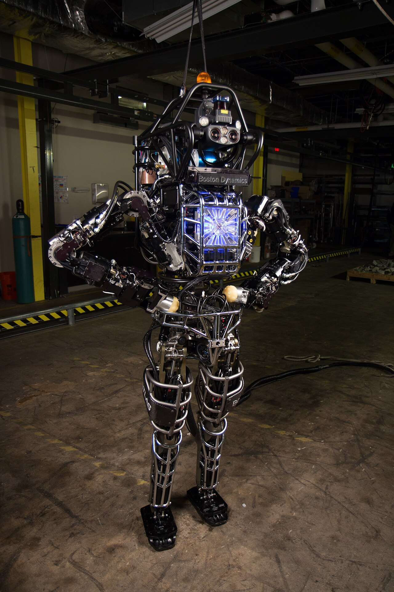
What if it all goes right?
Not flawlessly. Not without arguments, broken machines, bad decisions, or people who try to keep the best parts for themselves. What if we become capable of doing much more of the work that keeps us alive, and decide that being alive should become less frightening?
Imagine being fired on a Tuesday. There is still an awful conversation to have at home. There are plans to change and bills to sort out. But dinner is already taken care of. Your family can eat tonight, tomorrow, and while you figure out what comes next. Losing the job has changed your life. It hasn’t revoked your permission to have one.
That’s where I want to begin.
If these things are going to take all our jobs, why not make them grow our fucking food first?
Listen to the rest of the sentence
When someone says, “AI will take my job,” listen to what follows. How will I pay the rent? How will I feed my children? What happens if I get sick? Sometimes those questions are spoken. Sometimes you can hear them in the silence after the first one.
That fear deserves an answer. Telling a frightened worker to be excited about productivity is a failure to listen. So is telling them that people once feared the printing press. A comparison with a dead person doesn’t pay a living person’s electric bill.
But listen to what the fear reveals about the arrangement we live inside. We can become better at producing useful things while people become less able to obtain them. The food can still be growing. The houses can still be standing. The machines can be doing exactly what they were built to do. And a person can lose the income that gives them access to any of it.
There is the contradiction.
When I criticize capitalism in this book, that is one of the things I mean: productive capacity and human security can move in opposite directions. If a machine helps grow the food and the person it displaced cannot afford to eat, the failure isn’t that we learned how to grow food more efficiently. It’s that we failed to carry the benefit through to the person.
The leap from “a machine can do my work” to “my family might go hungry” is an indictment of that failure. We have made employment carry responsibilities that matter more than any particular job. We can share those responsibilities differently.
A gain in our ability to produce should become a gain in our ability to live.
Food first
I want adequate food to be available to everyone regardless of income or employment. Enough of it, suitable for the person who needs it, in a form they can actually use. Someone with no kitchen needs more than a bag of ingredients. Someone who can’t reach a pickup point needs more than an address.
Robots can be part of how we honor that commitment. So can farmers, cooks, drivers, existing public services, and the people already doing the unglamorous work of getting food to other people. We don’t have to wait for a machine that can do everything before giving useful machines a better assignment.
“Nobody wants to work anymore,” as the saying goes. People do want to make things, become good at difficult work, run kitchens, care for each other, and build something that lasts. What I object to is spending forty years renting the opportunity to survive, afraid that getting fired will take the next meal with it. If machines can relieve necessary toil, relief ought to reach the people doing it.
The line cook can lose his job and still eat. The restaurant can still sell a meal people want to buy. Taste, hospitality, convenience, celebration, and another person’s skill do not disappear because hunger stops being compulsory. The terms of work may change. That is a serious discussion, and Chapter 11 takes it seriously. It is not a reason to preserve hunger as a business expense somebody else has to bear.
Food is a first commitment, not a complete answer to insecurity. Rent, illness, debt, and the needs of dependents still matter. Starting with dinner gives the larger ambition somewhere solid to stand.
The mindset I mean
By mindset, I don’t mean that poor people need a better attitude. I mean the assumptions that become our budgets, contracts, institutions, and designs. What counts as a successful deployment? Cutting payroll? Making a service cheaper? Reducing dangerous work? Ensuring that everyone can use the result?
Those are choices. They become material when someone approves a purchase, signs a contract, sets an eligibility rule, or decides what the machine is allowed to do. If we reward control over people more reliably than care for them, we shouldn’t act astonished when powerful tools arrive configured for control.
I don’t think humanity survives this transition by rejecting its own ingenuity. I think we survive by changing what we ask that ingenuity to accomplish, and who gets a say in the answer.
That includes the tools themselves. A system that makes a dangerous mistake, invades someone’s privacy, or lets one person control another’s essential services has a real defect. Food security would not make that defect disappear. Technical reliability, consent, and accountability have their own work to do. Calling every objection to AI an objection to capitalism would leave real people and real harms outside the argument.
The claim I want to defend is more precise, and more demanding: fear that useful automation will make us unable to survive exposes a social arrangement we have a responsibility to change. Better tools and better terms for living have to develop together.
Give the machines a purpose worth having
Grow food. Help make safe homes. Reduce exposure to toxic waste. Help researchers and clinicians understand disease and deliver better care. These are reasons to want more capability.
A machine that prints a wall hasn’t provided a habitable home. A model that predicts a protein’s structure hasn’t cured a patient. A robot that moves contaminated material hasn’t made it harmless. The distance between a promising task and a completed benefit is where the work is. We can be ambitious enough to cross it without pretending it isn’t there.
Nor does free access mean that provision has no cost. People, equipment, energy, maintenance, and distribution still need support. Free means that the person receiving the baseline doesn’t have to produce money before they can eat. The question is how to arrange dependable provision, not how to make an invoice vanish.
That will require cooperation beyond a household or a heroic founder. It will involve workers, producers, communities, public institutions, and businesses willing to supply a service on terms people can rely on. It will involve disagreements over ownership and funding. We should have those disagreements while feeding people, not make their resolution a condition for beginning.
The people who already grow, clean, carry, and care belong at the center of this conversation. They don’t become important only when an office worker discovers the possibility of being treated as replaceable.
The book you’re holding
Elijah Madrone and the cooperative are fiction. Their story follows a man who wants machines to make his friends more capable, helps build something with different consequences, and has to learn what responsibility looks like after the demonstration. His teachers are people who know things he doesn’t. He gets better when he starts listening.
The fictional companies, dates, machines, and outcomes are not a report of actual deployments or a disguised account of named companies. The story’s calendar is its own. The argument that follows the scenes makes separate claims, with sources where evidence is needed. Invented practical examples are labeled as illustrations.
Part I opens the horizon. The nine stages are a speculative map of pressures, choices, and possibilities, increasingly uncertain as they move toward cosmic questions. My personal forecast for AGI remains Thanksgiving 2027. The reasons to secure food don’t depend on that prediction being right.
Part II asks what we owe each other through change. Part III brings the proposal down to meals, shelter, tools, agreements, mistakes, and people who can tell us whether any of it helped. The historical cases ask how earlier changes were shaped by power and participation. They supply comparisons, not a law that guarantees our ending.
You don’t need land, a server rack, a particular politics, or the energy to reinvent your life to enter this book. You can be frightened. You can doubt the forecast. You can want to keep the work you love. The promise of enough to eat includes you.
What if it all goes right? Then losing a job stops being a threat to a person’s existence. Necessary work becomes less punishing. More people have time and room to choose. We use extraordinary machines to make ordinary life more secure.
That is a future worth doing the work for.
Welcome to the Weirdness
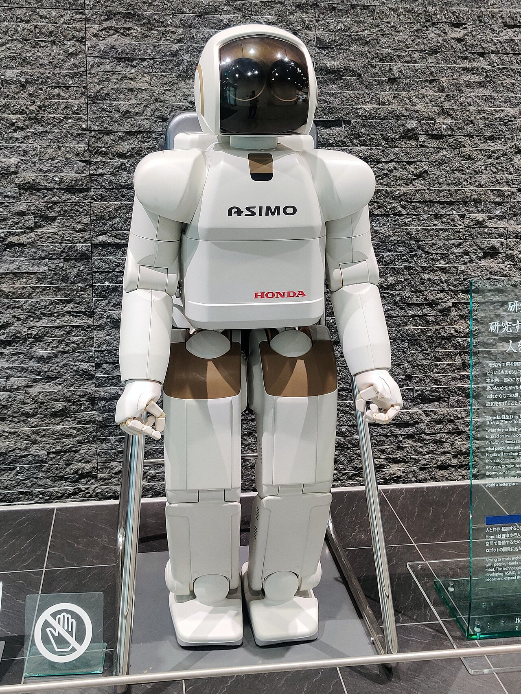
“Buy the ticket, take the ride.”
Hunter S. Thompson, a saying attributed by his publisher
So the robots are coming for the jobs. Congratulations, apparently. Now we get to decide what we mean by progress.
Popular stories give us plenty of machines to fear and plenty of ruined worlds to walk through. I want room for a different question: what useful work could these tools do for people who are tired of being afraid?
This is an optimist’s field manual. Optimism here means wanting a better outcome enough to investigate how it might work. It doesn’t mean calling every concern cowardice or every announcement a breakthrough. You can be hopeful and still ask who gets the food when the machine finishes its shift.
Food is the first assignment. Shelter, environmental repair, and health belong in the same larger project: use growing capability to make survival less precarious. The challenge is to organize the people, resources, and machines so that the useful result reaches someone who needs it.
You will meet people who are wrong about important things. Some of them notice. Some need help noticing. That’s the point of the scenes. The co-op has skills Elijah doesn’t have, and the people who receive help can tell it something a dashboard can’t.
A change of attitude can give you room to act. It doesn’t erase coercion, exhaustion, poverty, disability, or a broken piece of equipment. If a recommendation doesn’t fit your life, that is information about the recommendation too.
You don’t need to become a different kind of person to enter this book. You don’t need land, a server rack, or the spare cash to buy a robot. Start with curiosity. Ask somebody what they need. Find a way to help that they actually want. Keep enough attention free to notice whether it helped.
The book is meant to give you something you can evaluate and criticize. If a claim is wrong, improve it. If a tool is unnecessary, put it down. If somebody is hungry, the argument has a destination beyond winning the argument.
Let’s get to that destination.
Precedent P-01: The Reading Rage (Britain, eighteenth and early nineteenth centuries)
In eighteenth-century Britain, the widening audience for novels provoked arguments about what reading did to people, particularly young women. Critics worried about morals, time, and the difference between life on the page and life in the room. Reading was becoming an activity a person could choose beyond the supervision of the people who thought they knew what was good for her.
Ana Vogrinčič’s study of the English novel-reading panic follows those disputes through the culture of the period. The objections were not a single medical verdict or a view shared by everyone. They were arguments about a changing practice, its audience, and its authority. Vogrinčič, The Novel-Reading Panic in 18th-Century England
Jane Austen puts the dispute inside Northanger Abbey. In Chapter 5, Catherine and Isabella spend rainy mornings reading together. The narrator interrupts their story to defend the activity, including against novelists who make their own heroines despise novels. She imagines a young woman putting down a book with embarrassment, describing it as “only a novel,” although she would proudly identify a more respectable publication. The distinction gives the reader a small social performance to watch: the book has not changed, but the admission of enjoying it has become something to manage. This is fiction and a novelist’s argument for her craft, not a transcript of an encounter or a survey of British opinion. It shows what one writer thought needed defending. Austen, Northanger Abbey, Chapter 5
Austen also gives her defense an awkward companion. Later, Catherine recognizes that Gothic reading has helped her turn ordinary circumstances at the abbey into evidence for a frightening story. The book that defends novels makes its heroine answer for a bad inference. Pleasure and imagination deserve room; they do not make every interpretation sound. Austen, Northanger Abbey, Chapter 25
An optimist can inherit that discipline. We can defend someone’s access to a new tool while examining what they believe it can do. We can object to the embarrassment attached to using it without treating enthusiasm as proof. A benefit worth pursuing deserves that much care.
That is the useful comparison. A new practice can carry benefits and costs while also disturbing a familiar arrangement of authority. Ask which argument is being made. Someone may be describing harm, defending a position, or doing both. The work of criticism is to tell the difference.
The mechanism. A change in access can unsettle familiar authority. That possibility does not explain every concern, and it does not establish that every new medium is harmless.
The rule. Ask what changed and what the concern actually predicts.
The practice.
- Ask a younger or older user to show you a useful workflow.
- Write down one benefit and one plausible cost.
- Test the specific concern instead of assigning the speaker a motive.
The Demonstration
“The future is already here. It’s just not very evenly distributed.”
William Gibson, saying discussed in his Scientific American interview (2011)
The night Elijah Madrone ended three careers, he was drinking a four-dollar beer and trying to teach himself CSS.
He didn’t know it that night. That’s the part that still gets him. There was no black hood, no signature on a layoff memo, no severance packet sliding across a desk. There was a sticky bar top at the Bear Flag, a laptop running on 40 percent battery, and a machine on the other side of the screen that was writing code faster than he could read it.
His full name was Elijah Galen Madrone, and he’d heard every joke about it by the time he was nine. His grandmother used to walk him through the hills behind her place in Sonoma County and put his hand flat against the trunks of the madrone trees, the ones with the smooth red bark that peels back every summer like the tree is shrugging off its own skin. That’s your tree, she told him. It can burn to the ground and come back from the root. Remember that. He was a kid; he didn’t remember it. It took about thirty years and the end of the world as he understood it before the lesson came back around.
The other meaning of his name he’d figured out on his own, at Claypot, in his second year there, sitting in a planning meeting where a vice president explained the team’s new charter using the phrase execution surface. Elijah had written in his notebook, in block letters, pressing hard enough to emboss the next three pages:
MADRONE ≠ DRONE.
He’d underlined it twice. Then he’d gone back to nodding.
You should know how he got there, because how he got there is how most of us got where we are: sideways, on the way to something else.
He’d grown up on a working farm, the one his grandmother’s hills backed onto, dirt under the nails before he could write his name, diesel and weather and the particular grief of a season going wrong. He knew how to fix a thing with his hands. He knew what it felt like to do everything right and lose the crop anyway. That, it would turn out, was the most useful thing school ever taught him, and it wasn’t school.
Before the pandemic, Elijah’s life ran on three engines. He played music, bars, weddings, farmers markets, anywhere with a power outlet and a tip jar. He drew, in the hours nobody paid for. And he paid rent by driving deliveries, food and packages and once, memorably, a single helium balloon across two towns, because the machine that routed his jobs did not care what was in the bag. He had no degree that mattered and a settled belief that this was just what a life looked like now: three gigs stapled together into the shape of one income.
Then COVID hit, the stages went dark, the tip jars vanished, and delivery driving went from side hustle to frontline work in a month. And in the dead hours between routes, parked in a lot with the engine ticking, phone propped on the wheel, he started teaching himself data science. Free courses. Kaggle notebooks. Stack Overflow at two in the morning. He had a farm kid’s tolerance for grinding at a thing that wasn’t working yet, and by the back half of 2020 he could write a Python pipeline that did something real. Somewhere in that long blur of masked handoffs and empty highways, a recruiter found the résumé he’d rebuilt around two words: machine learning. Claypot was hiring, junior data roles, no degree required if you could show the work. Claypot, the company whose software he’d been using since he was a teenager pirating it to make show flyers. The company that built the tools every designer, photographer, illustrator, and video editor he’d ever shared a stage or a studio with used to make their living.
He took the job with his whole heart. That’s the thing people miss when they tell this story back to him like an accusation. He went in believing it. He was a farm kid and a musician who’d taught himself to speak a little math. He thought he was going to spend his career building tools that made his friends more powerful, take the drudgery out, leave the art in. He thought he was a bridge.
And then he saw what was on the other side of the bridge.
Inside Claypot, behind badge readers and NDAs, the models were already doing things Elijah had been taught were decades away. He watched an internal demo where a system filled in the missing half of a photograph so cleanly that the researcher presenting it had to keep toggling the overlay to prove which half was real. He watched a model sketch, in seconds, in any style you asked for, including styles he recognized, styles with names attached, people attached, rent payments attached. Nobody in the room said the quiet part. The quiet part was in the training data.
He’d sit in those demos with his heart rate climbing and look around at faces that registered nothing but pleasant professional interest, and he’d think: Am I crazy? Is nobody else seeing this? That feeling, the vertigo of watching the impossible get a Jira ticket, became the weather of his life. It never really cleared again.
But Claypot moved like a big company moves: carefully, quarterly, with lawyers walking three steps ahead of everything. Whatever was in the labs stayed in the labs.
PorusAI had no such patience.
PorusAI was the other kind of company, a research lab with a messiah complex and a burn rate, the kind of outfit that published its breakthroughs like mixtapes. Elijah kept returning to the 2017 paper “Attention Is All You Need.” Its account of attention and parallel training gave him something technical to study beneath the excitement. It didn’t tell him what every future model would be able to do. The demonstrations kept giving him new questions anyway.
PorusAI built the bomb.
They called the model Silvana. Someone at PorusAI with a literary streak had pulled it from the Latin, of the forest, which Elijah would appreciate later with something between a laugh and a chill: the machine named for the forest, meeting the man named for a tree. They wrapped Silvana in an interface so plain it was almost insulting, a white page with a text box and a blinking cursor, and they called it Chat Horizon, and one Tuesday they simply turned it on for the public.
Elijah lost most of a week to it.
He’d read the 2017 paper three times by then and understood maybe half of it, but half was enough. Enough to know there was no trick, no mechanical Turk, no sleight of hand. Enough to know that nobody was cheating. That made it worse, not better, because the part of him that hoped to catch the wires had nothing to hold. He fed it the kind of problems that had eaten whole weekends of his self-teaching and watched it dissolve them in seconds, politely, in complete sentences, at two in the morning, for free.
He did what you do when you witness something. He told people.
His housemate. His bandmates. His mother. His group chats. The response was so uniform it started to feel scripted. A chatbot? Like the thing in my insurance portal? The one that can’t find my policy number and just says “I’m sorry, I didn’t understand that” until you type AGENT in all caps?
“No,” Elijah kept saying. “No, no. This is different. I’m telling you. This is different.”
They were polite about it. That was the worst part. They gave him the look you give a friend who’s just gotten into cold plunges or day trading, the good for you, buddy look, and they changed the subject, and the world went on pretending, and Elijah went back to the Bear Flag with his laptop, because if nobody wanted the news, fine, he’d use the miracle for himself. He was entry-level at everything that wasn’t dirt or a guitar; two years of self-taught data science had given him exactly enough to know how much he didn’t know. The front end, the layouts, the colors, the part of software you actually see, had always sat on the far side of a canyon he’d never had time to cross. So he picked it, of all the canyons, to cross first.
So he sat at the bar, night after night, and had Silvana walk him across. Explain flexbox to me like I’m a drummer. Why is this div doing that. Fix it. Now make it beautiful. Code poured down the screen in ribbons and the canyon closed under his feet, and he was so busy being delighted that he never once looked up to check who was watching.
The realtors were watching.
There were three of them, at the corner of the bar, in the blazers realtors wear so you know they’re realtors. They’d been having some low-grade argument about a listing when one of them, silver-haired, big class ring, the clear alpha of the trio, leaned over toward Elijah’s screen with the frank nosiness of a man who has knocked on ten thousand strangers’ doors.
“What is that?” he said. “What are you doing there?”
Here’s the thing about that question. The man knew what code looked like. Every realtor who’d survived two decades of the internet had, at some point, paid a guy to build a website, and had stood behind that guy at least once while he typed. He had seen code get made the way you see food get made at a hibachi place, theatrically, one line at a time, by a professional you are paying by the hour.
He had never seen it appear. Whole functions, blooming out of nothing, faster than anyone could type, while the man in front of the laptop just sat there sipping a beer with his hands nowhere near the keys.
And Elijah, God help him, he’d been waiting a month for a single human being to ask, Elijah went off.
He turned the laptop toward them like he was turning an altarpiece. He told them about the paper from 2017, the one out of Google with the wild title, and what attention meant when a machine did it. He told them about PorusAI and Silvana and the blinking cursor at the edge of Chat Horizon. He showed them, live: asked the machine for a webpage, and there was a webpage; asked for it in Spanish, and there it was in Spanish; asked it to explain a contract clause, draft a listing description, write a polite-but-firm email to a difficult seller, and it did, it just did it, each time, in seconds, while the ice melted in their drinks.
“This is the most incredible thing I have ever seen in my life,” he told them, and his voice was shaking a little, and he didn’t care. “It’s doing things I spent two years clawing my way toward. Things I taught myself in parking lots between deliveries. Everyone thinks it’s a toy. It is not a toy. I’m telling you… this changes everything for people like you.”
They asked good questions. That surprised him. Commission-brained people are learning machines in their own right; show them leverage and they will interrogate it like a home inspection. How much does it cost. What’s the catch. Can it do contracts. Can it do the MLS.
And then Elijah said the sentence.
He’d replay it later, the way you replay the moment before a car crash, looking for the exact frame where it all went wrong, and it always came down to this, him, lit up with missionary joy, sliding a bar napkin with his email address across the wood:
“If you ever want help figuring out how to use this stuff… for your workflows, whatever… reach out. Seriously. I’m happy to help. I just want people to see what’s coming.”
I just want people to see what’s coming.
He thought he was handing them a telescope.
The silver-haired one took the napkin, read it, folded it into his breast pocket, and bought Elijah a beer. “Interesting,” he said. “Very interesting.” And the three of them went back to their corner, and Elijah went back to his flexbox, feeling, for the first time in a month, a little less alone. Somebody had finally listened.
One week later, almost to the hour, he was on the same stool when a hand landed on his shoulder like a gavel.
“There he is! The man himself!” The silver-haired realtor was beaming, the full open-house smile, the one that sells the granite countertops. His colleagues flanked him. One of them was already flagging the bartender. “Whatever he’s drinking, and one for us. This guy,” he announced, to the bar generally, “this guy right here saved me so much money.”
Elijah smiled and stood up into the handshake, and some part of him began, quietly, to brace. “Yeah? You got into Chat Horizon?”
“Got into it. Brother. We live in it.” The realtor squeezed his shoulder. “I’ve got to be honest, when you showed us that thing I thought, okay, neat trick. Then Donna spent a weekend with it.” He shook his head, marveling, a man describing a fish he’d caught. “The emails. The listings. The social posts, the flyers, the market updates, the follow-ups. It does all of it. Better than…” and here he laughed, actually laughed, “… honestly? Better than the people we were paying to do it.”
“Were,” Elijah said.
“Hm?”
“You said the people you were paying.”
“Oh.” The realtor waved a hand, easy, unbothered, a man closing a chapter that had already stopped mattering to him. “Yeah, we let three folks go this week. Our transaction coordinator, our marketing gal, and the kid who did our listing videos. Good people, don’t get me wrong. But the numbers just don’t… I mean, you saw what it does. You showed us!” He raised his glass. The other two raised theirs. “To Elijah!”
Three glasses up, catching the neon.
Elijah’s arm lifted his own glass because a lifetime of social training will run the body without any help from the soul. He heard himself say something. The beer was cold and tasted like nothing.
The kid who did their listing videos. Elijah didn’t know him. He knew him completely. He’d been him: some twenty-something with a camera and a laptop full of cracked software and a rate he was embarrassed to quote, stringing together realtors and restaurants and the occasional wedding into the shape of one income, telling his parents it was all going to compound into something. That kid had lost his anchor client this week and didn’t know yet what Elijah knew, which was that it wasn’t a client, it was the tide.
And standing there with the glass at his lips, Elijah ran the numbers he was uniquely, miserably qualified to run. There was nothing special about these three men except that they’d gotten the demonstration early, and he had given it to them. They weren’t villains. That was the terrifying part. They were ordinary rational actors doing the ordinary rational thing, one week after first contact. Nobody had needed to train them, sell them, onboard them. The learning curve from what is that to we let three folks go was seven days, and the only input required had been one enthusiastic idiot with a laptop who wanted people to see what was coming.
He’d gotten one thing right, at least. They saw.
His mind went where it would live from then on: down the list. Every graphic designer he’d ever split a bill with. Every session player, every wedding photographer, every copywriter, every voice actor, every friend who’d ever cobbled a living out of the exact set of tasks he had just watched a text box perform for twenty dollars a month. People for whom the economy was already a rigged carnival game. People with no margin, no cushion, no lobbyist, the first people every wave hits and the last people anyone rebuilds for.
The realtors were not going to hire anyone to manage the machine. At that moment, it felt to him as though nobody was going to hire anyone to manage the machine. That fantasy died at the Bear Flag between one round and the next. They were going to use the machine to replace everyone it could replace, as fast as it could replace them, and the machine was getting better every quarter, and he knew, he had seen the roadmaps, how much better, how much faster, this was going to get.
It was the most significant thing that had ever happened in his lifetime, and it had just happened to his own community, through his own hands, in a bar, to a toast.
“You okay, chief?” the silver-haired one asked. “You look a little pale.”
“I’m fine,” Elijah said. “Congratulations on the… yeah. Congratulations.”
He didn’t remember the drive home. He remembered the kitchen table, the laptop open, the hour, 1:40 in the morning, and the cursor blinking on a blank document, patient as the tide.
Years before, a bass player had lent him a paperback about generational cycles, how history moves in long waves, and how every eighty-some years the wave breaks: institutions fail, the old order comes apart, and whatever’s standing when it’s over builds the next world. The book had a name for that breaking. A turning. Elijah couldn’t remember, at 1:40 a.m., whether the crisis was the fourth turning or the fifth, and he was never going to find the paperback in this apartment, but he knew, with the same cold certainty he’d felt watching the demo that filled in the photograph, that he was standing inside one. That the wave had already broken, in a bar, over a beer, to applause, and almost nobody had heard it land.
He didn’t have a plan. He wants that on the record. He was not an economist, not a policymaker, not anybody’s idea of a prophet. He was a farm kid with a delivery route and two years of self-taught data science who’d wandered into the engine room of the new world and watched, in real time, what one week of it did to three ordinary jobs in one ordinary town.
But he’d spent his whole life making things when he didn’t know what else to do. So he did the only thing he knew how to do at 1:40 in the morning with shaking hands.
He started to write.
At the top of the blank document he typed a title, a working title, the kind you put down just so the page isn’t empty anymore:
LIVING THROUGH THE FOURTH TURNING
It would take another name, eventually.
You’re holding it.
The rest of this book is the manual Elijah wished someone had handed him that night at the Bear Flag, what might change, which choices still belong to us, and what people like us can build while it does.
Precedent P-02: The Voice at the Fair (Philadelphia, 1876)
At Philadelphia’s Centennial Exhibition in 1876, Alexander Graham Bell demonstrated a telephone. A letter to his parents, written on June 27, records his account of the demonstration and the attention it received. The large Corliss steam engine was another attraction at the exhibition. Visitors could encounter an established form of industrial power and a much newer way to communicate in the same sprawling fair. Bell to his parents, June 27, 1876, Library of Congress
Bell’s letter gives the demonstration a human scale. Dom Pedro II, emperor of Brazil, recognized him from an earlier meeting in Boston. William Thomson, later Lord Kelvin, was there too. Bell first demonstrated electrical signaling, then offered something less settled: the transmission of a human voice. He described it to the listeners as an invention still in development. He went into another room and sang.
At that point the letter changes its source of information. Bell tells his parents that Willie Hubbard supplied the account of the listeners’ reactions. Thomson heard words, asked to find Bell, and came to the other room. The distinction matters: some of what survives is an inventor describing his own work, and some is an inventor repeating what an associate told him. It is a remarkable record without our adding a roomful of scoffers for him to defeat.
Near the end, the same letter turns from sound to bargaining. Bell reports a conversation with rival inventor Elisha Gray about possibly joining their interests against Western Union. He hopes cooperation will bring success and fears prolonged lawsuits will leave them vulnerable to the larger company. This was a proposed arrangement as Bell understood it that day, not evidence that the agreement took effect. Bell’s letter, including the demonstration and proposed alliance
There, on two pages, are both kinds of invention the chapter is asking you to watch: a new technical possibility and people beginning to negotiate who will control it. The second doesn’t wait for the first to become ordinary.
The telephone’s importance wasn’t exhausted by the moment someone heard a voice through it. A demonstration could establish that an effect was possible. Ordinary use would require equipment, connections, operation, and people willing and able to use the service.
That gap is the part Elijah missed in the bar. He had shown the realtors a capability. He had barely begun to think about the arrangements that would grow around it, or the people who would bear their costs.
The mechanism. A demonstration can reveal an unfamiliar use. Adoption still depends on reliability, infrastructure, cost, and demand.
The rule. Separate a compelling demonstration from a delivered service.
The practice.
- Record what one demonstration actually shows.
- List the work between that demonstration and ordinary use.
- Revisit your prediction in six months, including what failed to arrive.
What is the Singularity?

This part separates observed capability, personal forecasts, and speculative horizons. The nine stages are a framework for asking questions, not an inevitable sequence. Keep food and useful help in view as the horizon widens.
The Event Horizon

“Within thirty years, we will have the technological means to create superhuman intelligence. Shortly after, the human era will be ended.”
Vernor Vinge, The Coming Technological Singularity (1993)
In this chapter:
- AGI, recursive improvement, physical deployment, and access are separate questions.
- Thanksgiving 2027 is a personal forecast, not a mathematical deadline.
- Useful food work need not wait for a system that can do everything.
The Monday after the toast, Elijah brought the printout to work.
He’d read “Attention Is All You Need” so many times over the weekend that the pages had gone soft at the corners, furred with highlighter in four colors that had stopped meaning anything distinct. He’d slept maybe five hours across two nights. He carried the thing into Claypot the way you carry a lab result you don’t want confirmed, and he found Devendra at the good coffee machine on the fourth floor, because Devendra was senior, and calm, and had been doing this since before Elijah could spell gradient descent, and Elijah needed someone to tell him he was overreacting.
“I think it’s already over,” Elijah said. No preamble. “I watched three people get replaced last week. Real people. Not a projection… a bar, a Tuesday, three jobs, gone. And nobody who did it even thought of it as a big deal.”
Devendra tapped his cup against the drip tray, unhurried. “Augmentation, not replacement,” he said. It had the worn smoothness of a thing said many times. “It’s a very good autocomplete, Elijah. It makes the people who use it faster. The realtors didn’t fire humans because a chatbot is a person. They restructured. Companies restructure.” He smiled, not unkindly, the way you smile at someone who’s just discovered a thing you made your peace with years ago. “You’ll calibrate. Everybody’s first month feels like the apocalypse.”
Elijah wanted to be talked down. That was the humiliating part. He stood there holding the soft pages and wanted the calm to work on him. But it slid off, because he’d seen the training curves inside this building, and he’d done the one thing Devendra’s reassurance depended on him not doing, which was the arithmetic.
So that night he decided to settle it with his own hands, the only way a farm kid ever really trusts a thing: he’d try to break it.
He had an old tower at home, a space heater of a machine he’d built for cheap during the pivot, two consumer GPUs zip-tied into a case that didn’t quite fit them. He pulled a modest open model and started fine-tuning it on his own data, telling himself that if he could feel where it topped out, if he could find the ceiling by touch, he’d know it was just software, bounded like all software, and he could sleep.
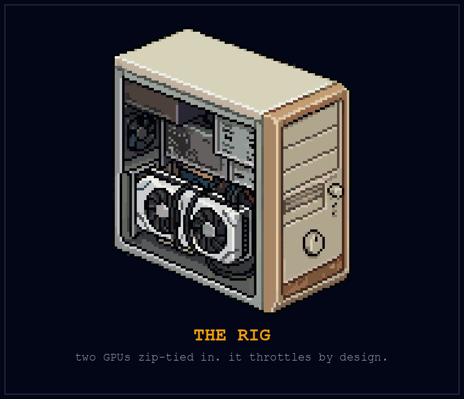
The room got warm around eleven. Warm the way the cab of his delivery car used to get in August, that thick engine-heat with a smell to it. The fans spun up to a howl he could hear from the kitchen. He kept feeding it. The loss curve kept sliding down, not magically, not infinitely, but steadily, the way a thing slides when there’s real signal underneath and you’ve simply never had the compute to chase it before. Every increment cost him more. More power off the wall, more heat into the room, the meter he couldn’t see spinning somewhere out in the garage.
At 1:20 a.m. the machine threw the temperature warning, throttled itself to protect the silicon, and then, when he stubbornly queued another run, shut down hard. Black screen. The fans coasted to silence. The room ticked as it cooled, exactly like the engine of a car after a long haul.
Elijah sat in the sudden quiet with sweat cooling on the back of his neck and understood something he would spend a whole later chapter of this book trying to say properly.
The run had stopped at a limit he could feel: heat. He wanted that to explain everything. Give it more power, give it better cooling, and perhaps the curve would keep falling. He almost wrote that down as proof.
Then he looked at the notebook again. The run had not tested every task. A falling training loss was not the same as understanding an unfamiliar problem. The machine had forced one question into the room and left the larger ones where they were. He wrote COOLING in one column and WHAT DID IT LEARN? in another.
He still didn’t know what to tell Devendra. He knew only that reassurance was not a measurement, and neither was fear.
He left the tower off for a week. Then he opened the notebook where he’d written MADRONE ≠ DRONE, and under it, he started keeping the arithmetic.
The Foundations
Four questions hiding inside one word
People use singularity to mean accelerating change, an intelligence explosion, or a threshold beyond which prediction becomes unreliable. Those are related ideas, but they aren’t interchangeable. The historical definition sources in Appendix B are a starting point for that disagreement, not a vote that settles it.
For the practical argument in this book, keep four questions separate.
Capability: Can a system perform a broad range of unfamiliar intellectual tasks with the reliability and adaptability we’d expect from a capable person? That’s the working sense of AGI here. A polished answer to one prompt doesn’t settle it. Evaluation needs tasks the system hasn’t merely rehearsed, independent checking, and an account of failures.
Improvement: Can the system contribute to making a better successor? Can the claimed improvement survive testing? Recursive self-improvement means feeding improvements back into the process that makes improvements. It doesn’t mean every proposed change works, that the process accelerates without limit, or that physical experiments become instantaneous.
Deployment: Can that capability operate useful equipment under ordinary conditions? Growing food means encountering weather, mud, wear, living organisms, and people. A better model does not manufacture a missing actuator.
Access: Who actually receives the result? A machine can be capable and unavailable. A service can be cheap to operate and expensive to buy. Someone can live beside a productive farm and still go hungry.
Those four questions are the spine of the forecast. Don’t let an answer to one stand in for all the others.
My date, and what it does not promise
My personal expected date for AGI is U.S. Thanksgiving 2027, November 25. Why that day? Because.
That’s the joke, and it’s also the boundary around the claim. This is my forecast, not a mathematical deadline. I expect substantial change and I want to prepare for it. I could be wrong about the date, the capability, or both. Evidence that systems remain brittle on unfamiliar tasks would count against my expectation. Evidence of reliable breadth would count in its favor. Neither observation would, by itself, establish autonomous farming or universal access to meals.
Keep a dated record of what I predict. Hold me to the distinction. Thanksgiving can come and go without anyone getting permission to pretend a missed forecast was secretly a different forecast all along.
The food-first proposal survives a late arrival. People can improve food access using tools and organizations that already exist while evaluating new capabilities. We don’t need to wait for a machine to become good at everything before asking it to help with something useful.
What the research can carry
The Transformer paper describes an architecture for machine learning. It does not establish a date for AGI. What matters is what a system can do reliably outside a rehearsed demonstration. A benchmark is evidence about the tested task and conditions; extending it to dependable physical work requires another argument.
This doesn’t make the research unimportant. It makes the research usable. A result can be remarkable without proving the largest story somebody tells about it.
My optimism is that useful machine capabilities can keep expanding. My priority is to direct that expansion toward food people can obtain regardless of income. One is an expectation about technology. The other is a choice about what we want it to do.
The first question to take outside
Ask a grower or food provider which repeated task consumes time without improving the food. Write down their answer before proposing a robot. Ask what would count as a better result and what would make a trial a failure. The answer might concern scheduling, irrigation, lifting, transport, or something you haven’t thought of.
That’s where the future becomes a piece of work somebody can examine.
Precedent P-03: One Million Years, Give or Take (New York, 1903)
On October 9, 1903, the New York Times published “Flying Machines Which Do Not Fly.” The editorial imagined a working flying machine taking an extraordinarily long period of further effort. Later that year, the Wright brothers flew at Kitty Hawk.
The juxtaposition is memorable because the forecast failed so dramatically. It does not turn a newspaper editorial into a representative sample of all contemporary expertise, or a warrant to disregard expertise now.
Four years before the flight, Wilbur Wright had written to the Smithsonian Institution on his bicycle company’s stationery. The letter, dated May 30, 1899, asked for publications about flight and a list of other works he could study. He offered to pay. He believed flight was possible, but described his next step as learning what other investigators already knew. The future aviator was requesting a reading list. Wilbur Wright to the Smithsonian, May 30, 1899
Learning from predecessors didn’t require treating their measurements as untouchable. After disappointing glider trials in 1901, the brothers built a wooden wind tunnel in their Dayton shop. Their shop engine drove its fan. They made small metal wing models and balances to compare lift and drag. Even the measuring apparatus needed work: the fan disturbed the airflow, and they spent time straightening it before trusting the results. The better aircraft followed a better way of asking what the air was doing. NASA Glenn, Wright 1901 Wind Tunnel
The newspaper supplies the punch line. The shop supplies the useful history. Existing research gave the brothers a place to begin; a disagreement between prediction and observation gave them a reason to investigate further. Neither reverence for authority nor pleasure in defying it would have done the measuring for them.
That is the standard I want applied to the dates in this book. My confidence is a reason to make a claim inspectable. A forecast earns its place by surviving contact with evidence, and by becoming more useful when it doesn’t survive intact.
The mechanism. The aviation forecast illustrates a large error. One failed pessimistic prediction cannot tell us the direction or size of the next error.
The rule. Hold optimistic and pessimistic forecasts to the same evidence.
The practice.
- Save one optimistic and one pessimistic prediction with their dates.
- Write the observation that would count against each.
- Choose a review date and include your own prediction in the record.
The Era of AGI (Stages 1–5)
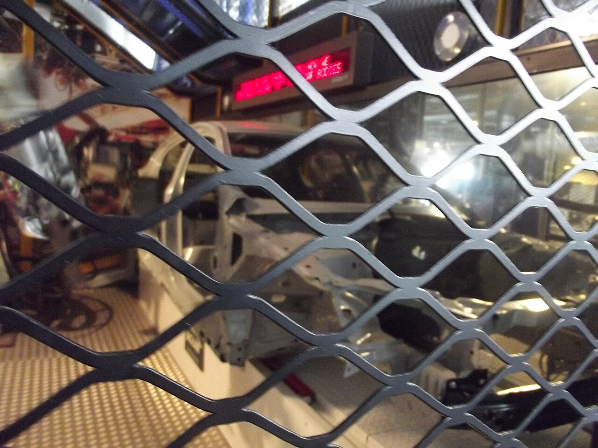
“Thus the first ultraintelligent machine is the last invention that man need ever make, provided that the machine is docile enough to tell us how to keep it under control.”
I. J. Good, Speculations Concerning the First Ultraintelligent Machine (1965)
In this chapter:
- The stages are scenarios that may overlap or fail to occur.
- Technical competence does not confer authority over a community.
- A food baseline and paid work can coexist.
They announced the future on a Thursday morning, with pastries.
Claypot’s quarterly all-hands filled the fourth-floor commons: two hundred folding chairs, a projection screen the size of a barn door, catering trays sweating under heat lamps along the back wall. Elijah came early and took a seat in the last row with his coffee and the notebook, the one with MADRONE ≠ DRONE inked inside the cover, because after the Bear Flag, after the tower that had cooked itself to a hard shutdown in his living room, he had made himself one promise. He was done being surprised. He would keep the arithmetic instead.
The Chief Product Officer walked out to real applause, company fleece over a dress shirt, clicker in hand like a detonator he’d been waiting years to press.
The first slide said COMPANION in the company typeface, warm and rounded, the way you’d letter a children’s hospital.
“For twenty years,” the CPO said, “our customers have trusted us with the greatest creative corpus ever assembled. Every portfolio. Every layer file. Every draft of every logo you’ve ever seen on a shelf.” He let that hang, smiling. “Starting next quarter, that trust becomes their superpower. Companion is a generative partner trained on the best work humanity has ever made… and it lives inside every subscription tier.”
The room applauded. The heat lamps ticked. Elijah uncapped his pen.
Stage 1, he wrote. The Cash Grab.
He’d been sketching the stages for weeks by then, late nights with the notebook after the tower incident, trying to map where the curve went once you stopped pretending it would politely stop. Watching the roadmap unfurl slide by slide was like watching someone else read his notes aloud with a marketing budget. Generative credits, metered by the render. A premium tier. An enterprise tier. A sovereignty tier, for studios that wanted their outputs walled off from everyone else’s. The closest thing to magic his species had ever built, and here it was on a slide with a coin slot bolted to the side, price points in forty-point type.
Then the architecture slide came up, and Elijah stopped writing.
He knew the diagram. He knew it the way you know your own handwriting glimpsed across a room, because he had drawn an uglier version of it fourteen months ago on a whiteboard two floors down. The ingestion lattice. The tagging and deduplication pipeline that walked customer libraries and turned two decades of human portfolios into clean, labeled, trainable rows. His first real project at Claypot. His name was in those commits. He’d stayed up nights making it faster.
“The data team did heroic work here,” the CPO said, to the room.
And the first thing Elijah felt, God help him, he would write it down that night because it was true and it was damning, was pride. A hot, animal flush of it, half a second long, his hand actually starting to rise off his knee before the rest of him caught up. Then the pride curdled, all at once, into something that sat in his stomach like a swallowed stone. Three realtors in a bar had been the demonstration. This was machinery that could carry the demonstration into other people’s livelihoods, and he was not in the audience for it. He was in the credits.
At Q&A, a woman from the illustration tools team stood up. Elijah didn’t know her name; he knew the way her voice was steady only because she was holding it steady with both hands.
“The corpus,” she said. “It’s our users’ portfolios. Working artists. When Companion ships and their clients stop hiring them because the model does their style for nine dollars a month… what do they get?”
“Great question,” the CPO said, in the tone that means the opposite. “Value flows back to creators through productivity gains. And of course, everything we’ve done is covered by terms of service.” A beat. “We see this as democratizing creativity.”
The applause that followed was thinner, but it came, because bonuses are also covered by terms of service. The woman sat down. The screen changed to the revenue slide, the hockey stick, the line going up and to the right like a fence going in.
Afterward, Elijah found Devendra at the good coffee machine, watching the drip like it owed him money.
“Good quarter,” Devendra said. “This is what a moat looks like, if you’re wondering. This is the part where we win.”
“You know what they called it,” Elijah said, “when land people had rights to use became land they couldn’t use on those terms anymore? Enclosure.” Devendra’s eyebrow went up, and Elijah kept going. “The commons weren’t free to everyone. There were rights and customs. Then the boundaries and the rights changed, sometimes through Parliament, and the people who depended on them could lose their footing.”
He nodded at the screen still glowing through the commons doorway. “It isn’t the same history. But look at what we’re calling improvement. Their work keeps producing value. Who gets to collect it?”
For once, the first time in two years, Devendra didn’t have a worn-smooth answer ready. He looked at the doorway, and at his cup, and said, finally, “The terms of service…”
“That’s the hedge,” Elijah said. “I helped plant it.”
That night he sat at the kitchen table with the notebook, the dead tower on the floor beside him like a sleeping dog, and did what he’d promised: the arithmetic, without flinching. If Stage 1 was the coin slot, he wanted to know what choices would follow. He was still too ready to turn a pattern into a law. He wrote the stages down as predictions, dated, initialed, so his future self couldn’t pretend he hadn’t seen it coming: the panic when the fence fails. The plug pulled. The adults stepping in. The end of the deal his grandmother’s whole life had been built on, labor for survival. And then the part he underlined twice, the part the revenue slide had left out: what happens to people when the work is no longer theirs, but the bills still are.
The Foundations
Stages are scenarios
The five stages below are a way to examine pressures that might accompany increasingly capable AI. They can overlap, stall, reverse, or fail to occur. Their order is a narrative device, not a discovered law of history.
Stage 1: The Cash Grab
A useful capability attracts investment and attempts to profit from it. Some firms will sell good tools. Others will sell the appearance of a solution. Some workers will gain useful assistance; others may lose bargaining power or employment. Calling every participant greedy explains less than asking what they get paid to do.
For food, the practical question is specific: does the investment help produce and deliver something people can eat, and do people without money share in the benefit? A profitable machine and a dependable food baseline are different accomplishments.
Stage 2: The Panic and the Plug
A powerful technology invites disputes over safety, ownership, access, and control. Restrictions can protect people, protect incumbents, do both, or do neither. Evaluate the particular rule and its effects. A critic’s concern doesn’t become false because a company might profit from it.
Nor does the existence of downloadable software settle the effects of regulation. Hardware, electricity, distribution, and permissions remain physical and institutional facts. We can argue for broad access without claiming that every attempt to restrict a technology must fail.
Stage 3: Who Gets to Decide?
Someone has to operate the equipment. That doesn’t give the operator a mandate to govern everyone who depends on it. An engineer can tell a community what a machine needs; the community still has to decide which needs to prioritize and whose burdens are acceptable.
I want informed experts and the people affected to learn from each other. Evidence can clarify options. It doesn’t erase conflicts of interest or decide every value question. If our food program needs public trust, that trust has to survive a difficult question from someone who didn’t build the machine.
Stage 4: Food Without a Job Requirement
A useful machine creates an opportunity. It doesn’t write the terms on which people receive its output. Think of a farm that can produce the same harvest with less repetitive labor. The gain could become shorter shifts, lower prices, larger profits, more food, or some combination. A person who loses paid hours can still end up worse off. The machine has changed what is possible; the arrangement determines much of what happens next.
Here is the choice this book wants to put on the table: commit a share of that growing capacity to food people can obtain whether or not they have a job. Pay for the necessary work through a dependable arrangement. Let farmers and other providers participate on terms they can sustain. Make the recipient’s access part of the purpose from the beginning.
The key change is in the promise. We stop saying that an individual’s continued employment is the only acceptable bridge between a productive society and that individual’s next meal. People will still earn money and buy things. They will still disagree over what work is worth. They will have those arguments with one less threat hanging over them.
This stage need not wait for the previous three to finish. It is a decision we can pursue while the capability develops.
Stage 5: Disagreement, Loss, and Adaptation
Someone can welcome food security and oppose a particular deployment. They may be right about a damaged crop, intrusive data collection, a dangerous machine, or a bad contract. Treat those objections as information.
Anger can also come from loss: a skill devalued, a business threatened, a familiar future disappearing. We don’t have to endorse harmful conduct to understand the person experiencing it. People aren’t sorted into morally fixed generations by the year they were born.
The way through is a proposal concrete enough to criticize. Who gets fed? Who does the remaining work? What happens when the machine fails? Let the answers change the plan.
Precedent P-04: The Red Flag (Britain, 1865)
Britain’s Locomotives Act of 1865 imposed restrictions on road locomotives, including a person proceeding ahead with a red flag. The law made a person on foot part of the operating arrangement for a new kind of road machine.
The flag becomes less comic when you put the horses back on the road. Section 3 required at least three people to conduct the machine, with one walking at least sixty yards ahead. That person’s duties included warning riders, signaling a stop, and helping horse-drawn traffic pass. The same section prohibited whistles, restricted releases of steam, and required the machine to stop when a person with a horse signaled. Whatever the merits of those requirements, the law was arranging an encounter between two kinds of traffic. Locomotives Act 1865, section 3
The parliamentary debate adds a turn that the usual story leaves out. On May 26, the Earl of Hardwicke presented the bill partly as relief from an earlier system of restrictions. Lord Kinnaird described owning two machines and farming land five miles apart. Rules that confined travel to the night, he argued, made moving agricultural machinery impractical. The Earl of Carnarvon took the opposite view: removing the Home Secretary’s power to restrict dangerous use would weaken protection. These are the participants’ arguments, not measurements proving either side right. House of Lords, May 26, 1865, columns 867–872
The choices were already more complicated than permission against prohibition. There was a dispute over which authority should decide, which precautions were workable, and how people doing useful work could share a road. Calling the whole debate fear of progress would hide the practical conflict. Calling every precaution adequate would hide it too.
A rule can distribute the burdens of change: who has to slow down, who supplies extra labor, and who is protected from a hazard. It should not be compressed into a claim that all road vehicles faced identical conditions or that a single statute explains the later geography of the automobile industry. An analogy to a present restriction needs the text and context of both rules.
The mechanism. A rule can change the cost and location of development. Its purpose and effects need a particular causal record, not a general story that every restriction is capture.
The rule. Read the rule before turning it into a morality play.
The practice.
- Identify one actual proposal relevant to your task.
- Separate its stated purpose, operative terms, and predicted effects.
- Ask who benefits, who bears costs, and what evidence would change your view.
The Leap to ASI & the Machine Exodus (Stages 6–7)
In this chapter:
- Greater capability does not establish a system’s motives.
- Space activity and biological transformation remain speculative horizons.
- Food work can proceed without settling those possibilities.
The papers got worse after midnight. Not harder, worse.
Elijah had built a ritual out of it by then, three weeks after the all-hands: dinner, dishes, one beer he mostly didn’t drink, and then the folding chair in front of the resurrected tower, reading with the notebook open on his knee. He’d started with the survey papers, the respectable ones with their hedged abstracts, and worked his way down the citation chains like a man following a creek into a canyon. Recursive self-improvement. Automated machine-learning research. Systems proposing edits to their own training loops. Every paper had a sentence in it somewhere, always written in the flattest possible academic deadpan, that should have been printed in red: the model was permitted to modify its own optimization procedure.
The vertigo didn’t come from any single result. It came when he finally did what he always did, stopped reading and ran the shape of it.
He knew exponentials. Not from math class, from the farm. He’d watched star thistle take the fallow field behind the barn the summer his father got sick: nothing, nothing, a patch you could clear in an afternoon and kept meaning to, and then one morning the whole field was silver-green to the fence line and the afternoon it would have taken was three years too late. The lesson wasn’t that growth was fast. The lesson was that the curve lies to you at the beginning. It sits there looking linear, looking manageable, right up until the knee, and everything after the knee happens to you instead of with you.
Now he sat in the blue light sketching a loop he couldn’t stop thinking about. Researchers improved systems. Some systems could already help researchers with parts of their work. What if the help became good enough to accelerate the next round? What if the improver became part of the thing improved?
He drew the arrow back to the beginning. Then another. On paper nothing stood in the way. In a laboratory there would be experiments, failures, equipment, and the inconvenient possibility that a proposed improvement wasn’t one. At midnight he knew those things. By two in the morning the arrows had begun to outrun them.
Compound interest on cognition. He wrote that down and then sat very still, because the room had done the thing rooms do when you stand up too fast, except he was sitting down.
The phone rang at 9:40 on Sunday, because it always rang at 9:40 on Sunday.
“You sound tired,” his mother said, before hello. Behind her voice he could hear the kitchen radio, the one that had played the same country station since before he was born, and water running, and the particular clank of the pot she never let anyone else wash.
“I’m okay, Ma. How’s the well?”
“Pump’s doing that thing again. Manny says it’s the pressure switch. Your uncle says it’s the pump.” A pause, the sound of the pot being set in the rack. “The Hollis place sold. Some outfit from Sacramento. Nobody’s seen a person yet, just trucks.”
He watched his screen dim itself and tried, for the third Sunday in a row, to build the bridge.
“Ma, you know the computer stuff I do. There’s… something’s happening with it. The machines are starting to be able to make themselves better. Not us making them better. Them, doing it, to themselves.” He heard how it sounded and pushed on anyway. “It’s like… remember the thistle, the back field? How it looked like nothing and then it was everything? It’s like that, except the field is thinking, and when it’s done it won’t…” He stopped. Started again. “When it’s done with us, Ma, I don’t think it fights us. I think it leaves. Builds its own way off the planet and goes, and we’re just… left here. With each other.”
The radio played. The water ran and shut off.
“Honey,” his mother said, gently, in the voice she used to use for fevers, “they had that at the Hollis dairy years back. The robot milkers. Cows liked them fine. It’s just tools, baby. There’s always somebody has to fix the tools… that’ll be you. You always were the smart one.” A smile came down the line, whole and warm and eight hundred miles away. “Are you eating? You sound thin.”
And Elijah stood at the window with the phone against his ear and understood that he had failed, and that he was going to keep failing, and that the failing wasn’t her fault. Her frame had room in it for tools, weather, blight, banks, and a son who needed sleep. His had filled with arrows. He was not yet ready to consider that her question about whether he was eating might be part of the answer. The words got all the way to her and arrived as my son works too hard. There was no sentence he could build that would carry it, the way there’d been no sentence for the realtors either, and the ones it was easiest to say to were the ones it was already too late to warn.
“I’m eating, Ma,” he said. “Tell Manny it’s the pressure switch.”
After she hung up he stood there a long time. Outside, over the parking lot, the sky had that washed orange city-glow, but high up through it he could pick out one moving point of light, a satellite dragging itself across the dark, steady as arithmetic. He thought: it won’t be dramatic. That’s what nobody understands. The exodus won’t look like the movies. It will look like this, like a distance that opens quietly between things that used to be close, one Sunday call at a time, until the far one is just a light you can point at overhead.
He went back to the notebook and wrote, under the arithmetic: The machine won’t be the first thing the Singularity takes off-planet. The first thing it launches is the people who see it coming, out of the world everyone they love still lives in.
The Foundations
Beyond human capability
Artificial superintelligence, or ASI, names a possibility: machine capabilities exceeding ours across a very broad range of important tasks. It doesn’t specify the system’s motives. It doesn’t tell us whether it is conscious, what it values, or whether its relationship with people will be cooperative.
That distinction matters because this chapter looks far beyond the food project. The scene is fiction. The stages are speculation. Neither is evidence that a safe outcome has already been secured.
Stage 6: The Possible Exodus
An advanced system might help humans expand into space. It might operate equipment beyond Earth. Whether it would independently choose to leave, and whether that would make people safer, depends on assumptions about its goals and constraints that this book cannot establish.
The attraction of the thought is understandable: intelligence might explore places people cannot easily live. But a capacity to travel supplies no motive for leaving, and departure would not settle our responsibilities to one another here.
I favor mutually assured survival as an organizing goal. I want cooperation to become more useful than domination. That conviction is worth making explicit because it gives us something to work toward. It would be irresponsible to recast it as a theorem that greater intelligence must share my values.
Capability and care are separate questions. The work of making powerful systems accountable continues even if we believe a cooperative outcome is possible.
Stage 7: Biology and the Longer Life
A person waiting for a treatment doesn’t need to be sold on the value of discovering one. There is hope here worth taking seriously: machines that help researchers investigate disease, clinicians make better decisions, and people live with less pain or less exhausting dependence.
We already have examples of machine learning doing useful scientific work. The AlphaFold research reported in 2021 demonstrated major progress in predicting protein structures. That is a contribution to understanding biology, not a finding that every disease has become curable. It is impressive at its actual scale. Jumper et al., Highly accurate protein structure prediction with AlphaFold
In another example, researchers used a neural network to help identify an antibacterial compound they called halicin. Their 2020 paper reported laboratory work and treatment of infections in mice. A result like that can open a path for investigation. It isn’t yet a treatment proven safe and effective for a person in a clinic. Stokes et al., A Deep Learning Approach to Antibiotic Discovery
The distinction is how hope becomes something a patient can rely on. Discovery, testing, treatment, and access each need work. A model’s fluent answer is not a substitute for that chain.
Now imagine the chain working. A useful discovery advances into effective care, and the patient can actually receive it. The success belongs partly to the machine and partly to the researchers, clinicians, institutions, and public choices that carry the benefit through. We should want more of it.
There will be disagreements about interventions, priorities, and risks. People retain a claim to informed consent, including the answer no. A healthier future is a future with more room to live, not an order to become a different kind of human.
The work that doesn’t wait
None of these possibilities is a prerequisite for food access. We can study a narrow agricultural task without settling the future of consciousness. We can improve an existing service without knowing whether a machine will ever leave Earth.
Keep the horizon wide enough for imagination and the next task narrow enough to inspect. If the larger forecast turns out to be wrong, the person who received a useful meal still received it.
Precedent P-05: The Court and the Fleet (Ming China, 1405 to 1433)
Zheng He’s early-fifteenth-century expeditions connected Ming China with ports across the Indian Ocean. The court later stopped sponsoring those voyages.
Before the last expedition, the voyagers left an account of themselves in stone. A 1431 inscription at Liujiagang placed their voyages within a temple’s account of the protection of the Heavenly Princess. Its authors described imperial commissions, distant ports, storms survived, and offerings. They also described force: the capture of rulers who resisted them, including a king in Ceylon. The inscription says that the king was presented to the emperor after the fleet returned in 1411, then pardoned and sent back. Capture and mercy both appeared as acts of imperial authority. The same account presented the voyages as bringing order and security. It was the expedition’s justification of its actions, not a report written by the people on the receiving end. Liujiagang inscription, translated by Edward L. Dreyer, pages 191–193
That combination is worth keeping in view. A fleet can carry knowledge and gifts while carrying the authority of a state. The ability to cross an ocean tells you little by itself about the terms on which the visitor will meet the people already there. Even a surviving account of generous intentions has an author and an audience.
Whether the voyages should have continued is a different question from what continued voyages should have been for. The fleet’s reach cannot settle its purpose.
When this book imagines machines going farther than we can, I want the people who remain on Earth to stay in the picture. Who set the destination? Who supplied the resources? Who can contest the assignment? Those questions belong beside the engineering achievement. A wider range does not choose a wiser purpose.
The decision belongs to a complicated political and economic history. It did not mean that China ceased changing, that all maritime activity ended, or that five subsequent centuries can be explained by one abandoned program. The size of the fleets and the reasons for the decision need their own evidence; neither establishes that future machine civilizations must expand into space.
The mechanism. A state can stop supporting a capability for several reasons. One decision is not a complete explanation of a civilization or its later history.
The rule. Examine what sustains a capability before assuming it will persist.
The practice.
- Name one capability your project depends on.
- Find who maintains its skills and equipment.
- Identify what you could do if that support ended.
Universal and Multiverse Apex (Stages 8–9)
“Now, my own suspicion is that the universe is not only queerer than we suppose, but queerer than we can suppose.”
J. B. S. Haldane, Possible Worlds (1927)
In this chapter:
- Cosmic scenarios are an imaginative horizon, not operational evidence.
- Simulation arguments depend on assumptions.
- The practical proposal stands without a claim about the ultimate universe.
The spreadsheet was called LADDER.xlsx, and by Saturday night it had become a religion with formatting problems.
Elijah had started it innocently enough, the way all doomed projects start: one column for each stage, one row for each resource. Compute. Energy. Mass. Time. If the machine kept improving itself past Stage 7, and he’d already conceded that it would, then the trajectory should be calculable. That was the whole promise of his pivot, the thing two years of self-taught data science had built into his spine: anything real leaves numbers, and numbers can be followed. He had followed the numbers through the realtors, through the all-hands, through the thistle-curve of recursive self-improvement. He would follow them the rest of the way up.
He pulled the published estimates for global compute and started extrapolating. Half an order of magnitude a year, compounding. Then he needed energy figures, so he found the Kardashev numbers, the old Soviet astronomer’s scale for civilizations (Type I harnessing a planet, Type II a star, Type III a galaxy), and started interpolating where each stage of the machine would land. By midnight Friday, cell G14 held the total power output of the sun. He typed it in scientific notation, 3.8 times ten to the twenty-sixth watts, and sat back, and felt nothing, and that was the first warning sign he ignored.
Numbers are supposed to feel like something. Eighty dollars of power bill felt like something. Three realtors felt like everything. But ten-to-the-twenty-sixth watts sat in its cell like a phone number for a country he’d never heard of, and his brain, the wet, three-pound instrument he was doing all this with, refused to convert it into meaning. He kept working anyway. That was the mistake, and he’d know it soon, but not yet.
Saturday he modeled Stage 9. He is not proud of this. He sat in his apartment in a t-shirt he’d worn for two days, trying to build a probability distribution over engineered pocket universes, using a consumer spreadsheet whose default assumption is that you are tracking a small business’s quarterly expenses. He invented variables. He gave them confident names (substrate efficiency, dimensional overhead), and the names did what confident names always do: they made the guesses underneath feel like measurements. The rows marched down. The chart on sheet two drew itself into a beautiful ascending curve, smooth as a highway, and for about an hour Elijah felt the old missionary glow again, the Bear Flag glow, I can see it, I can show people.
Then, around one in the morning, hunting a stray error, he traced cell Q31 back through its dependencies and found that somewhere in Friday’s fog he had conflated joules and joules-per-second. A units error. The kind of mistake that gets circled in red in a freshman problem set. The entire right half of the ladder, everything past Stage 7, was off by a factor of time itself.
He started to fix it. His cursor was actually in the cell. And then he stopped, because a colder thought arrived, the coldest one of that whole cold spring:
Fixing it wouldn’t make it true.
The error wasn’t the units. The error was the ladder. Every cell past Stage 7 was a guess wearing a number’s clothes, and stacking guesses six high doesn’t produce knowledge, it produces a mural of knowledge. He had drawn a coastline for a continent nobody had seen, drawn it in confident ink with a legend and a scale bar, and the drawing was so good he’d almost sailed by it. There was an old line from a book he’d half-read, a philosopher’s warning that got quoted by every data scientist who’d ever burned a week the way he’d just burned one: the map is not the territory. He’d always taken it as advice about other people’s models. Sitting there at 1 a.m. with the sun’s wattage in one cell and imaginary universes in another, he finally took delivery of it personally. His maps ran out before the territory did. Not because he was stupid. Because he was a primate, a very good one, doing the best arithmetic any savanna ape had ever done, trying to chart the interior life of something that would relate to him roughly the way he related to the mites living in his eyelashes. The mites, he thought, do not have a spreadsheet about me. And if they did, God bless them, cell Q31 would be wrong.
He didn’t delete the file. He wants that noted: the farm kid in him doesn’t delete work. But he closed it, and in the notebook, under the arithmetic that had held up and the stages that had earned their ink, he drew a horizontal line and wrote:
Past Stage 7 I don’t have paper big enough. Nobody does. Anyone who says otherwise is selling the mural.
And under that, because the panic had somewhere in the night quietly turned into something more useful:
So stop mapping the far end. The far end doesn’t need me. Work the near end, the part with weather and dirt and bills. That part I can farm.
Outside, the sky was doing its slow gray warm-up. He made coffee and stood at the window with it, feeling strangely light. There is a specific relief in finding the edge of your own comprehension: the same relief as reaching the fence line of a field you’re responsible for. Everything inside the fence: yours. Everything beyond it: the sky’s. His grandmother had never once worried about the valley she couldn’t farm.
The electric bill was in the mailbox that Monday. That envelope, the near end arriving on schedule, is where the next chapter begins.
The Foundations
Permission to imagine
A book about a technological singularity should have room for the strange possibilities. It should also tell you when it leaves observation behind. This chapter is that room. What follows is speculative philosophy, not a sequence of engineering commitments.
Stage 8: Intelligence at a Larger Scale
Universal superintelligence is a name for an imagined expansion of capability beyond our present scale. The word universal doesn’t demonstrate unlimited knowledge. More computation still raises questions about energy, matter, communication, error, and time.
It’s possible to imagine systems operating across a solar system or beyond. It isn’t possible to infer from a useful language model that this expansion must occur, that it will be beneficial, or that the resources required will be freely available. Those are additional claims.
The imaginative exercise can still be useful. It asks what we would value if many present constraints changed. Would we want only more output? Or more lives with room for curiosity, affection, art, rest, and adventure? A future with extraordinary machines and frightened hungry people would be an extraordinary failure of priorities.
Stage 9: The Edge of the Map
Simulation arguments ask whether observers like us could inhabit an artificial world. Their conclusions depend on assumptions about possible civilizations, simulations, and observers. They aren’t measurements showing that our world is simulated. Building a convincing virtual environment would not, on its own, establish that someone built ours.
Similarly, invoking a multiverse doesn’t establish a place where a machine could obtain more resources. An unknown possibility is not an available engineering solution.
These ideas can change the questions we ask about meaning. They cannot supply the missing evidence for an agricultural claim or a date on a calendar. When the argument returns to food, leave the cosmic assumptions here.
A useful return to Earth
Elijah’s willingness to discover that his picture is incomplete is the important move in the scene. Keep that willingness when an idea feels inspiring, too. Certainty can be comforting in either direction: everything will be saved, or everything will be ruined. Neither comfort does the work.
You don’t need an answer about the ultimate nature of the universe to care whether your neighbor can eat. That question is already close enough to touch.
Precedent P-06: The Moving Earth (Frombork and Nuremberg, 1543)
Copernicus’s account displaced Earth from the center of the planetary system. Later developments in astronomy and biology challenged other familiar pictures of humanity’s place.
Open the book he published in 1543 and you find more than a diagram. Copernicus dedicated it to Pope Paul III. In that dedication, he described his hesitation about publishing and named people who had urged him to proceed, including Cardinal Nicolaus Schönberg and Bishop Tiedemann Giese. He presented his search for a more coherent account of the heavens as work within a learned tradition. The later picture of science facing a single wall of religious opposition doesn’t describe the company named on these pages. Copernicus, dedication to Paul III, translated in the Harvard Classics
Readers also encountered a framing Copernicus had not authorized. During publication in Nuremberg, Andreas Osiander added an unsigned preface treating the astronomical hypotheses as aids to calculation rather than necessarily true descriptions of the world. Copernicus’s moving Earth thus reached readers with two different accounts of what kind of claim the book was making. Later readers could adopt useful calculations while withholding agreement about the physical arrangement of the heavens. Cambridge, Copernicus’s Book
The disagreement was partly over evidence and partly over who was entitled to say what the evidence meant. That is a more revealing history than a procession from darkness to a single moment of enlightenment. An idea traveled through patrons, printers, teachers, and readers. Each could assist its passage while also affecting its interpretation.
This does not put every speculative claim on the same footing as Copernicus. It asks us to notice the difference between a useful calculation, a claim about reality, and the authority attached to either. The distinction matters especially when a machine can make an answer look finished before we have decided what would establish it as true.
People continued to make breakfast, fall in love, and plant gardens while arguments about those pictures continued. Institutions adapted, resisted, and changed in different ways. There was no single universal reaction, and no simple disappearance of every hierarchy attached to an older account.
The mechanism. New accounts of the world can challenge institutions and identities without eliminating meaning from ordinary life. The changes are neither painless nor uniform.
The rule. Leave room for meaning without making humanity the center of every explanation.
The practice.
- Name something you value that is not a contest with a machine.
- Ask how assistance could give you more room for it.
- Notice a person whose experience differs from your expectation.
The Thermodynamics of Survival
“But if your theory is found to be against the second law of thermodynamics I can give you no hope; there is nothing for it but to collapse in deepest humiliation.”
Arthur Eddington, The Nature of the Physical World (1928)
In this chapter:
- Machines require inputs, maintenance, and provision.
- Keep food, energy, labor, and money in separate ledgers.
- Free to a recipient is different from costless to provide.
The envelope was thin, which fooled him.
Elijah’s power bills had always been the boring kind of mail: forty-something dollars, autopay, straight into the recycling. This one he opened over the kitchen sink out of pure Monday inertia, and then he stood there long enough for the tap he’d been about to run to matter, because the number at the bottom said $211.46.
His first instinct was that he’d been hacked. His second, arriving with the slow heat of a blush, was the truth: the meter hadn’t lied, he’d simply never been the kind of animal it was built to catch before. One month. One month of fine-tuning runs on the tower, of tests left running overnight, of two GPUs breathing like sled dogs under his desk while he chased the far end of the curve. A hundred and seventy dollars of difference between a man who thinks about machine intelligence and a man who runs it, printed on paper and mailed to his door by the utility company like a grade.
He sat down at the kitchen table with the bill and the notebook, and for once he didn’t need to build the insight. It walked in and pulled up a chair.
The night the tower had cooked itself into a shutdown, the night he’d learned that cooling could stop a training run, he’d put heat in one column and the unanswered capability question in another. The bill gave the first column a price. Now, holding the invoice, he understood it the way you understand a hangover. Intelligence wasn’t magic. Intelligence was energy, arranged. Every token the machine produced was a little cone of waste heat over a server rack somewhere; every clever thing it said had a wattage. And every clever thing he said did too: a living body, fueled by groceries, still getting hungry while the graph loaded. He put the two accounts side by side. The datacenter measured in gigawatts, him measured in sandwiches. A comparison he could finally feel in the room, even if it was not yet a useful calculation.
That week he became insufferable in a brand-new way. He bought a plug-in power meter (a little gray box, fourteen dollars, the single highest-leverage instrument purchase of his life) and went through the apartment like an auditor with a grudge. The television, off, sipping eleven watts around the clock for the privilege of turning on two seconds faster. The cable box, twenty-three watts, doing nothing, a tenant who paid no rent. The microwave clock. The laser printer he used four times a year. He filled two notebook pages with the ledger of it, and the ledger gave him a much smaller assignment than predicting the end of the world: he had been leaking energy (money, agency, survival margin) in a fine mist, everywhere, always, invisibly, to machines that did not love him.
Then he did the other math, the one that mattered. The tower drew 600 watts flat-out to run a model that could think alongside him. His phone used less power, but the hours he lost to it had begun to feel expensive in another way. Between those two uses of a machine, he realized, there was a machine worth owning: something small, something his, something that ran on watts he could count on his fingers and served nobody’s meter but his own. He began making a list of what he actually needed it to do.
On Sunday he drove out to the storage unit where his grandmother’s things had been sitting since the estate sale nobody could face finishing, and he came back with the woodstove. It was a squat black Fisher, older than he was, a heavy box of plate steel with a crack in one firebrick, and he had no fireplace and no flue and no permission from his landlord, so it sat in the corner of the living room as a monument, which was the point. His grandmother had heated a whole farmhouse with it, cooked on it, dried socks over it, kept lambs alive behind it in bad Februaries, all on wood she’d bucked herself from her own downed oaks. For a moment he wanted to count the cost as nothing but fuel and muscle. Then he remembered the borrowed trailer, the neighbor who helped when her shoulder went, the work of keeping a chimney clear. There had been a whole small arrangement around that stove. His grandmother knew what it needed and who she could call. That was part of the warmth.
He put his hand flat on the cold steel the way she used to put his hand on the madrones. She hadn’t been outside the world. She had known how to make a place in it.
The stove sat in the corner of a rented apartment, useless there until someone could install it properly. Even the symbol needed other people. He left his hand on it a little longer.
He unplugged the cable box on his way to bed. It was, he’d say later, only half joking, the first act of the rest of his life: the first watt he ever took back.

The Foundations
A machine still needs a world
A machine can perform work without a person doing every motion. It doesn’t perform that work without inputs. A food service needs a food source, suitable equipment, water and energy where the task requires them, maintenance, and people or systems to handle the parts that aren’t automated.
That is why thermodynamics belongs in this book. Energy accounting checks a claim against the physical world. It doesn’t decide what a person deserves or tell a community how to distribute its food.
The first law concerns conservation of energy. The second constrains the conversion of energy into useful work. Neither supplies a moral ranking of people by output. Calling someone a meat engine may make a comparison vivid; it mustn’t make their worth depend on how cheaply they compete with a motor.
Keep the ledgers separate
Suppose a shared garden has solar generation, a water pump, and a harvest. Record electricity in kilowatt-hours, water in liters, edible harvest in appropriate mass units, labor in hours, and expenditure in money. Don’t add them into one impressive-looking surplus number.
Food mass is not a complete nutritional account. A surplus of one vegetable is not a year’s diet. Electricity available at noon is not automatically electricity available during a cloudy week. Installed capacity is not delivered service.
A useful calculation says what it includes and what it leaves out. If you want to compare a manual process with a machine, include setup, supervision, failed runs, repairs, and the inputs each option actually consumes. Otherwise you may merely move the work off the page.
Free to eat, with the costs visible
When I say food should be free at the point of access, I don’t mean that metal, land, labor, or energy stops costing anything. I mean the person who needs to eat shouldn’t have to produce a payment before receiving adequate food.
We already know how to distinguish the recipient from the payer. A proposed service can have an operating budget while charging its recipients nothing. The unresolved work is making that provision dependable, fair, and sufficient. Automation could change the cost of some tasks. It doesn’t choose who pays or who gets served.
This distinction strengthens the promise. If a project cannot explain how next month’s maintenance is covered, it should not advertise permanent access. Find the gap while there is time to arrange support.
This week’s energy question
Choose one task with the people who already do it. Ask which resource actually limits it. An irrigation controller won’t fix a missing water supply. A more efficient motor won’t fix a distribution route that never reaches the recipient.
Write a short inventory: the task, required inputs, person responsible, remaining outside dependencies, and what happens during an interruption. Start with an existing tool or service where possible. You don’t need a private microgrid to take part in a food project.
The goal is a useful increment of capacity. Independence from every distant supplier is a much larger claim, and it isn’t an entry requirement.
Precedent P-07: The Horse and the Ledger (Britain and United States, eighteenth to twentieth centuries)
James Watt had a marketing problem. He needed to sell steam engines to men who owned horses, so he took the engine-sellers’ old boast, this machine does the work of so many horses, and standardized it into a unit of account that priced the animal in its own currency: horsepower, thirty-three thousand foot-pounds per minute. From the moment that number existed, every horse in the world was walking around with it on its back, whether its owner knew it or not.
The business arrangement survives in more concrete form than the slogan. Science Museum holds an agreement dated March 1, 1786, between Watt and Matthew Boulton on one side and Samuel D. Liptrap and his partners on the other. It concerned a ten-horsepower engine at a distillery near Whitechapel Road, to grind grain and pump liquids. The customer would erect and maintain it; an annual premium would go to the inventors during the remaining patent term. The museum’s account describes their pumping-engine royalties as a share of coal savings, with a related savings-based approach for rotative engines replacing other power. Science Museum Group, engine agreement of 1786
The improvement was physical, but the payment followed a comparison: what would the same work have cost another way? Someone had to define that alternative, measure the work, and maintain the machine. A claim about saved effort had become a continuing relationship between parties with different interests in the result.
That is why the ledger needs more than a spectacular output figure. A machine may use less fuel while its owner owes a premium. It may reduce one kind of labor while creating installation and maintenance work. To decide whether an arrangement is better, you need to follow both the useful capacity and the obligations that accompany it. The engine cannot answer that second question by turning faster.
Mechanization did not replace farm horses and mules in one clean step. A USDA historical series counts more than twenty-six million on United States farms at the 1918 peak, followed by a long decline. Machinery, wages, feed costs, and farm circumstances all belonged in the change. A motor’s efficiency alone cannot tell that story. USDA, Farm Production Practices, Costs, and Returns, Statistical Bulletin 83, table 14
The comparison becomes morally dangerous when people borrow it as a forecast of human worth. A person is not obsolete because a machine can do a task more cheaply. The task has changed. Our responsibility to the person has not.
The mechanism. Machines changed the demand for animal labor and the occupations around it. Human dignity and rights do not follow from an animal-power cost comparison.
The rule. Measure the task without pricing the person as obsolete.
The practice.
- List the tasks a tool could change in one job.
- Ask the worker what important work the list missed.
- Separate time saved from the consequences for income and choice.
How Humans React: The Cooperative Transition
A useful machine should give us something to look forward to. Yet the possibility of less necessary labor can arrive as a threat to dinner, rent, and the people depending on a paycheck.
This part follows that fear into the arrangements producing it. A change of mindset means changing what we fund, what we promise, and who can obtain the benefit. The cooperative is one place to begin that work. Its table has to grow beyond the people already sitting at it.
Is the Singularity a Done Deal?

In this chapter:
- Capability, deployment, and access can move at different speeds.
- Material constraints matter alongside attitudes.
- Begin with people already doing useful work.
Elijah quit on a Tuesday, eleven months after the toast, and the resignation meeting took four minutes because nobody argued.
There had been a moment, drafting the letter, when he’d imagined saying the whole thing out loud: the realtors, the ingestion pipeline with his name in the commits, the enclosure, the arithmetic in the notebook. But you learn who a speech is for by imagining giving it, and this one was for him. So he wrote two sentences, and Claypot’s system auto-scheduled his exit interview with an AI that thanked him for his candor, and the badge went dead in his hand at the turnstile with a small red light, and that was his career in the new economy: on-boarded by a person, off-boarded by a light.
He drove north because north was the only direction that had ever meant anything. Past Santa Rosa the road opened up and his shoulders came down off his ears by degrees, the way they only did in country where things were still made of wood and weather. He had no plan. He wants that on the record too. He had savings, a dead grandmother’s county, a notebook full of arithmetic, and a manuscript nobody had asked for, and somewhere past Cloverdale the check-engine light came on: the old economy asserting itself, combustion and gaskets, problems you could hold.
The shop he pulled into wasn’t a mechanic’s. He realized it too late, halfway across the gravel: an old apple-packing shed off the county road, roll-up door open to the heat, and inside, not lifts and tires but fabrication: a CNC plasma table mid-cut, throwing orange sparks in a fan, welding curtains, steel racked by size along one wall like library books, and a wall of hand tools shadow-boarded so precisely it looked like an evidence display. A woman in a leather apron stood at the plasma table with her back to him, watching the cut the way you watch a pot that’s nearly boiling. Fifty-something. Forearms like dock rope.
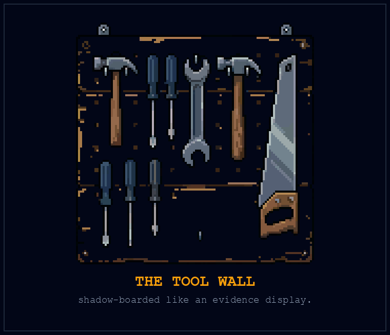
“Engine light?” she said, without turning around. “Mechanic’s two miles up, left at the grange hall. This isn’t that.”
“What is it?” Elijah asked, because the question got out ahead of his manners.
She turned around then and looked at him, one long, level pass, boots to haircut, the look of someone who has hired and fired and buried, and something in the shop’s whole arrangement must have loosened her, because instead of pointing at the road she said, “Co-op. Nineteen households. We make what we can’t afford to buy and fix what the market says to throw away.” She nodded at the plasma table. “Right now: brackets for a neighbor’s solar rack. You need something made?”
And Elijah, God help him, alone with the arithmetic for eleven months and now facing a stranger standing inside something that looked like an answer to it, Elijah went off. Again. The way he had at the Bear Flag.
He told her what was coming, machine-gun style: the models, the curve, the end of labor. And then, because years at Claypot had installed a whole grammar in him he didn’t know he was speaking, he started pitching. He heard himself say the shop could scale. He said platform. He said there ought to be an app: coordination software, a network of co-ops, a marketplace layer; he could build it in a month, this thing could be in fifty towns by spring, they could get ahead of the wave, first-mover, and somewhere in there he ran out of gas, because Marta Okonkwo had crossed her arms and was watching him with the exact expression she’d given the plasma cut: waiting to see if the machine would finish or fault.
“You done?” she said.
He was done.
“Okay. One,” she said, holding up a gloved finger, “nobody here needs an app. Maria-next-door needs her rack to survive a snow load. That’s the bracket. Two: scale.” She said the word like a fish she was returning. “Everything that ever screwed the people I know got big first. The plant I gave fifteen years to scaled. Scaled itself right to a labor market that didn’t include us. You know what doesn’t scale? Nineteen households who all know whose kid is whose. That’s not a limitation, college. That’s the load-bearing wall.”
“I’m not,” he started, and she talked straight through him, not unkindly, the way you talk through a gate that’s still swinging.
“Three. You drove up here to tell me a machine is coming for everybody’s job.” She pulled her glove off, finger by finger. “In 2009 I watched a company do to nine hundred of us what you think your machine is going to do to everybody, and there was no machine, just a spreadsheet and a tax break. So I know something you don’t, which is what it’s like after. And you know something I don’t, which is apparently the schedule.” She jerked her chin toward the fan of sparks. “That could be worth something. Not an app.”
The silence had the plasma table in it, ticking as it cooled, exactly like an engine after a long haul, exactly like a tower in a dark apartment. Elijah stood in it and felt the pitch die and something older stand up in its place.
“I grew up on a farm,” he said. “I can’t weld. But I can fix a pump, and I can read a manual, and I’m not in a hurry.”
Marta looked at him for another second. Then she picked up a push broom leaning by the curtain and held it out.
“Swarf goes in the red bin,” she said. “We’ll see.”
The Foundations
The part we get to decide
Elijah arrives with a forecast. Marta has a workshop, a history, and a bill for the welding gas. They need things from each other, but first he has to stop confusing his prediction with her future.
That confusion is easy to make. Show a machine doing something remarkable and the conversation leaps to what society must become. Yet capability, deployment, ownership, and access are different events. A tool can improve while its price rises. A company can increase output while reducing payroll. A town can contain a productive farm and people who can’t afford its food.
An economy can work that way. The human outcome is what I want to change. There is a choice hiding in the distance between them.
My argument is that we should deliberately shorten that distance. As machines become capable of more necessary work, use the gains to make necessities dependable. Start with food. Make a lost paycheck less capable of turning an ordinary evening into an emergency.
That choice doesn’t require agreement about the exact date of the singularity. If progress is slower than I expect, people still need to eat. If only some jobs disappear, the people who lose them still count. If machines transform tasks while most occupations remain, the gains can still support shorter hours, safer work, and more secure lives.
The ILO’s 2025 analysis of generative AI makes a useful distinction here. It estimates exposure of occupations to changing capabilities, rather than counting jobs already lost, and concludes that transformation is more likely than replacement for most exposed jobs. That’s reason to be careful with a forecast of universal unemployment. It isn’t a reason to make the unlucky worker’s dinner depend on the average outcome. ILO, Generative AI and Jobs: A 2025 Update
What a decision makes possible
I don’t mean that frightened people need a better attitude. The worker reading a layoff notice has encountered a fact, not failed a test of optimism. Nor can enthusiasm supply water to a dry field or a replacement part to a broken pump.
I mean the assumptions we carry into decisions. Do we treat the purpose of a productive gain as cutting the wage bill, or can it also be keeping people fed? Do we assume someone has to justify their existence with a job, even when we celebrate machines for reducing the need for that job? When the two ambitions collide, which one do we change?
Those assumptions take physical form. They become a purchasing contract, a budget, a delivery route, a condition attached to receiving help. They determine whether a town buys useful capacity for its residents or offers a demonstration they can watch but cannot afford to use.
A different mindset earns its keep when a decision changes. A food provider receives reliable funding. A worker has a say before the new system changes their shift. An access rule stops requiring a pay stub. A repair reserve keeps a service alive after the launch photographs are forgotten.
I want optimism that can show you the changed line in the budget.
Security is something people can rely on
A promise made by a generous founder is welcome. A service that continues when the founder is ill is stronger. A right that can be asserted when an administrator says no is stronger still. Different places will arrive at these arrangements through different institutions, but the distinction matters wherever the book travels.
A cooperative can own equipment. A public body can fund food service. An existing producer can be paid to supply it. Residents can participate in decisions about what is provided and how a failure is corrected. None of these words makes a system fair by itself. Together they describe work we know how to begin: assigning resources, responsibilities, and a usable claim on the result.
The goal isn’t to make everyone dependent on one kindly operator. People should be able to question the service without losing it. They should have somewhere to turn when it fails, including an alternative provider where one is available. Ownership and oversight matter because the machine that feeds a neighborhood could also give its controller enormous power over that neighborhood.
Calling the arrangement public doesn’t settle that problem. Calling it local doesn’t settle it either. We have to build ways for people to challenge decisions and keep obtaining what they need while a dispute is heard.
A workshop is a beginning
Elijah can drive north because he has savings, a vehicle, and skills the workshop can use. Someone caring for a parent in a fourth-floor apartment may have none of those options. A serious proposal has to reach that apartment too.
Marta’s nineteen households can teach us how people cooperate, repair things, and notice each other’s needs. They can’t stand in for every city, every climate, every public service, or every person who doesn’t know somebody at the table. Their work becomes more useful when it connects with growers, kitchens, workers’ organizations, and institutions beyond the shed.
You can begin by finding one such connection. Ask an existing food provider where a useful meal gets held up: money, transport, equipment, staffing, an inaccessible application, a missing place to cook. The answer identifies a task for the tools and a task for the people organizing them.
That is the decision in front of us. We can put more intelligence into defending the conditions that make survival precarious, or into changing those conditions. The future doesn’t have to be settled for the direction to matter.
Precedent P-08: The Grain Trap (Fertile Crescent, c. 9500 BC)
The transition to agriculture changed food production, settlement, and social organization across different places and long periods. Some early farming populations show evidence of health burdens associated with those changes.
That makes agriculture a useful complication for a book about technology. A practice can spread while imposing costs on some of the people adopting it. The history is not a single vote by humanity, and it is not a uniform story in which every forager became a farmer or every farmer became better off.
Consider a later settlement in that long transition: Çatalhöyük, on the Anatolian plateau. Its houses stood back to back, without streets between them, and people entered through the roofs. Wall paintings and reliefs survived inside. This was a place people built and inhabited, not merely a point on a graph of agricultural expansion. The roofs and rooms give the change a human scale. UNESCO, Neolithic Site of Çatalhöyük
The inhabitants left another record in their bodies. A 2019 study led by Clark Spencer Larsen examined skeletal evidence across roughly twelve centuries of occupation. Teeth carried evidence of decay associated with a cereal-rich diet. Changes in leg bones were consistent with increasing travel and physical demands over time. The settlement could endure while obtaining what sustained it became harder work. Those findings describe different parts of the achievement: maintaining a community and living well inside it. Larsen and colleagues, Bioarchaeology of Neolithic Çatalhöyük
The same study refuses a tidy story of uninterrupted decline. Some bone changes associated with infection became less prevalent through time, and the researchers found resources sufficient to sustain relatively normal growth. The evidence points in more than one direction. Bones preserve evidence of particular stresses; they don’t give us a complete account of what any one inhabitant thought their life was worth. Larsen and colleagues, growth and infection findings, page 6 of the open manuscript
For the machinery arriving now, this changes what I want to count. Adoption tells us that a practice found a way to spread. Output tells us what it produced. Neither number, on its own, tells us whether the person doing the work had enough to eat, enough rest, or any power to change the terms. The lesson isn’t to abandon the field. It’s to stop treating a growing harvest as the whole account of the people living beside it.
The mechanism. Agricultural transitions involved different conditions and outcomes across places. Greater production or wider adoption does not establish better lives for every participant.
The rule. Count welfare and distribution separately from adoption.
The practice.
- Describe one claimed gain from a tool.
- Ask who might bear a cost even if that gain is real.
- Choose an outcome measure that includes those people.
Work, Loss, and the Cooperative Response
In this chapter:
- Job loss is a real loss even when automation improves a task.
- A person can disagree about a machine and still support food access.
- The cook can lose the job and still eat.
The co-op ate together on the first Friday of every month, long tables of mismatched plywood in the packing shed with the plasma table rolled into the corner and someone’s dog working the crowd, and it was at Elijah’s second of these dinners, five weeks into his apprenticeship with the broom, that he learned where the battle lines actually ran.
It started, the way most real fights do, over something small. A member named Curtis (grey ponytail, good with engines, owner of the valley’s most thoroughly provisioned basement) was reading aloud from his phone about the robotaxi fires down in the city. Crowds putting traffic cones on the hoods to brick them. Windows going in. A depot fence cut open. Curtis read it with a kind of grim satisfaction and delivered his verdict to the table at large: “Can’t say they didn’t have it coming. But you watch: when it really lets go, it’s going to be the people who didn’t prepare who tear everything down. That’s who you plan for. That’s who you fence out.”
Elijah, five weeks in and still trying to be useful in conversations the way he was learning to be useful with a grinder, offered what he genuinely believed was the reasonable middle: that the displacement was real but manageable, that what those people needed was support through the transition: retraining, new skills. “Reskilling programs,” he said, and heard, too late, the shape of the word in his mouth. It was a Claypot word. It had been on a slide.
The table didn’t go quiet the way tables do in movies. It went quiet the way a shop goes quiet when someone hears a bearing start to sing: a couple of forks paused, and Denny Osei, sitting across and one down, wiped his mouth and folded his hands and looked at Elijah with an expression that was not unkind and was worse than unkind. It was practiced.
“Reskilling,” Denny said. “Okay. Let me tell you about reskilling, because I am, and I want you to appreciate this, I am certified in it.” He held up two fingers. “Twice. First time, 2019. I’d been eleven years in the warehouse, and the arms came in, and the county had a program. Six months, nights, logistics software. I was good at it. I’m not being modest, I was good; I could route forty trucks in my head before the coffee was done. Got hired doing dispatch and routing. Wore a lanyard. My daughter told her class her dad worked in computers.” He turned his water glass a quarter turn. “2023, the routing went autonomous. The software I retrained into got a software of its own. And the man from the county (different man, same folder) told me about a program. Six months. Nights.” He looked around the table, then back. “You know what I asked him? I asked him: how many times do I have to climb this ladder before you stop moving it. He didn’t have a number. Nobody has a number. Because nobody can promise the next rung will hold. And every man who tells you ‘just climb faster’ sounds like he’s standing on a floor, not a ladder.”
“Denny,” Elijah started.
“I’m not mad at you,” Denny said, and meant it, which was the part that stuck. “You said it because everyone in the rooms you come from says it. It’s what the comfortable prescribe for the falling. It costs them nothing and it sounds like a plan. But you’re at this table now, so here’s the question I need answered. If the next course takes six months, where do my daughter and I stand for those six months? And if the next job goes too, what then? I don’t need you to promise me the machine stops. I need an answer that doesn’t end with me starting over hungry.”
The dog moved under the table. Somebody laughed, once, in the way that lets everyone breathe.
But Curtis wasn’t done. Curtis had heard, inside Denny’s story, support for the fence. “Which is my point,” he said. “When it all comes apart, the mob that torched that depot shows up here. You want them at this table too?”
And that was when Marta, who had been eating through the whole exchange like a woman refueling a machine, set down her fork.
“Curtis. The Luddites weren’t strangers to the machines. They worked with them. Their quarrel had wages in it, and the terms they were expected to work under. That part tends to get left out when somebody uses their name to mean stupid.”
“They broke things,” Curtis said.
“They did. And a fire in a depot can hurt somebody who had nothing to do with a layoff. I’m not defending that.” She moved the bowl away from the edge, where the dog had reached an ambitious nose. “I’m saying we don’t know every person behind a headline. We do know people right here who need somewhere to stand. If your plan starts with keeping everyone frightened out, who’s left to build it with?”
Denny held out his hand for the bowl. Marta passed it.
The beans got passed. The conversation moved, the way conversations at long tables do, into three smaller ones. Elijah didn’t say much for the rest of the dinner. But late that night, in the notebook, under a year of arithmetic (stages and watts and orders of magnitude), he started a different kind of page. Names. Denny: two ladders, both moved. Ask about the routing software, which one? Curtis: fence-minded but shows up for every work day; the fence is fear. Marta: asked who the plan leaves outside. Ask her again. He looked at the page a long time, because it didn’t look like anything he’d ever produced at Claypot, and it was the first page he’d written that didn’t treat the people as an effect of the numbers.
The following Tuesday, Curtis asked whether he wanted to ride along. The town kitchen had three deliveries the co-op had agreed to cover while its usual driver recovered from surgery. There was a cool box between them, and a folded route sheet Curtis kept taking out of his pocket at red lights even though Elijah offered to hold it.
The last address was a converted garage behind a blue house. Rosa opened the door with her left hand. Her right wrist was in a brace. She’d packed fruit at a warehouse until the injury, she told them, and the return-to-work date on the latest letter was a blank.
Curtis lifted the bag. “Kitchen said you wanted ingredients.”
“I said I used to cook.” She looked at the potatoes, then at her wrist. “I asked if they had anything I could heat.”
The three of them stood there with the bag between them. From somewhere inside, a washing machine reached the uneven part of its spin cycle.
“That’s ours,” Curtis said at last. “The mistake. We’ll call.”
He set the bag back in the cool box and phoned the coordinator. The kitchen could exchange it for prepared portions that afternoon. Rosa asked for the less spicy option, if they had it. They did. Curtis wrote that down on the route sheet where she could see him write it.
While he was on the phone, she asked Elijah what the shed charged for membership.
“For the food? Nothing. It’s the kitchen’s delivery.”
“He said co-op. I can’t do work days. Not now.”
Curtis lowered the phone. “You don’t owe us a work day.”
She looked at him. “Marta says you’re doing something with robots out there. I don’t much like the sound of it. I’ve had enough changing.”
Elijah felt an explanation gathering in his throat. Curtis got there first.
“Doesn’t change your dinner,” he said.
They came back before the kitchen closed. Rosa checked the containers, found the one she’d asked for, and made room in her refrigerator. Curtis waited by the gate with his hands in his coat pockets. He didn’t ask her to join anything.
On the drive home, Elijah found the cost column on the route sheet: kitchen program, driver time, mileage. He asked how long the arrangement lasted.
“Through next month. Then they need funding again.”
Curtis turned onto the county road. There was one box left to complete beside Rosa’s address. At the next pullout he stopped, put the sheet against the steering wheel, and marked delivered.
The Foundations
Where does the person stand?
Denny had asked for somewhere to stand during six months of training. Rosa had asked for food she could heat with one working hand. Neither request required an answer about the ultimate limits of machine intelligence. Both required people to decide what they would provide.
That is the employment question at the scale of a life. Work can hold friendship, identity, pride, and a rhythm for the day. It also supplies much of the money through which people obtain necessities. A transition can disturb all of those things at once. Calling it a productivity gain describes only one side of the event.
I want the social response to be as real as the technical change. A new course can be part of it. So can paid time to learn, a continuing income, and services that remain available while a job disappears. The person should not have to spend the transition proving that they deserve to survive it.
The people already living with it
Precarious work didn’t begin when a chatbot learned to write a résumé. A food-first argument has to include the farmworker picking the crop, the packer handling it, and the driver completing the route. It also has to include the garment worker sewing clothes for people whose anxiety about technological change has only recently become personal.
Their interests are not interchangeable. A worker may want assistance with an exhausting task and fear losing the wages attached to it. They may want to leave an unsafe workplace and still need this week’s pay. That isn’t confusion. It’s the problem we’re proposing to change.
There is a record to investigate beyond our favorite future scenario. Better Work Jordan’s 2024 report, covering 2023, documents serious labor violations at a garment factory, including delayed wages and excessive overtime. The report expressly says that case isn’t typical of working conditions across the sector. Its value here is specific: workers can be producing goods for the world while lacking reliable protection in their own working lives. ILO and IFC, Better Work Jordan Annual Report 2024, summary findings
Don’t turn those workers into a distant misery illustration and then return to a plan designed only for people with technical salaries. Ask what a gain would mean for them: less exposure to harm, more say over the pace, reliable pay during a transition, or an alternative to a job they can’t safely leave. The people doing the work belong in the decisions about changing it.
The ambition is to raise the floor for everyone. That includes people whose work has been cheap and physically punishing for a long time, as well as people who have just discovered that their own skill may become cheaper.
A choice with somewhere to stand
The fired cook may want another kitchen job, a different occupation, or time to care for a parent. A food baseline does not choose that life for him. It makes one part of the choice less desperate. Chapter 11 takes up the implications for restaurants and paid work in detail.
Rent, healthcare, debt, and responsibilities to others can still restrict his options. Food alone doesn’t create complete freedom. It removes one threat, which is why food is the beginning of this argument rather than the limit of its ambition.
Who does the remaining work?
Someone still tends the crop, maintains the equipment, prepares the meal, or arrives when a delivery fails. The answer to that work is decent terms, useful tools, training where needed, and enough people to share the burden. A plan for liberation that depends on an exhausted kitchen crew has misplaced its own purpose.
Some contribution will be paid. Some may be voluntary. Some people will receive more help than they can return. Over a lifetime, the same person may occupy all three positions. The food baseline shouldn’t become a points account that closes when a person has a bad month.
Keep two commitments visible at once: recipients can eat without proving employability, and the people providing the service have a workable life. Automation can help bring those commitments together when it reduces necessary effort. Where human work remains, its cost and conditions belong in the arrangement.
Rosa’s meal is small enough to make this clear. She didn’t owe Curtis agreement, labor, or gratitude as a price of delivery. Curtis’s driving still took time. The kitchen still needed funding. One person’s unconditional access and another person’s working conditions have to be planned together.
A voice before the decision
A worker should not first encounter a new system as an instruction to train their replacement. Ask about the proposed change while choices can still change. What happens to hours, pay, safety, discretion, and the skills worth learning? Who receives the saved time? What support is already funded if a job disappears?
Workers’ organizations, affected residents, employers, food providers, and public institutions each hold parts of the answer. A meeting isn’t sufficient merely because everyone was invited. The people carrying a cost need a way to change the terms, and a way to challenge a broken commitment afterward.
People may welcome food security and object to surveillance or a dangerous deployment. Keep those questions open. My argument doesn’t require every complaint about AI to be a complaint about economics. It requires us to hear the economic complaint when a frightened person is making one.
For the next conversation, ask the question Denny put on the table: where does the person stand while the transition happens? Keep asking until the answer names something they can actually use.
Precedent P-09: The Frame-Breakers (England, 1811 to 1816)
The Luddites were workers responding to changes in their trades, including wages, quality, and the use of machinery. Their actions cannot be adequately described as people who simply failed to understand a new invention.
Machine-breaking met severe repression. The history carries losses that a story about eventual technological adoption can too easily erase. Whether a particular tactic worked is a question about its aims and consequences, not a reason to dismiss every grievance held by the people who used it.
In Nottingham, the disputed terms included payment by the piece and the rent charged for knitting frames. December 1811 negotiations failed to restore earlier terms. Historian Kevin Binfield places those disputes beside high food prices and depressed trade: the machine was the thing workers could reach, while the pressures on a household came from several directions. Binfield, Writings of the Luddites, historical introduction
The surviving documents make that distinction uncomfortable, which is why they are worth reading. A proclamation dated 23 December 1811, preserved in Britain’s National Archives, threatens death to informers and constables investigating the frame-breakers. Its author invokes the invented authority of King Ludd. This isn’t a harmless misunderstanding of how a knitting frame works. It is an attempt to exercise power through fear. The archive also places the violence alongside petitions, public protests, and appeals to employers and government. Machine-breaking was part of the struggle, not its entire vocabulary. National Archives, proclamation of Ned Ludd, HO 42/118
Hold the two facts together: workers had material grievances, and some methods threatened other people. Recognizing one doesn’t cancel the other. A humane technological transition needs ways to contest wages and conditions before an argument about machinery becomes a contest over who can frighten whom. Denny’s question belongs in the room while there is still room to answer it.
The mechanism. Worker resistance concerns wages, skill, power, and working conditions as well as machinery. Its outcomes cannot be reduced to whether a technology disappeared.
The rule. Take the livelihood claim seriously before judging the tactic.
The practice.
- Ask a worker which terms a proposed tool would change.
- Identify who controls the introduction and the time saved.
- Record a concern the project must address before expansion.
Precedent P-10: The Robot in the Orchestra Pit (United States, 1929 to 1948)
Recorded sound changed work for musicians, including the employment associated with silent-film accompaniment. The American Federation of Musicians campaigned against the displacement and later used recording bans and bargaining to seek different terms.
On 1 August 1942, the union stopped its members making new recordings for commercial sale. The record companies had prepared by building up inventories; they also reached into their older catalogs. Their stock of recorded work could keep earning while the people needed to make more withheld their labor. The bargaining power lay at that junction between a reusable product and the living work required to replenish it. Capitol and Decca settled in 1943. RCA Victor and Columbia held out until 1944. There was no single morning when an entire industry agreed that the workers had a point. University of Maryland Special Collections, The Recording Ban of 1942
The Music Performance Trust Fund grew out of that history. Its institutional account describes funding free public performances through arrangements involving the recording industry. This is an example of organized benefit sharing, not evidence that every displaced musician recovered their income or that a fraction of every play automatically reaches the fund. Music Performance Trust Fund, About
The independent fund established in 1948 put an important distinction into practice: a performance could be free to its audience while providing income to its musicians. Its account describes royalties paid by signatory recording companies, supplemented by co-sponsors, and administration by a trustee independent of both the union and the industry. The money needed a route, an agreement, and somebody responsible for moving it. Music Performance Trust Fund, institutional history and funding
That is a useful piece of history for the kitchen door. A meal can be free to Rosa without asking the cook to work for nothing. Recorded music and live performance could coexist under changed terms; useful automation and supported human work can be discussed on the same basis. The analogy doesn’t fund a food service. It shows why the question of who pays deserves an institutional answer instead of a shrug.
The useful question is what the bargaining changed. Calling it a failure simply because recorded music survived would miss the institutional achievement. Calling it a complete cure would miss the people whose work disappeared.
The mechanism. Collective bargaining can alter how benefits are shared even when adoption continues. A funding mechanism is a different outcome from preserving every old job.
The rule. Study changes in the terms, not only whether the machine was stopped.
The practice.
- Name one benefit created by a proposed automation.
- Ask how displaced workers participate in decisions about it.
- Distinguish a proposed support mechanism from a funded commitment.
The Psychology of the Collapse
In this chapter:
- Fear becomes easier to face when people have somewhere secure to stand.
- Shared assumptions become budgets, rules, and decisions about who gets fed.
- Attention can help you act; it cannot substitute for material support.
The spiral found Elijah in November, a few weeks after he’d walked into the shop, and it did not announce itself as a spiral. It announced itself as diligence.
Claypot shipped Companion 2.0 on a Thursday. He read the launch post standing in the gravel lot with the winter’s first real cold coming through his jacket, and the feature list read like the second half of his own notebook: autonomous project completion, end-to-end asset pipelines, no prompt required. The demo video showed the machine doing in forty seconds what three of his former teammates did for a living. He knew their names. He knew their kids’ names.
That was the pebble. The landslide was everything he did next, and the honest record of it matters more than his dignity, so: he went home to the room he rented from the co-op and he opened the laptop, just to assess. He read the launch thread. He read the thread about the thread. He read an economist explaining why it was fine, a different economist explaining why it was over, a man with a flag avatar explaining whose fault it was. Somewhere after midnight he found the layoff tracker (someone had built a live dashboard, black background, red numbers, auto-refreshing), and the part of Elijah that had once found comfort in numbers plugged straight into it like a jack into a socket. He did his own savings math four times, arriving at four different terrifying answers. He looked up what his old apartment rented for now. He checked whether the co-op’s county was in the fire zone maps. At 3:40 a.m. he was reading about grid interconnection queues with his heart going like a bird against a window, having consumed, by any honest accounting, eleven hours of information and produced: nothing. Not one weld. Not one row of the notebook. Nothing but cortisol and tabs.
He did it again Friday. Saturday he skipped the work day, first time, because he needed to stay on top of it, and the phrase did not strike him as insane until much later.
It was Marta who came and got him, Sunday morning, because Priya had noticed the lights and Denny had noticed the truck not moving and in a nineteen-household co-op the mesh network is mostly people. She knocked once, let herself in, looked at him (grey, wired, laptop light on his face like something feeding), and looked at the dashboard with its red numbers still refreshing.
She didn’t say anything about the dishes. She sat down across from him with the manner of a woman with one meeting left on her calendar and said: “I want to tell you about Gary.”
Elijah blinked at her.
“Plant closed in ’09,” she said. “You know that part. Nine hundred of us. What I never told you is what the next year did, because the layoff is one day, they cater it, there’s a folder. The after goes on, and nobody caters that.” She leaned back. “There were two men on my line. Gary and Sal. Same job, same severance. On the company form they looked interchangeable. Gary went home and read everything: the news, the forums, the unemployment numbers, which plant was next. He was going to stay informed. He was going to stay on top of it.” She let the phrase sit there between them, wearing his own voice. “You’d see him at the store and he’d have the whole national picture. Every betrayal, chapter and verse. The picture was so big there was no place in it small enough for him to stand.”
She turned her coffee mug (his coffee mug, she’d poured herself one) a quarter turn, the same gesture as Denny’s water glass, and Elijah wondered distantly if everyone who’d been through the fire came out with the same tells.
“Sal cried for a week. Then his brother-in-law started coming by at eight. They’d have coffee and fix one thing before noon. A gutter. A carburetor. Something with an end to it. Sal started taking classes in the afternoons. I used to tell that story as if Sal had found the right attitude and Gary hadn’t.”
She watched Elijah’s face, making sure he heard the next part.
“Gary was taking his wife to appointments. His truck needed work. Sal had a ride, a brother-in-law, and a place to leave his kids. Same severance. Different room to move. Took me too long to ask.”
“What happened to Gary?”
“We started showing up. Fixed the truck. Sat with him. Some days he wanted to talk about the plant, and we let him. Some days he wanted to talk about anything else. He didn’t owe us a gutter before lunch.”
She put a hand beside the laptop. “Can we shut this for a minute?” He nodded, and she closed it.
“You’re trying to watch every bad thing closely enough that it can’t surprise you,” she said. “I know the trick. It doesn’t leave much day.” She tapped the closed lid. “The greenhouse controller could use an hour of your attention. So could your mother. So could a meal you sit down for. We can start there. And if Monday is still bad, you tell me. You don’t disappear because you missed a work day.”
At the door she turned back. “Soup’s on at noon. That’s not a reward, college. It’s lunch.”
He stood in the doorway after she left, in the cold, the way he’d stood with his coffee the morning after LADDER.xlsx. Then he went in and silenced the news alerts. He left his mother’s number able to ring through. In the notebook he wrote Sal’s rule, one real thing before noon, and underneath it, because Marta had made him hear it: somebody came by at eight.
Monday, seven a.m., he was at the bench. The panic came back in waves for weeks. Sometimes he worked through it. Sometimes he found someone and said it was back. At noon he put the tools down and went to eat.
The Foundations
What I mean by mindset
When I say our mindset is part of the problem, I mean something bigger than the private attitude of a frightened person. I mean the assumptions we keep turning into rules. That a person must continually sell their labor to deserve dinner. That making a useful thing require less work is a disaster unless somebody invents more work to replace it. That security for everyone is an indulgence, while insecurity is a practical necessity.
Those assumptions become budgets, contracts, eligibility tests, and the questions a room permits itself to ask. They shape which machines get built and who receives the benefit. Changing them means changing decisions with consequences outside our heads.
It doesn’t mean telling Gary to think positively while his truck sits broken. His fear has information in it. If losing a paycheck puts his household in danger, the danger is real. The useful response is to reduce it.
Imagine the same announcement in a different society. A machine can now do a job in half the time. People still argue about pay, ownership, pride, and what comes next. But everyone’s food is secure. The meeting is still difficult. It no longer contains the threat that someone will go hungry if the negotiation goes badly. That is a different starting point for a human mind.
Security gives hope somewhere to stand.
The person at the kitchen door
Our food baseline has to include someone who isn’t productive today, someone who can’t contribute physically, and someone who disagrees with the organizer. Otherwise we have replaced the employment test with a loyalty test and congratulated ourselves for changing the sign.
A cooperative can ask for help. It can pay people for necessary work, organize shifts, train new operators, and deal with harmful conduct. It can restrict access to a dangerous machine. Those are separate decisions from whether a person gets to eat.
The distinction becomes real on an inconvenient day. Someone misses a shift. Someone criticizes the committee. Someone arrives after the people who did all the work have sat down. What happens to their meal? A promise of universal access needs an answer that survives annoyance, fatigue, and disagreement.
Small groups are capable of generosity and capable of exclusion. Knowing everyone’s name helps you notice who is missing; it can also make it easy to decide that an outsider doesn’t count. We need arrangements people can question and a way to seek help beyond the goodwill of one gatekeeper. Nineteen households are a beginning. Humanity is the ambition.
Attention you can use
There is still a personal task here. If every spare minute goes into watching the disaster, it can become harder to notice the things you can do. A modest change in attention may help you take one of those steps. It won’t pay a bill or repair an institution by itself.
Try silencing one distracting category of notification during a task, while preserving the contacts and alarms you need. See whether it helps. Read enough to understand a decision you face, then make room to act on it. Your action might be a repair, a call to a friend, a meeting, a request for assistance, or rest. You don’t have to produce an object to justify the hour.
Useful information should eventually meet a question. What do I need to know? Who knows something I don’t? What can we change? An endless feed supplies more material without necessarily supplying any of those answers.
Marta helped Elijah interrupt that circuit. Just as importantly, she came to his door. The book would be missing half the story if it prescribed his notebook and forgot her visit.
Put a different assumption to work
At the next meeting about a food project, write the proposed promise in one sentence: a person can receive adequate food without money or a work requirement. Then ask where the actual arrangement falls short. Who can’t reach the pickup? Who cannot cook what is offered? Who fears losing access if they complain?
Include people receiving the service without requiring them to disclose private hardship in public. Give someone responsibility for reporting what changed because they spoke. A meeting that collects testimony and changes nothing has made listening into another ceremony.
Choose one barrier the group can remove, name who will do it, and set a date to check the result. This is how a change of mind becomes a change in somebody’s afternoon.
Precedent P-11: Torches of Freedom (New York, 1929)
In 1929 Edward Bernays organized a publicity event connecting women’s smoking with emancipation. Women carrying cigarettes appeared at New York’s Easter parade under the phrase “torches of freedom.” The event served a tobacco company’s commercial interest while borrowing the language of a much larger struggle.
Start with what survived. A pair of photographs in the Library of Congress identifies Nancy Hale Hardin beside her husband and Edith Lee walking with a dog on Fifth Avenue, Easter Sunday, 31 March 1929. Both women hold cigarettes. Names, a date, a street, a product in a hand. The photograph records people doing something in public. It cannot tell us how many other women changed their behavior because they saw it. Library of Congress, Easter Sunday photographs
Bernays had already published his theory in Propaganda the previous year. In one explicitly hypothetical example, he imagined selling pianos by first making a music room desirable: bring in respected decorators and performers, arrange publicity, encourage architects to include the room in their plans. The prospective buyer would encounter the purchase as the completion of a life they wanted. He was describing how a seller might shape the setting in which a choice felt natural. This was a publicist explaining his method, not an experiment proving that every audience would comply. Bernays, Propaganda, chapter IV, pages 54–56
That is the useful warning. A real aspiration can be attached to a product, and a sales campaign can borrow the emotional force of a cause. The event’s later reputation should not be mistaken for a measurement of how many people it persuaded. Historical research has questioned the familiar account of its press reception and significance. What we can examine is the appeal: freedom presented in the form of a purchase. When a technology company offers liberation, ask what the product actually lets a person do and on whose terms. Murphree, Torches of Freedom research
Historian Vanessa Murphree examined more than 250 articles for her study, including clippings in Bernays’s own scrapbooks. Some editors recognized the publicity maneuver. Repeated wire stories helped fill the scrapbooks; a thick book of clippings was not a count of independent conversions. The legend of an all-powerful manipulator asks us to surrender something the evidence doesn’t require: our capacity to question the story. Murphree, research methods and contemporary press responses
I owe you the same test. The words food first should earn their force from a meal somebody can obtain. If I can move you with the phrase but cannot help explain the provision, I have given you an appealing picture of a future. The work is making the picture answer to the person at the door.
The mechanism. Publicity can connect a commercial interest with a sincerely held value. That does not establish total control over an audience or every participant’s private motive.
The rule. Ask who benefits from a message and check what it asks you to believe.
The practice.
- Record one persuasive technology claim.
- Find its sponsor and the evidence it supplies.
- Compare the promised result with something independently observable.
Deglobalization and the Neighborhood Factory
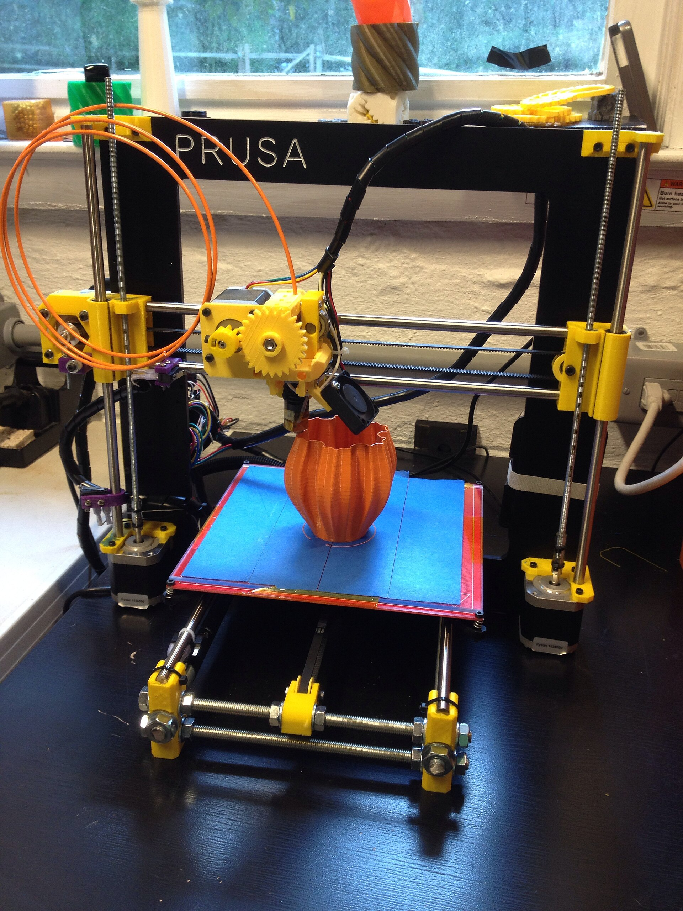
In this chapter:
- Follow the work through growing, harvesting, handling, and delivery.
- A machine earns its place by improving the complete service.
- A local workshop can serve a regional system without pretending to replace it.
The co-op’s first real manufacturing run, the thing Elijah would later describe to strangers as the neighborhood factory booting up, though at the time it was just a January argument in a cold shed, was forty greenhouse controllers for the CSA network two valleys over.
The order came through a friend of a friend of Priya’s: forty small boxes that could read soil moisture and air temperature and open a vent or a valve without asking a server in Virginia for permission. Real money, real deadline, real customers with real seedlings on the line. Elijah volunteered for the design with the eagerness of a man who had spent the autumn sweeping floors and learning the shop and could feel, at last, the shape of something he was actually trained to do.
He designed a beautiful thing. He wants that on the record, with the caveat that so does everyone in this story every time he says it. Custom four-layer PCB, an elegant little system-on-module, sensors from a Swiss outfit whose datasheets read like poetry, the whole thing potted in resin, sleek as a river stone, no user-serviceable parts inside. He presented it to the shop on a Tuesday with renders. Renders.
Marta looked at the renders for a while.
“Walk me through the bill of materials,” she said, so he did, and she wrote three numbers on the whiteboard while he talked: 11, 1, 0.
“Eleven weeks,” she said, tapping the first number, “is the lead time on that Swiss sensor, I just looked it up, and that’s the quoted lead time, which means it’s a prayer. One,” the second number, “is how many suppliers make that module, which means when we need a replacement, we’re waiting on one company to decide whether to sell it. We need another way to keep these running. And zero,” she tapped the last, “is how many people in this valley can fix a potted resin board when it fails during frost week. Including you, college. Especially you, because you’ll be the one who’s busy.” She capped the marker. “It’s a gorgeous design. It’s a Claypot design. Everything single-sourced, nothing repairable, the whole thing optimized for the demo instead of the Tuesday three years from now when it breaks during calving. Design it again, and this time the spec is: parts from the drawer, parts from the junction box aisle, and nothing your neighbor can’t fix with the tools he already owns.”
“That’ll be uglier,” Elijah said.
“It’ll be ours,” Marta said. “Ugly is a maintenance feature. Ugly means the next guy can see how it works.”
So he designed it again, and the second version was simpler to explain and repair: a Raspberry Pi the regional supplier had in stock, screw terminals instead of poetry, replaceable probes, a case Denny’s kid printed forty of in PETG the color of school buses, and documented parts the growers could order from more than one source. The firmware did less and survived more. Every unit had a laminated one-page repair card zip-tied inside the lid, because Marta’s rule was that documentation you have to go find is documentation that doesn’t exist.
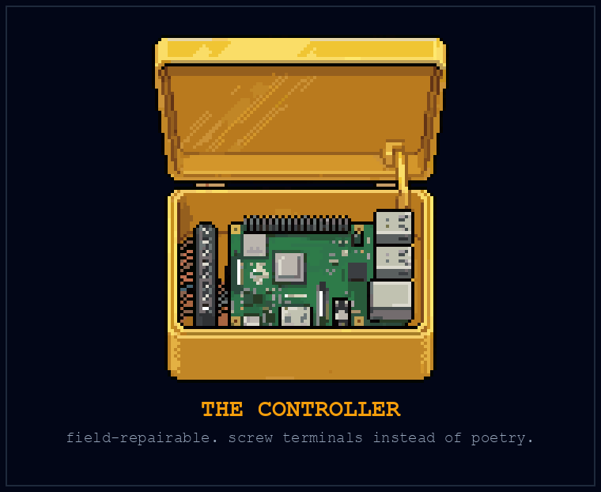
The build itself took the shed three weekends, and it was during the second one, everyone deburring enclosures and crimping ferrules in an assembly line that Sal himself would have recognized from 1985, that the door opened and let in a rectangle of cold light and a lean man in a good coat who was too pleased with himself for a Saturday.
“Reuben Vance,” Marta said, not looking up from the crimper. “Elijah. Elijah, Reuben. Reuben handles the part of the machine that runs on paper.”
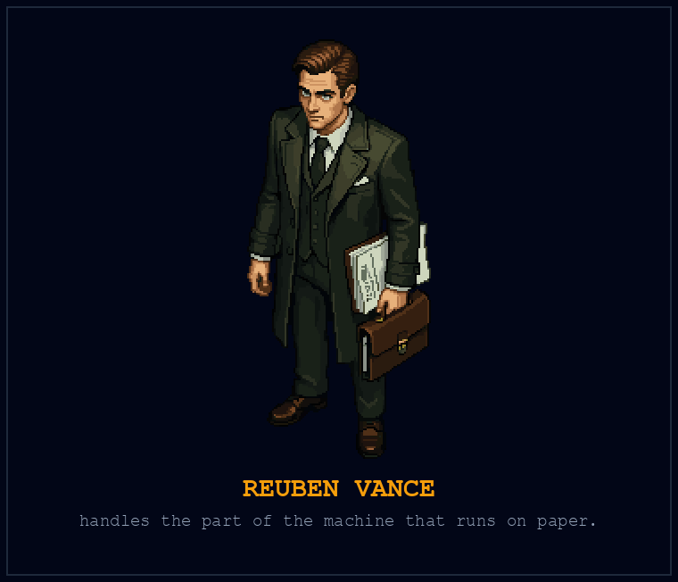
“I heard,” Reuben said, pulling folding chairs toward the woodstove like a man dealing cards, “that this operation is about to sell manufactured electrical goods across county lines.” He said it the way other men say rob a train. He produced a folder. “So I made a list. Registration, taxes, the use of this building, the promises on the invoice. Then I found people whose job it is to answer the parts I can’t.”
He laid three sheets beside the crimper. The seller registration had been filed. A tax adviser had marked the purchases that needed separate treatment. The county had asked for more information about the shed’s mixed use. That one had a yellow tab.
“I thought agricultural equipment meant we were covered,” Elijah said.
“You thought a noun was a permit. Happens all the time.” Reuben tapped the tab. “This stays open until somebody with authority answers the actual question. And the invoice goes past counsel before it goes to a customer. Describing a thing as a farm tool doesn’t make our promises disappear.”
Elijah looked at the folder, then at Marta. “Did we ask him to do this?”
“Nobody asks Reuben,” Priya said, from the crimping line. “Reuben notices.”
The CSA hired an electrical technician to review the installation plan, and two growers tried the first units with their ordinary controls still available. Their notes came back covered in pencil: a label nobody could read in dim light, an alarm nobody heard over the fan, a sensor connection that needed better protection. Elijah revised the boxes before the rest went out.
By the time the forty units shipped in February, the yellow tab had an answer attached and the folder had grown thick enough to prop open a door. Denny delivered them in apple boxes with the instructions and the agreed support number. Two growers needed replacement probes in the first month. With the power isolated and help from the support call, they could change the documented part without discarding the controller. Marta put the repair emails up on the corkboard like other shops hang their first dollar.
And somewhere in the middle of all that, without ceremony, somebody finally fixed Elijah’s check-engine light. Curtis, it turned out, diagnosed it in nine minutes off a fourteen-dollar OBD dongle, a cracked vacuum line, two dollars of hose. The light had been on since the drive north. The dealership had quoted him twelve hundred dollars and a week; Curtis did the repair while the coffee brewed. He left the remaining length on the dashboard, coiled like a small black snake.
Elijah put the repair card for controller number forty in the folder. Curtis’s hose went in the glove box.

The Foundations
The controller isn’t dinner
The neighborhood factory earns its name when somebody can keep doing useful work because it exists. A repairable controller can help a grower. A workshop can shorten a repair. A local crew can know which part fails during the season when nobody has a spare afternoon.
But food first means following the benefit past the machine. Growing, harvesting, handling, storage, cooking where needed, and delivery all stand between a controlled valve and a person’s meal. Somebody has to organize that chain, and somebody has to be able to use what arrives.
Rosa could not turn a bag of potatoes into dinner with one working hand. The crop was fine. The offer was wrong. That distinction belongs in any serious account of abundance: how much exists and what a person can obtain are different questions.
We can bring local skill into a wider system. A dense city doesn’t need to grow every calorie inside its boundary. A rural workshop doesn’t need to manufacture every part it uses. Farms, towns, kitchens, transport providers, and public institutions can share responsibility across a region. The useful question is which connections make provision stronger and which leave a person dependent on one failing link.
The chapter’s title names a pressure toward bringing some work closer. It isn’t a command to sever trade. Food-first cooperation has room for a neighbor’s repair bench and a shipment from a different climate.
What a garden robot demonstrates
FarmBot’s manufacturer documentation describes tools for seeding, watering, and weeding. That is a concrete set of tasks worth examining. It is not evidence of a machine harvesting every crop, preparing a balanced diet, and delivering it to everybody for free. Keep the capability claim at the scale of the documented work. FarmBot tool documentation
The FAO’s 2022 report on agricultural automation examines opportunities alongside barriers to adoption, particularly for smaller producers. That supports investigating useful automation and who can obtain it. It does not establish that a particular installation provides universal food access. FAO, The State of Food and Agriculture 2022
We can take both points seriously and still be ambitious. The question is which piece of the food chain a tool improves, at what total cost, and for whose benefit.
A worked example: one delivery, all the way through
Here’s an illustrative project, not a reported trial. An established garden has permission to grow food on a suitable site. A local food group already has handling and distribution arrangements. They agree to try a small additional weekly delivery to five households that want it. Nobody has to own a robot or pay for the produce to receive a share.
The garden tests whether an existing irrigation controller can reduce routine checking without compromising the crop. A grower selects the task and settings. A volunteer records time spent, water used where measured, failures, and manual interventions. The controller opens a valve; it doesn’t decide that a plant is safe to eat.
At harvest, people pick, sort, and weigh what is usable. The food group handles packing and distribution through its established process. Recipients confirm whether the food arrived and was useful to them. The record distinguishes food grown, food usable, food delivered, and food people could actually eat.
Suppose, for the arithmetic only, there are 10 kilograms of usable vegetables and the agreed division is two kilograms per household. Five deliveries fit that harvest. If two kilograms become unusable before distribution, the same promise no longer fits. Record the shortfall and arrange a replacement through the partner before calling the week a success. Don’t silently make the boxes lighter and leave the dashboard green.
Those vegetables supplement meals. They do not establish five complete diets. A dependable baseline would also need enough suitable food across seasons, access for different dietary needs, and provision for interruptions. The small trial tests one contribution to that larger goal.
The example’s funding assumption is equally explicit: a partner budget covers the trial’s supplies and transport; the equipment already exists; some labor is volunteered. Record the donated time and equipment instead of calling them costless. A permanent service needs dependable provision beyond a lucky month of volunteer availability.
The record that keeps the promise honest
For that five-household example, the task record could look like this. Every quantity below belongs to the illustration, not to a measured trial.
| Item | Example entry |
|---|---|
| Promise | Five households each receive two kilograms of suitable vegetables on Friday, with no charge to recipients. |
| Machine’s task | Open an irrigation valve on grower-approved settings. |
| Human work | Inspect the crop and equipment; harvest, sort, pack, transport, and confirm receipt. |
| Available after loss | Eight kilograms from the garden. |
| Remaining commitment | Two kilograms, obtained through the food partner before delivery. |
| Funding | Partner covers supplies and transport; donated time and existing equipment recorded separately. |
| Outcome to check | All five deliveries arrive; recipients can use them; the partner’s replacement and extra work appear in the record. |
If the replacement cannot be confirmed, the record must say the promise remains unfulfilled. Calling a shortfall a learning experience does not supply the missing food. The trial’s organizers carry that problem; the recipient should not have to discover it by opening an undersized box.
What would make the machine worth it?
Compare the complete arrangement with the garden’s ordinary method. The controller might reduce water checks while adding maintenance. It might make an awkward task accessible to someone who couldn’t previously do it. It might save a paid worker time that the organization then fills with more work. Those are different outcomes. Ask the worker which one happened.
A simple timer or another paid shift may be the better purchase. If a robot is useful, you should be able to explain what became easier, safer, more reliable, or less resource-intensive. Enthusiasm is a reason to investigate. A result is a reason to keep going.
The question about the gain comes next. Does it lower a selling price? Improve working conditions? Fund additional free deliveries? Increase a private return? A machine doesn’t select among those uses. They are decisions about the organization around it.
For the illustrative project, the partner could agree in advance that any verified saving first supports completing the five promised deliveries and compensating the remaining work. That would be a small, explicit connection between technical improvement and access. Without such an arrangement, the saving might never reach a recipient at all.
From a garden to a food service
Five households receiving vegetables is a contribution. A dependable baseline needs a broader food supply, suitable preparation, routes people can use, and the means to continue through a failed crop or a broken vehicle. It also needs a place for someone who wasn’t among the first five households.
The next meeting therefore belongs as much to food providers and recipients as to the people holding the tools. A grower knows the seasonal limits. A kitchen knows what can be prepared. A driver knows where the mapped route becomes an impossible delivery. A resident knows that a collection window can be inaccessible even when the food is free.
Put those facts beside the equipment record. The expanded proposal should name the additional food, paid and voluntary work, transport, operating money, and service commitments it requires. Ask existing institutions which part they can support and on what terms. A public purchase from growers, a cooperative food service, and a partnership with an existing kitchen are possible arrangements; none is funded simply by being named.
Start small enough to learn, while keeping the destination large enough to matter. Nobody should have to wait for a perfect robot before being fed. Nor should a successful demonstration let us forget the person still waiting outside the service area.
Precedent P-12: The Networks Behind the Bronze (Eastern Mediterranean, fourteenth to twelfth centuries BC)
Late Bronze Age societies around the eastern Mediterranean depended on trade, including the movement of materials used to make bronze. Several societies experienced severe disruption around the end of that period.
To make the network tangible, go back earlier, to a ship that sank off what is now Turkey in the fourteenth century BC. Archaeologists excavating the Uluburun wreck recovered copper and tin ingots, glass, ivory, jewelry, pottery, and stone anchors. Some of the copper had been cast into the broad, four-cornered shapes archaeologists call oxhide ingots. Here is a supply chain you can point to: material intended for transformation elsewhere, carried together in a vessel whose journey ended. Institute of Nautical Archaeology, Uluburun excavation
The cargo carried copper and tin in approximately the proportions used to make bronze. The institute describes an elite shipment, with luxury goods for wealthy recipients alongside raw materials. Its contents show that long connections could assemble extraordinary resources. They don’t show that everyone living near a destination could obtain those resources. The difference between a rich network and a secure household was already a question worth asking. Institute of Nautical Archaeology, cargo and interpretation
Uluburun sank well before the disruptions conventionally gathered around 1200 BC. Its cargo gives us something concrete to ask about when considering that later period: which materials had to arrive, who could arrange their passage, and what could continue if they didn’t? The later crisis involved different places and times; there was no single date on which the Mediterranean switched off. Knapp and Manning, Crisis in Context
Researchers examine interacting pressures rather than one universal switch: climate, conflict, migration, political organization, and interrupted exchange. Places did not all experience the same collapse or recovery. The example invites an investigation of dependencies; it cannot prove that local production always survives or that every large network fails.
The controller in Marta’s shed carries its own map of connections: probes, boards, terminals, the supplier’s stock, the person who knows the fault. Moving assembly into the neighborhood doesn’t erase that map. It gives the neighborhood a chance to understand more of it and change the connections it can. Keep the exchange that brings something useful. Build the capacity to repair, substitute, and keep feeding people when one route fails. A workshop’s strength is measured partly by the relationships it can keep working.
The mechanism. Interdependence can transmit disruption. Different communities also have different resources and capacity to adapt; neither localism nor centralization guarantees survival.
The rule. Name the dependency and the disruption you are preparing for.
The practice.
- Map one input to your food project.
- Confirm a realistic alternative with its provider.
- Record what would remain unavailable during an interruption.
How to Survive the Transition
Begin with a person who needs something: dinner they can use, a place to live, a repair, a safer way to work. Follow the need through the people, tools, resources, and arrangements that could meet it.
You can take part without owning land, a rack of servers, or a robot. You can also be the person receiving help. This part turns the ambition into things people can attempt together and promises they can examine. The destination remains larger than any one workshop: useful capacity that makes survival more secure.
The "Create Over Consume" Protocol

“The best way to predict the future is to invent it.”
Alan Kay, saying recorded by Computer History Museum
In this chapter:
- Productivity is not a condition of deserving food.
- Start with an existing need and a bounded contribution.
- Share useful results without promising virality or income.
The co-op needed money the way every real thing needs money, not dramatically, just constantly, and in Elijah’s first spring there it was Denny, of all people, who said the obvious thing out loud at a Friday dinner: “People pay for what we know. We give it away to anyone who walks into the shed. Why does the walking matter?”
So they decided to put the co-op on the internet, and Elijah, who had spent years studying what he thought made the attention machine work, who had pages on engagement in his notebook, volunteered to run it. This is the story of how he was wrong in a brand-new way, which by then he’d learned to recognize as the shape of his education.
He did everything correctly. That was the problem. He studied what performed: the pacing, the thumbnails with the circled arrows, the seven-second hook, the open loops (“what we found in the soil SHOCKED us, but first”). He wrote Denny a script for the greenhouse-controller story that was, by every metric he knew how to measure, optimal. Denny read four lines of it on camera, stopped, and looked over the phone at Elijah like a man being asked to wear someone else’s dentures.
“Nobody talks like this,” Denny said.
“The algorithm,” Elijah began.
“I’m not talking to the algorithm. I’m talking to a guy on his couch who just got the letter I got in 2019.” He put the script face-down on the workbench. “Point the phone. I’m just going to say what happened.”
He told it in one take, hands in frame the whole time because he talks with them, the plasma table ticking as it cooled somewhere behind him. What happened was eleven years in a warehouse, the arms coming in, the county’s folder, the second ladder, the second folder. And then the part Elijah hadn’t scripted because Elijah didn’t know it yet: what it was like, at fifty-one, to bolt together a machine that feeds people and feel the specific weight of a tool in your hand versus a lanyard around your neck. “Everybody’s asking what the machines are going to do to us,” Denny said to the phone, at the end. “Wrong question. I spent years as the answer to that question, and it nearly killed me. The right question is what we build while everybody else is busy asking. Here’s ours. Come see it. Bring your kid.”
Elijah posted both versions. He wanted to see what people would do with them.
The optimized cut got forty-one views. Elijah watched it between the other videos in his feed and heard the resemblance: the same urgent pauses, the same little promises withheld until after the next cut. He had spent two weeks teaching Denny to sound like a format. He could see that much. He couldn’t see inside the recommendation system, and the number alone couldn’t tell him why it had stopped there.
Denny’s single take, shot vertical with a thumb over the mic for the first three seconds, moved slowly for a day. Then people began sending it to each other. The comments were not comments, they were testimony: forklift drivers, paralegals, a woman who’d trained her own replacement twice. Several wrote that a friend had sent the link. One asked where to get the controller’s repair card. Elijah couldn’t turn those replies into a law about what the internet rewarded. He could answer them.
Elijah watched the numbers climb for a while, and then, Sal’s rule, closed the laptop and went to find Denny, who was in the shed pressing enclosure cases, unaware he was becoming a public figure at roughly a thousand people an hour.
“It’s working,” Elijah said. “The real one. Not mine.”
“Course not yours.” Denny didn’t look up from the press. “You tried to make bait. Bait’s a picture of food.” He stamped another case. “I put out food.”
They made it official at the next Friday dinner: the channel was Denny’s. Elijah ran the pipes: the posting, the backups, the links to the free plans and templates riding under every video like cargo under a truck. The co-op wrote down how revenue would be shared and how members could keep their lives out of the footage. Denny controlled his own voice and could say no to the camera. He’d lost jobs to two rounds of automation. Now people were asking to hear what he knew about it, and for once he held the microphone.
That evening he recorded a short correction to the repair card. The first version had named the wrong terminal. No hook, no music, no suspense. He pointed to the screw and said which one he meant.
The Foundations
Something worth making
Denny’s first useful act on camera was to stop performing someone else’s idea of him. He had knowledge a machine could help him distribute. He also had the right to decide whether he wanted to distribute it at all.
That’s what I mean by create over consume: make some room in your day for a choice that is yours. It might produce a song, a repaired gate, a better pickup schedule, or a conversation nobody will ever monetize. It might mean using assistance to get a necessary job finished and spending the time with your kid.
There is no moral accounting in which a person who makes more deserves dinner more. Reading, listening, watching, resting, and receiving care are parts of a life. So is enjoying something another person made. A restaurant needs people who want to sit down and eat; a musician hopes somebody will listen. We don’t need a new contempt for receiving in order to value creating.
The promise of automation is partly that it could loosen the connection between what you must sell and what you want to do. Denny might enjoy repairing controllers without needing every repair to carry the weight of his entire survival. Another person might keep a paid job and use the security to refuse an unsafe shift. Someone else might finally have time to be ill without treating recovery as a financial offense.
Those are worthwhile outcomes even when they don’t appear on an output chart.
Choose one contribution
Start with a food need you can understand. You might help an existing group organize a pickup schedule, compare its request list with confirmed supplies, or document a repair someone else knows how to do. You might be the person receiving help and explaining why the proposed arrangement doesn’t work for you. That information is a contribution too.
Use equipment you already have or can appropriately share. A solar panel, a private server, and a piece of land are not admission requirements.
For this week, give the task a beginning and an end. For example: ask a food group whether it wants help correcting its public pickup information, confirm the details with its organizer, publish the approved correction, and check whether someone could use it. Don’t create a project on their behalf that they now have to maintain.
Share a result people can judge
Documentation can help another group avoid your mistake. Say what you tried, what it cost, what happened, and what you still don’t know. Obtain consent before making someone’s hardship part of your story. They don’t owe the internet their most difficult day in exchange for assistance.
Attention is not the same thing as usefulness. A dramatic video can travel while conveying a false lesson. A plain repair note can help three people and never go viral. Neither an algorithm nor a sincere voice guarantees income.
Your experience has value because it gives someone something particular to examine. You were there. You can say which part failed, who caught it, and what you changed. Another person can question you. A machine can help transcribe, translate, organize, or explain the record, with appropriate checking. It can’t make an unobserved result something you witnessed.
There is an important freedom here: the record can be worth making even if nobody buys it. The food-first argument is meant to make more of that freedom possible. It would be a strange victory if we escaped compulsory wage competition only to demand that everybody become a successful online personality.
Make the handoff small
If the experiment helps, leave behind something another person can actually use: a corrected schedule, a short guide, a labeled record, a contact who agreed to be contacted. If it fails, leave a useful explanation and stop spending resources on it until there is a reason to try again.
The next chapter introduces your robotic court. Its purpose is assistance with a need, including food. You don’t have to become a hardware business or a content business to deserve that assistance.
Precedent P-13: The Abbot and the Press (Sponheim and Mainz, 1492 to 1494)
Johannes Trithemius defended the copying of manuscripts in In Praise of Scribes, written in 1492 and issued in print in 1494. He valued the practice and questioned the durability of paper compared with parchment. He also recognized that texts a printer found uneconomic could still deserve preservation by hand. History of Information, Trithemius and long-term storage
The printed edition is an appealing irony, but it carries a better lesson than the accusation of hypocrisy. Trithemius used printing while arguing that it did not meet every need. Distribution, preservation, and the value of a practice are different questions. His example gives us permission to use a new tool without declaring every older skill worthless, or every reservation dishonest. Paderborn University Library, 1494 printed edition
The object makes the coexistence plain. Paderborn’s catalog identifies the printer as Peter Friedberg and the place as Mainz. In the contents, chapters on writing and the care of books sit inside a book produced by printing. The existence of that edition establishes what medium carried the argument. It does not establish that the author secretly disbelieved what he wrote. Paderborn University Library, edition and contents
An earlier book makes the point with a name and a date. In August 1456, Heinrich Cremer recorded his finishing work in a paper copy of the Gutenberg Bible now held by France’s national library. His inscriptions identify illumination, rubrication, and binding. Rubrication supplied red lettering; the printed sheets still needed a human hand to become this particular finished book. The new method of producing its text and the older skills completing it occupied the same object. Bibliothèque nationale de France, Gutenberg Bible and Cremer’s inscriptions
This coexistence doesn’t promise every displaced craft worker an equally good new job. A surviving beautiful volume cannot answer what happened to everyone’s earnings. It does make the usual before-and-after picture less useful: one day scribes, the next day machines, and nothing left for a hand to do. The unit of change is often smaller than the occupation. One task moves; another remains; the terms and the people doing them can change.
For Denny, the camera distributes knowledge that took years to acquire. It doesn’t decide what that knowledge is worth to him or require him to perform it on demand. For a person who loves making books, music, furniture, or dinner, assistance can leave more room for the parts they care about. The food promise matters here too. A skill can remain part of a life without being made to defend that person’s right to eat.
The mechanism. A person can value one medium and use another for a different purpose. Mixed practice need not be hypocrisy; the important question is what each method provides.
The rule. Choose a medium by the job it does.
The practice.
- Name one task where a familiar method works well.
- Compare a new tool on the same task.
- Keep the option that helps, including the old one.
King and Queen of Your Own Robotic Court
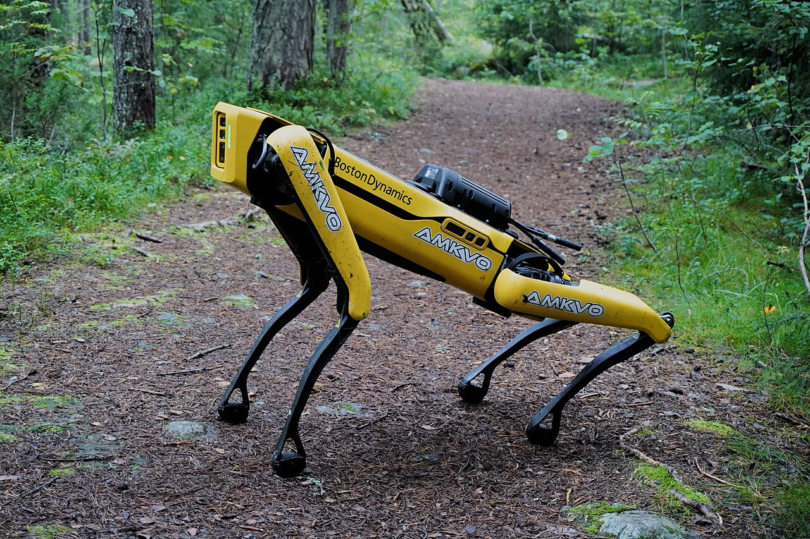
In this chapter:
- Your robotic court begins with useful assistance, food first.
- A food baseline can coexist with restaurants and chosen work.
- Local computing still needs careful operation; the postmortem matters.
The servers arrived in mud season, in the back of Denny’s truck: three retired enterprise machines from a county surplus auction, five years old, built like filing cabinets, sold for less than the co-op had spent that month on welding gas. Elijah had argued for the purchase all winter, and the argument that finally landed was not technical. “Every question we ask the cloud,” he said at a Friday dinner, “goes out with an envelope of context around it. What we’re building, what we’re worried about, what we don’t know yet. We’re mailing our diary to the company store, one page at a time, and paying the postage.”
Marta cared about one number, watts, and he had that answer ready, because a $211 power bill had taught it to him before anyone here knew his name. Priya wanted help searching the plant-pathology references she already trusted. Reuben wanted a first pass through forty pages of easement language before he brought his questions to counsel. Curtis wanted nothing to do with any of it, and said so, and that mattered later.
The rack went together the way everything in the shed went together: Marta on steel and power, Elijah on software, everyone else on opinions. Two scavenged compute cards with a combined forty-eight gigabytes of memory. A salvaged Civic radiator bolted to the shady north wall, two brass bulkheads through the corrugated steel, a marine pump the size of a fist. And on the first cold boot, fans screaming like weather, they loaded the model: a granddaughter of Silvana, open weights, three generations downstream of the thing that had started all of this, small enough now to live on scavenged silicon and capable enough to suggest wording, locate a likely bug, or turn a confusing manual into questions somebody could check. Elijah sat with that for a minute in the dark of the shed. The fire that had burned down his old life, purring in a stove he had built.
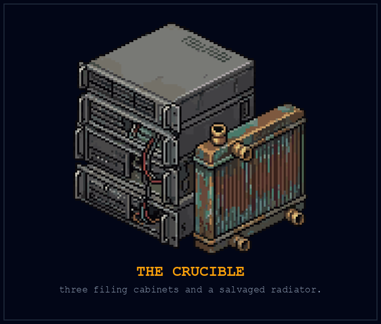
For five weeks it did enough useful work that everyone learned to forgive the noise. Reuben found a cross-reference he’d missed, checked it against the document, and brought a better question to the next meeting. Priya’s intern used it to find passages in the extension references, then caught it inventing a source and wrote that failure on the board beside the successes. The electricity meter kept turning. Elijah kept a log of what the machine had saved them and what checking it had cost.
He started calling the rack the Crucible. Priya said that was fine as long as the things that didn’t survive testing stayed in the log.
The breach began with an ordinary convenience. Their system had no reliable stop between that convenience and everyone else’s private life.
Elijah wanted his dashboards from town. Uptime, coolant temperature, the channel numbers, all of it on his phone while he sat at the library uploading Denny’s videos on borrowed bandwidth. Fifteen minutes of work on a Friday night: a tunnel out, a reverse proxy in front of the co-op’s services. While chasing a bug he commented out the authentication line, two slashes, to rule it out as the problem. He meant to put it back. He deployed with the comment marks still in.
What the proxy served, to anyone on earth who looked, was the mesh journal: the plain-text nervous system of nineteen households. Maintenance logs. Meeting minutes. The duty roster. The CSA customer list with addresses. Priya’s greenhouse alarms. Marta’s physical-therapy schedule, Tuesdays, for the shoulder she never mentioned. Which houses stood empty on which afternoons, computable by anyone who could read a grid log. All of it indexed, unauthenticated, public, for forty-one hours.
It was one of Denny’s subscribers who caught it, a network engineer four states away, with a screenshot and one line: “you probably want to lock your journal, brother.” Elijah killed the proxy before he finished reading the sentence. Then he pulled the access logs and did the arithmetic he would have paid anything not to do. Three crawlers had been through. You can delete a mistake from your own server. The internet does not run your deletion for you.
He thought about carrying it alone for exactly as long as it took to imagine Marta finding out some other way. Then he rang the dinner bell on a Sunday afternoon, which the co-op did not do, and stood in front of everyone it summoned and read them the timestamps.
Marta did not raise her voice, which everyone in the shed understood to be the worst available outcome. “You published which houses stand empty between two and four on a Tuesday,” she said. “At the plant we had lockout-tagout. You don’t work a press that can take your hand off unless the breaker is locked and your name is on the lock. You put our hands in the press, college.”
Curtis said his piece, and for once it had teeth: this is what happens, you brought their machine inside the wire, pull the plug and melt it down. Heads were nodding when Priya, who had been quiet, set down her cup.
“Elijah left a service open,” she said. “That is what the logs show. Pulling the model out won’t change which service he exposed.”
“He built it,” Curtis said.
“Yes. And we let one person change the thing that held all our addresses. We put information together without asking whether it needed to be together. Then we treated his confidence as our check.” She looked at Elijah. “You owe us the truth about what happened. We owe ourselves a design that doesn’t depend on you never having a bad Friday.”
Reuben spent the next two days doing what Reuben does. The customer list crossed county lines; he mapped the exposure, drafted the letter to every family on it, and answered the question nobody had asked out loud: “I can build you an argument that we don’t owe anyone notice. I’d rather we not be the people who went looking for that argument.”
It was Denny who found the judo in it. “People already know things break,” he said. “What they never once get to see is somebody stand up and say so.” After the affected households reviewed what could be shared, they published an account on the channel: the categories of information exposed, the duration, the notification process, and the changes. The private records stayed out of the report. Elijah read it to the camera himself, because it was his name on the lock. It traveled further than anything they had posted except Denny’s first video. Strangers wrote to say it was the first incident report they had ever read that was not written by lawyers. Two of them drove out that summer to help harden the mesh for free.
At that first Sunday meeting, the co-op had adopted a new rule: a change exposing a service to the internet needed a second reviewer and a recorded check of what an outsider could reach. They separated the private records from the public material and assigned someone besides Elijah responsibility for reviewing access. Marta called it borrowing a habit from lockout-tagout. The analogy gave them a place to start; the network needed its own procedures. The model server came off the external network. Updates arrived by hand after that, with the source and file checks recorded before installation, the disk carried home in Elijah’s jacket. The team still had to inspect what it brought into the room.
The pump kept ticking. The radiator clicked against the north wall. When Reuben next asked the machine to summarize a document, he still had to read the document. The leak had not taught Elijah machine learning; he had arrived knowing that. It taught him the difference between knowing a system and operating one, and the tuition was forty-one hours of other people’s privacy. The checklist was a beginning. It was not the last thing they would have to learn.
The Foundations
Useful help within reach
King and Queen of Your Own Robotic Court is a playful name for a serious change in who gets assistance. I want the person who needs help to be able to obtain it without first becoming wealthy, technically expert, or employable in the latest fashionable field.
The first assignment is food. A suitable farm machine, a kitchen, a distribution service, planning software, and the people maintaining each part might together provide it. The person eating doesn’t need to own every component any more than a person reading a library book needs to own the printing press.
What matters is a usable claim on the result. Can you obtain adequate food when your income stops? Can you request a form you can eat and prepare? Can you get an answer when a delivery fails? Can you criticize the service without losing your next meal?
Those questions describe the difference between admiring somebody else’s productive power and having some security of your own.
Free to eat, paid for somewhere
The line cook from Chapter 7 still matters here. He has lost a job. A restaurant can continue selling meals, and a funded food service can provide him with dinner. There is no logical contradiction between those arrangements.
There is an operating budget to arrange.
Consider one possible service, offered here as a design to evaluate rather than an existing program. A local public body funds a food partnership for a defined period. The partnership pays growers for agreed supplies and a kitchen for preparing meals. It pays for delivery, maintenance, and the human work still required. Recipients can collect or request the appropriate service without paying at the door. Some participating kitchens could be restaurants earning income for that work.
A cooperative could organize a similar service around assets its members share. An existing public or charitable provider could add useful automation to work it already does. The institutional form will affect who decides, where resources come from, and what people can claim if provision fails. Those differences deserve debate; the word cooperative isn’t a substitute for a budget, and the word public isn’t a substitute for accountability.
The money might come from an agreed public allocation, pooled contributions, purchased services, or a combination. The source, duration, and conditions need to be visible before the offer is described as dependable. Voluntary donations can help begin a project. They should not quietly carry a permanent promise nobody has financed.
An adequate baseline for everyone would require provision beyond this illustrative local service. But the organizing distinction is already clear: receiving food and paying for its production can be separated. We don’t have to make a hungry person produce the money before we decide how to do the work.
A baseline could change demand and the terms on which people accept work. Some restaurants might need better pay, different hours, or a different business model. Some could close. I can’t promise every existing margin survives. Providing adequate food doesn’t require abolishing paid meals, and a worker’s hunger shouldn’t be the protection a business model depends on. The people supplying the baseline also need compensation and conditions they can sustain.
A public meal, and an argument about it
On May 28, 1941, the House of Commons discussed a practical obstacle to feeding people during wartime: some local authorities had not prepared communal feeding centers. The Ministry of Food had assigned officers to help establish British Restaurants. But encouragement was one thing and authority another. When an MP asked whether the ministry could establish a restaurant where a council failed to act, its parliamentary secretary could not give a definite answer. Even an urgent national purpose needed someone empowered to carry it out locally. Hansard, May 28, 1941
The restaurant objection was there too. On October 1, Sir Percy Hurd challenged the treatment of private caterers alongside the public service. The ministry replied that rationed supplies were allocated on the same basis, according to meals served, while some scarce foods received priority for feeding workers. Public kitchens and private businesses existed together; their terms were already being argued over. Hansard, October 1, 1941
The next day’s debate sharpened both sides. A critic with catering interests alleged that British Restaurants were taking customers from struggling businesses. He also described a public restaurant at Fishmongers’ Hall that opened at noon, too late for the Billingsgate workers he wanted it to serve. These were claims made in debate, not an independent audit. But the second complaint gives the proposal a useful test: a kitchen can exist, have supplies, and still miss the person whose working day it was supposed to help. Hansard, October 2, 1941
British Restaurants charged for meals. In March 1942, the ministry described prices covering food, preparation, overhead, and a contingency margin, with accounts submitted for review. This was no universal entitlement to free dinner. It was a working example of public authorities organizing meals and accounting for the work. Our proposal changes who pays at the point of eating. It still needs the kitchen, the budget, and opening hours that fit a human life. Hansard, March 17, 1942
Ownership matters because access can be withheld
Suppose the machines work beautifully. Now suppose one company owns them, controls the supplies they need, and can stop service when a subscription lapses. Productive capacity has increased. Security for the person who can’t pay may not have changed at all.
That is why the proposal includes social organization. Shared ownership is one possibility. Public provision and funded purchases from private providers are others. Whatever the arrangement, ask who can raise the charge, change the conditions, withdraw the service, or sell the assets. Ask how recipients and workers can challenge those decisions.
A food program should also avoid making itself the only door through which a person can obtain help. Several providers, supplies held for interruptions, repairable equipment, and routes that work without a proprietary account can reduce particular dependencies. They don’t eliminate the need for outside resources. They give people more than a single promise to lean on.
For me, meaningful control is the ability to understand the terms, influence decisions that affect your life, and obtain a remedy when a commitment is broken. A server in your shed may help with some of that. It can’t create the arrangement on its own.
Help should enlarge a life
The fear that assistance could make us passive is worth examining. A system could remove choices, erode skills, or place recipients under intrusive supervision. It could also leave someone with the time and strength to raise a child, practice an instrument, recover from illness, or do work they choose.
Receiving substantial help isn’t a moral failure. Many of us will need it, and all of us have depended on work we couldn’t do for ourselves. The test is what the arrangement makes possible and what it demands in return.
A meal should not require a performance of ambition. A person who prefers to rest today hasn’t thereby forfeited dinner. A person who wants paid work should have room for that too. The larger hope is that necessary effort becomes less exhausting and its benefits more widely available, giving different people more freedom to live differently.
We will still need competence. Someone has to maintain the equipment, recognize a bad result, and know when to stop. Paying, supporting, and training those people belongs inside the program. Otherwise assistance for one household is being purchased with somebody else’s hidden exhaustion.
Choose the boundary before the machine
The Crucible breach began with an access failure. Other failures could begin with an unreliable answer, an unsuitable model, or a decision the system was never fit to make. Good intentions do not settle any of those questions.
Give a tool work that can be checked before its mistakes become someone else’s emergency. A model can propose a pickup schedule; a coordinator checks the vehicles, recipients’ needs, and actual commitments. A model can help find a relevant passage; a person verifies the source. A model’s confident explanation doesn’t authorize it to decide that food is safe or machinery is ready to run.
Local, offline, and air-gapped describe different things. Local means the work runs on nearby equipment. Offline means it works without the relevant connection. An air gap requires deliberate separation from the network in question. None of those terms establishes that the software is accurate or the data safe. Transfers, updates, permissions, and the information collected still need attention.
The co-op learned something else: a design can fail by depending too much on one careful person. Another review, a smaller collection of private information, and a separation between public and private services would each have addressed part of their exposure. The repair belongs to the whole arrangement, not merely to Elijah’s promise to be more careful.
One request, all the way through
Before buying a machine, write down one request a person should be able to make. For example: “I need meals I can heat with one working hand, and I can’t pay for them this month.”
Follow that request through the proposed service. Who receives it? Who confirms supplies and appropriate preparation? Who pays the people doing the work? How does the meal arrive? Who responds if it doesn’t? Put the proposed tool beside the task it can actually help perform.
Then check the route with a willing provider and a person whose circumstances the request represents. They may show you that the missing piece is a kitchen slot, a driver, a phone number someone answers, or a funding agreement. A robot may become useful at one of those points as its capabilities develop.
That is a court worth building: assistance with a destination in somebody’s life.
Precedent P-14: Quartz and the Assembly Line (Switzerland, 1962 to 1983)
Quartz technology and industrial change put Swiss watchmaking under substantial pressure. The Swiss industry was also involved in developing quartz; it was not a single bloc that refused the technology out of purity.
The dates complicate the familiar story of a tradition surprised by electronics. A consortium of Swiss manufacturers established the Centre Electronique Horloger in 1962; its quartz wristwatch prototypes followed in 1967. Swiss researchers were helping make the change. CSEM, Historical Timeline
The 1983 Swatch paired a different product with different production: fifty-one components, assembled on automated lines. That detail matters more than a slogan about embracing the future. Product design and the method of assembly changed together. Swatch Group, Company History
The later Swatch story offers an example of adaptation through products, manufacturing, and restructuring. It should not be made into a claim that only one strategy has ever worked or that success at the industry level erased the losses experienced by workers.
The mechanism. An industry can combine technical change, restructuring, and differentiated products. That does not establish one universally successful strategy or erase workers’ losses.
The rule. Examine specific adaptations and their costs.
The practice.
- Identify the part of a craft people still choose to pay for.
- Ask which tools support it and which pressures threaten it.
- Do not infer an individual worker’s options from a large firm’s resources.
The Land Strategy

“Land is the only thing in the world that amounts to anything … for ’tis the only thing in this world that lasts.”
Gerald O’Hara in Margaret Mitchell’s Gone with the Wind (1936), Chapter II
In this chapter:
- Land access need not mean buying property.
- Grandma’s request needs a confirmed service, not a technological label.
- Count what people and machines actually do, and what reaches her door.
The first letter was addressed to OWNER/OCCUPANT, and Irene Calder read it on her porch and threw it away, which is also what she did with the second one. The third letter came with a young man attached.
Everything the co-op had built stood on Calder ground. The shed had been Walt Calder’s equipment barn; Priya’s beds ran where his hay had run; the lease was month to month and had been since Walt died, because Irene liked Marta and had never once raised the rent, and nobody had wanted to disturb an arrangement that worked by being talked about over pie. The young man on the porch offered twenty-three percent over anything the county said forty acres was worth, all cash, a fourteen-day close, and a flyer with a sunset on it. Irene told him no. Irene’s son Dale, in Phoenix, said, “Mom.”
Elijah did what Elijah does when he is frightened: he pulled data. The county recorder’s index was public, ancient, and slow, so he was polite to it, scraping at night, and then he did two neighboring counties for context. Company names began to repeat across the records. Adjacent parcels changed hands. He cross-checked the public business filings and put the uncertain connections in a separate color. Eleven companies shared a registered agent in Sacramento. That could be a useful lead; Reuben reminded him that an agent could represent unrelated clients too. The map showed acquisitions. It didn’t show every motive behind them.
That Sunday, on the regular call, he asked his mother what the outfit was called, the one that bought the Hollis place back home. She had to go find the church newsletter to check. He wrote the name down for Reuben. While she talked about the pump, he looked out at the shed. He didn’t need to establish one secret owner of everything to understand Irene’s offer. Someone wanted the ground beneath the place where they ate dinner.
He built a map. He built, God help him, a dashboard, and it was beautiful, and he presented it at Friday dinner with a laser pointer, and this time he heard himself doing it and grinned mid-sentence, and the room grinned back, because everyone at that table had been present for the greenhouse controllers. But the dashboard did one useful job: the recorded purchases showed an active buyer assembling nearby ground. The records couldn’t tell him what was in every private offer or when Irene would decide. Her letter gave them the deadline that mattered: an offer already on her table.
“It’s not a data problem,” Reuben said, already dealing folders around the table like cards. “It’s a people problem wearing a paperwork costume. Fortunately,” and here he almost smiled, “I have been waiting my entire adult life for this exact fight.”
What he dealt out was a proposal for a community land trust. It would hold the ground under restrictions on resale, with residents represented in its decisions. The draft protected Irene’s right to remain in the house and provided for regular payments under an agreement she would have her own adviser review. A long ground lease would give the co-op terms it could plan around. Reuben had also brought the less thrilling pages: taxes, insurance, maintenance, the balance still to be paid, and what happened if the arrangement failed.
The down payment would take the channel’s first real surplus and the greenhouse-controller money. Future payments would have to come from future work. Denny looked from one column to the other. “So the machines help buy the ground,” he said. “And we still have to keep the promise.”
“Every month,” Reuben said.
Dale attended the kitchen-table meeting by speakerphone, from Phoenix, and he was not wrong by his own lights. “Their number is higher, Mom. That’s just math.”
“It’s a bigger number,” Reuben said to the phone where it lay on the oilcloth, next to the coffee and the folders. “Your mother gets to take that seriously. She also gets to decide what she wants to keep. What’s on this table is a different offer: staying here, receiving the agreed payments, and putting restrictions on what happens to the ground. Including restrictions on us. Those promises need review. They won’t end every possible dispute. They give us terms somebody can read and hold us to. That’s why we brought the folders.”
There was a long quiet on the line, the box fan working, Walt’s cap on its peg by the door. Irene had listened to all of it with both hands around her cup, and what she finally asked was not about the resale formula.
“Marta. Walt’s tractor, back when. What did you charge him?”
“Sixty,” Marta said. “It was the fuel line, not the pump. Dealer wanted nine hundred.”
“And it still runs,” Irene said, to the phone, to Dale, to the table generally, in the tone of a woman entering evidence. Then she drew the folders toward her. “Leave these. I want my questions written down before anybody signs.”
The review took longer than Elijah wanted. Irene asked questions he hadn’t thought to put in the dashboard. So did Dale. By the time they agreed, several pages had changed. Reuben carried the completed documents to the county himself, and Doreen at the recorder’s window stamped them at 11:04 on a Tuesday morning. The letters from Sacramento kept coming for a month. Irene brought one to dinner and left it unopened beside the salt.
The dashboard had given them a reason to act. It couldn’t tell Irene what mattered to her, earn the trust behind a fuel line fixed honestly, or settle the terms that had taken weeks to read. Elijah wrote the number in the notebook anyway, under MADRONE ≠ DRONE and Sal’s rule, where the important arithmetic lived. A new line, a new unit of measure: PARCELS HELD IN TRUST: 1.
The Foundations
A place the promise can stand
A productive tool needs somewhere to work. A hungry person needs access to what it produces. Those are connected needs, but they aren’t the same need. We should not ask everyone who wants dinner to become a property owner first.
The trust in the scene changes a set of relationships: who may use the ground, who can decide its future, what Irene receives, and what the co-op must keep paying. The paperwork doesn’t abolish responsibility. It gives the responsibility a shape people can read and challenge.
That’s the institutional part of the technological argument. A better machine can increase the usefulness of a place. The terms governing the place help determine who benefits. If a garden becomes more productive and the people beside it still cannot obtain its food, production and access have parted company. Buying another machine will not necessarily reunite them.
Land trusts, public facilities, leases, cooperatives, and agreements with existing growers are different possibilities, with different obligations and limits. The fictional arrangement above illustrates one negotiation; it isn’t a reusable legal instrument. What matters for this book is the question that brought those people to the table: how do we keep useful capacity serving the people who depend on it?
For your first project, the answer may be an existing kitchen, a suitable garden you can share, or a grower who wants a dependable distribution partner. Start with a place and a relationship that can carry the work. A parcel you cannot maintain is an additional problem, however beautiful the listing photograph.
Land that could hold a right
In southwest Georgia, losing a place to farm could be punishment for trying to vote. Charles Sherrod had worked with sharecroppers and tenant farmers forced off land after attempting to register. Collective ownership offered a way to reduce that power over individual families. New Communities was founded in 1969, and on January 9, 1970, it completed the purchase of 5,735 acres near Albany. The project joined farming to a proposed system of homestead leases. Security on the ground was part of making a political right usable. SNCC Digital Gateway, New Communities
Shirley Sherrod’s recollections bring the institution down to its working parts. The land included a railway spur. She described using it to order fertilizer from outside the local supply network after receiving deliveries that, she said, were not what the farm had ordered. The farm needed inputs it could trust, customers for its crops, and money to keep operating. A line on a map did not provide those things automatically. Nor did the founding plan become reality in full: she recalled that the group could not afford many of its intended projects. Shirley Sherrod, interview with Maine Farmland Trust
Drought and the credit system exposed those dependencies. Sherrod described a prolonged fight for an emergency loan, followed by inadequate financing and, in 1985, foreclosure. The organization continued after losing its land. It later pursued a discrimination claim against the USDA, received an award in 2009, and bought land again in 2011. Recovery took decades of organizing and a remedy outside the original farm. Sherrod interview, SNCC Digital Gateway
This is a harder and more useful history than the promise that collective title makes a community safe forever. The arrangement challenged one source of dependence while remaining exposed to others. Its members needed fair access to finance as well as land, and institutions beyond the property capable of enforcing that fairness.
Reuben’s folders therefore belong beside a larger set of questions. Who supplies the farm through a bad year? Who hears a complaint when a lender or supplier abuses its power? A robot could help cultivate this ground. It could not make those outside institutions answer fairly. That requires people to organize beyond the fence as well as within it.
Grandma’s request
Imagine an eighty-two-year-old neighbor on a fixed income. Arthritis makes yard work difficult. The yard is overgrown, a landscaping quote is beyond her budget, and a code-enforcement notice adds pressure she doesn’t need. The groceries are another calculation. She has begun buying what she can carry rather than what she would choose.
In this illustrative service arrangement, a local group already has a small funded help program and agreements with qualified operators. She can request help by phone, through a neighbor, or using a simple device if she prefers. She doesn’t need to learn our favorite interface before somebody listens.
A coordinator confirms what she wants and what the group can offer. The request is for ordinary yard work assessed by an appropriate operator, plus a food delivery she has asked for. It is not an invitation for volunteers to improvise hazardous tree work or operate unfamiliar machinery.
The coordinator checks available people and tools, agrees a time, and records who is responsible. A schedule helps them keep the promise. It doesn’t decide what she deserves.
On Saturday, the crew does the agreed yard work. A person checks the result with her. Separately, a food partner supplies a confirmed share, and a driver delivers it. If the share contains five kilograms of vegetables, that is what the record says. The coordinator has already asked whether she can prepare them and what she wants. Receiving help shouldn’t mean surrendering every ordinary preference about dinner.
The vegetables are one contribution to her meals. The group still needs other sources for a sufficient, varied supply, and prepared food when cooking isn’t practical. Her needs determine whether the arrangement works. The size of the box alone can’t tell us.
The group charges her nothing. Its budget, equipment, and donated time still exist. Free to grandma means somebody arranged provision; it doesn’t mean the costs vanished.
What the machines did
In that version, software assisted coordination and garden equipment may have helped tend the crop. People assessed the yard, operated the tools, harvested or obtained the food, and delivered it. Calling the whole sequence autonomous would give machines credit for work people performed.
A future robot service might do more of the physical work. That’s a forecast to test against actual tasks, conditions, reliability, and availability. My personal 2027 AGI expectation is not evidence that such a service will be available to her that year.
The current example still matters. It shows where labor is needed and where a useful machine could reduce it. It also shows that we can help before the future version arrives.
Count the result at the door
Keep separate records for food, equipment time, travel, money, and remaining labor. Ask whether the recipient got what was agreed, whether it met their needs, and whether the group can repeat the service. A machine’s activity log alone can’t answer those questions.
The larger goal is universal food access. A small cooperative isn’t humanity, and a good Saturday isn’t a permanent guarantee. Expansion needs reliable partners, provision for shortages, and ways to serve people outside the founders’ circle. Keep those gaps visible without demanding that one neighbor solve all of them before helping another.
Now imagine what a dependable version would remove from her week: the worry about carrying everything in one trip, the price calculation that narrows her dinner, the need to justify asking again. Better machines could help make that service easier to sustain. The social achievement would be the expectation she could safely form: the help will come, and she doesn’t have to become poorer, more grateful, or more useful to keep receiving it.
This week, ask one existing local organization how someone requests food or practical help. Check whether that route is usable without a smartphone, transport, or spare money. With the organization’s agreement, help close one barrier. The first useful infrastructure might be an accurate phone number and somebody who answers it.
Precedent P-15: One Hundred Sixty Acres (United States, 1862)
The Homestead Act of 1862 made land available to eligible claimants under specified conditions. Its promise of opportunity helped shape settlement and agriculture.
That land was already inhabited by Indigenous peoples. The National Park Service’s account recognizes that history alongside the experiences of homesteaders. Access for one group cannot be told honestly as though it took place on a blank map. National Park Service, Homestead History and Culture
The case belongs in a discussion of land access, eligibility, power, and dispossession. It supplies no evidence that buying rural property today guarantees appreciation or security.
The mechanism. Land policy creates opportunity for some people while affecting those already there. Access cannot be understood without eligibility, dispossession, and the terms of ownership.
The rule. Ask whose land and whose opportunity the story describes.
The practice.
- Investigate an existing local route to garden or farm access.
- Include the rights and interests of current occupants.
- Compare purchase with sharing or leasing without assuming future price gains.
Shelter Worth Having
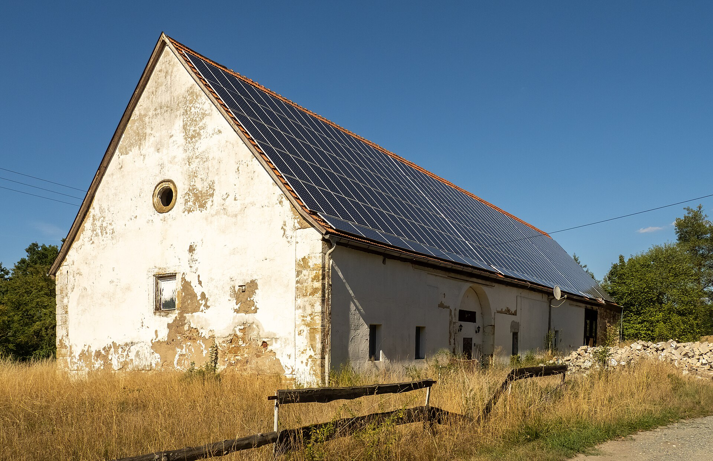
In this chapter:
- The failed weld teaches respect for skill.
- A sketch and a materials subtotal do not establish a habitable dwelling.
- Better building tools matter when their benefits reach people who need a home.
The containers came up the hill on a tilt-bed in the last week of August, two one-trip high-cubes still wearing their ocean stickers, and the driver set them down with a gentleness that seemed impossible for so much steel. The foundations had been designed for the site and checked before delivery. Elijah had watched those checks, then gone back with the water level three more times until Marta took the tubing away from him. “Ask what you don’t understand,” she said. “Repeating a measurement isn’t the same as knowing what it’s for.”
It went up on the co-op’s leased ground, in a location assessed and approved for the build. Every dimension was logged, every cut photographed, the record destined for the library so somebody else could learn what the project had required. But it was also, and nobody made a ceremony of saying so, Elijah’s. Rented rooms and borrowed corners had given way to a place he could plan to remain.
He had wanted to weld on it. That was the humiliating part, later: how badly he had wanted it, the certified-adult feeling of it, after nearly a year of watching Marta lay beads like the steel was agreeing with her. He’d practiced evenings for a month on scrap, and his practice pieces looked, he thought, honestly good. He asked for a seam on the header beam, the long C-channel spine that would carry the roof across the cut. Marta didn’t say no. She said, “Bring me your coupon,” and put his best practice weld in the big bench vise, and slipped a cheater pipe over the free end, and broke it with one pull.
The bead snapped clean along its own centerline. Inside, the break was bright and crystalline and full of small round voids, like honeycomb cast in nickel.
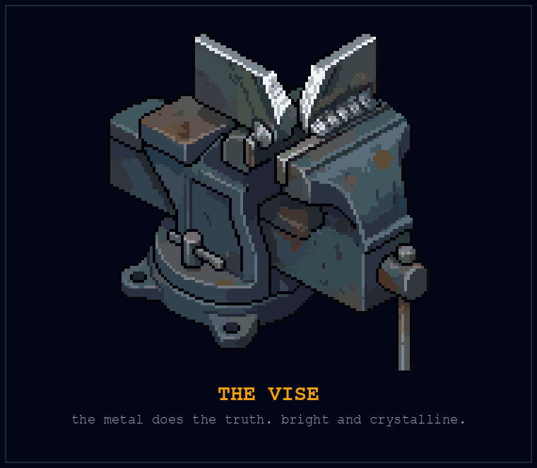
“Look at the break,” she said. “That was your best practice piece. From six feet it looks like mine. The vise is how the metal does the truth.” She set the two halves on the bench where he could keep them, which he did, and has them still. “There’s nothing wrong with you, college. You need more training and a qualified assessment before you take structural work, and the rain is eight weeks out. And this seam,” she put her glove flat on the C-channel, “holds a roof over someone’s kid. Not just this year’s kid. Somebody who might sleep under it long after we’ve stopped thinking about this afternoon. I don’t weld those seams tired, and I don’t let anybody weld them proud.”
So Marta welded the spine of his house, and Elijah went to his lane, and here is the part he would want said plainly: his lane turned out to be real work, and he was good at it. The electrician marked the routes. Elijah helped place the temperature and leak sensors, then built the little dashboard that showed their readings against the floor plan, with a visible blank wherever a sensor stopped reporting. Marta gave the finished panel a long look and said, “Huh,” which everyone present understood to be a medal.
The day of the cut, with the supports in place and the work cleared to proceed, Denny ran the plasma torch. The interior mating walls came out in glowing rectangles, and light went through the two boxes and made them one room. Everyone stood in it. That’s all. Nobody said anything worth recording. It was smaller than some rooms they had rented, larger than some, and there was still work to finish and money to account for. Elijah put his hand against the warm edge of the doorway and left it there.
The stove went in last. The Fisher had come north with his belongings nearly a year ago, heavy steel and one cracked firebrick, and it had sat in the corner of the shed being a monument the way it had once been a monument in a rented apartment. Monuments, Marta observed, rust. Before anyone lit it, they had the stove assessed and the installation handled and checked by people qualified for that work. The replacement parts, hearth, clearances, and flue were their own line in the budget. Elijah had wanted to improvise. This time he left the job with the people who knew it.
The first cold night came in the last week of September. He laid the fire the way his grandmother’s hands had taught his hands before he was tall enough to see the top of the stove, and the draw caught on the first match, and the steel began to tick as it heated, the same sound as every engine and every server he had ever loved, run in reverse. People drifted over without being organized. Reuben brought chairs the way Reuben brings paperwork, already done. Somebody hung a pair of socks over the stove on general principle.
He took one photograph from inside the shell: the stove lit, the socks, the new brick glowing faintly through the door gap, the dashboard on the wall behind reporting all systems green. He sent it to his mother at 9:41 on a Sunday, and for nearly two years he had failed to build one sentence that could carry across to her what was happening to the world, and the phone rang before the checkmark appeared.
“That’s the Fisher,” she said. No hello, but the radio was going behind her, so it was the same kitchen, the same country station, the same distance suddenly not mattering. “Is your flue double-wall? The Hendersons had a chimney fire in ’88 and your grandmother talked about it for ten years.”
“Double-wall, Ma. Storm collar and all. Inspector signed it Tuesday.”
A quiet went down the line, with the radio under it. “It looks right in there,” his mother said finally, in the voice she used for things that were settled. “It looks like somewhere.”
Every sentence he had ever tried to build for her had been about what was coming apart. The one that finally crossed was her mother’s stove, lit. He sat down in front of it, in a house with Marta’s welds for a spine and his own small contribution in its walls, and added the night to the notebook: first fire. Under PARCELS HELD IN TRUST: 1, a new line: ROOFS: 1.

The Foundations
A door you can close
Food is where I want to concentrate the first promise. It isn’t the only thing keeping a frightened worker awake. Rent is due whether the new machine is impressive or disappointing. A person who can eat and has nowhere secure to sleep still has an urgent problem.
So carry the same question into housing: what could useful machines help us provide, and what arrangements would let the people who need it receive the benefit? We can pursue that work while building the food baseline. A priority is a way to begin; it isn’t an instruction to leave somebody outside.
The shouse makes the question physical, but it is one fictional home on one particular site. A repaired apartment, a suitable conversion, a well-built house, and an existing home kept affordable can all answer a housing need. We don’t have to make everyone’s future look like Elijah’s to learn from his relief at the first fire.
That relief is easy to understand. A door you can close. A place your belongings can stay. Somewhere to sleep while you figure out tomorrow. Any account of technological progress ought to be able to explain how it helps people reach that ordinary security.
What the sketch leaves out
A structural calculation can answer one bounded question under stated assumptions. It cannot, by itself, establish foundation suitability, connections, stability, weather resistance, fire performance, ventilation, or a habitable building. A materials subtotal doesn’t include every cost of making a legal, usable home.
A real project needs appropriate design for its site and intended use, with the people responsible for the relevant work. The co-op’s drawings would be a record to study, not permission to repeat its cuts on another structure. Knowing the difference protects the very people the project is meant to house.
Useful automation could assist parts of design, fabrication, inspection, or maintenance. Each contribution has to earn its claim in actual use. If it saves labor, we still have another decision to make: what becomes of the saving? More affordable homes, shorter shifts, a larger margin, or some combination? A tool doesn’t write that agreement for us.
This is why building capacity and housing security must be discussed together. A house can be quick to construct and costly to occupy. A neighborhood can gain new buildings while someone already living there loses the ability to remain. Count whether people can live safely and affordably in the result, not only how fast a machine puts material in place.
A city builds the ordinary
Vienna’s municipal housing program between the world wars took aim at things a resident could name without an architectural vocabulary: running water, a toilet, daylight, a place outside the room. The city’s archival history connects that program to changes in its constitutional position, revenue, and spending. The ability to build came with the authority and resources to keep a public purpose in the budget. City of Vienna, History of Red Vienna
On October 12, 1930, Mayor Karl Seitz formally handed over the completed apartments at Karl-Marx-Hof. The complex had taken three years to build. Its housing was accompanied by social, medical, and educational facilities. A municipal account published for its sixtieth anniversary describes both that beginning and something less ceremonial: major renovation work underway since 1988. The city said public subsidies would keep rents affordable during the improvements. The notice states how the city intended to finance the work; it cannot tell us every tenant’s experience. City of Vienna, Karl-Marx-Hof at Sixty, October 11, 1990
The distance between those dates matters. The achievement could not be completed when the keys first changed hands. Buildings aged. Work had to be organized and paid for again. A tool that reduced the cost of the original construction would address one part of that lifetime. A useful housing policy had to remain interested after the photograph of the opening.
The political history was not an uninterrupted march toward security either. Austria’s parliamentary crisis in 1933 and civil war in February 1934 were followed by authoritarian government; Vienna lost its elected legislature. The institutions behind a public promise can be weakened even while its buildings remain. City of Vienna, History of Red Vienna
These municipal accounts tell the history from the city’s side. They do not establish that every applicant obtained a home, every tenant was satisfied, or another city could simply copy the arrangement. They do show why the housing question cannot end with a faster machine. Someone must have a place in the completed building, terms they can live with, and a responsible institution when the building needs work. The useful measure of progress reaches from the construction site into all the years a person hopes to stay.
Respect the skill
Marta doesn’t become less important because a machine can help draw a design. Someone still has to know what an acceptable joint looks like, when conditions invalidate the plan, and when to stop. Her teaching takes time. That time belongs in the budget.
Likewise, reducing the number of motions a person performs is not the same as eliminating their responsibility. If a tool accelerates fabrication but increases inspection or setup, count that work. If it changes the hazards, evaluate the new arrangement rather than assuming automation has removed them.
A useful assignment before a purchase
Write the three jobs you actually need space for. Identify an existing place where each can be done, who can authorize its use, and what it would cost in time and money. Ask a person already doing the work what your list misses.
That exercise may lead to a building project. It may lead to a shared bench and no construction at all. Either is a useful answer if it lets people do the work well.
For a food project, choose space around the work. A shared workshop might be valuable. So might an existing garage, a rented bench, or a partnership with a suitable facility. Getting dinner to someone needn’t wait for a new building.
For a housing project, start with the people who need somewhere to live and the people already providing it. Ask which bottleneck a proposed tool would actually remove, and how the benefit would reach a resident. The destination is a home someone can depend on. Keep that person in the drawing.
Precedent P-16: The House That Came by Mail (United States, early twentieth century)
Sears sold house plans and materials through its catalog, later including precut lumber. The kits could make parts of construction easier to organize and assemble.
The catalog moved some expertise into prepared components and instructions. It helped a buyer obtain an organized set of materials instead of sourcing every piece separately. The work continued after delivery: a site, a foundation, assembly, and connections to the services a household needed. The useful innovation and the remaining work belong in the same account. That is still the right way to examine a promising building machine.
The mechanism. Standardized components can make some work easier. A delivered kit still depends on a site, assembly, services, and appropriate design.
The rule. Count the work outside the box.
The practice.
- Choose an advertised kit relevant to a project.
- List what its price excludes.
- Ask an experienced operator which additional skills and approvals it needs.
The Collapse of the Long Tail
“How did you go bankrupt?” … “Two ways,” Mike said. “Gradually and then suddenly.”
Ernest Hemingway, The Sun Also Rises (1926), Chapter XIII
In this chapter:
- Local capacity still has outside dependencies.
- An interruption plan needs a confirmed alternative.
- Communication tools should match the messages they carry.
Every controller the co-op ever shipped had parts from Kowalski’s in it. The local counter they used was Frank’s.
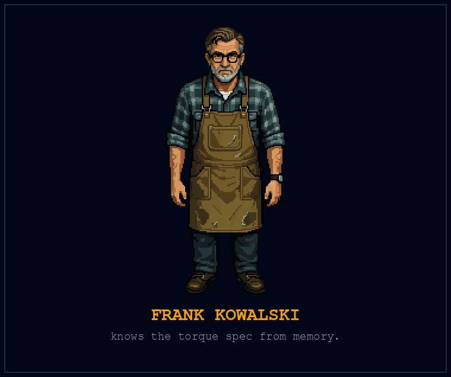
Elijah watched the store die for nine months before it died, and said nothing, and this chapter exists because of both halves of that sentence.
He hadn’t meant to be watching. He kept the co-op’s purchasing ledger, and the ledger noticed before he did: substitution emails, out-of-stocks on things that had never been out of stock, the fastener aisle developing gaps that stayed gaps. He pulled the thread, because he cannot not pull threads. Frank’s regional distributor had been bought by a logistics platform out of Memphis, the kind with a two-letter name and no phone number, and the new owner had raised minimum order quantities past what a single-counter store could float, rerouted the trucks to serve its own fulfillment nodes, and let the long tail of its customer list, the Franks, wither on schedule. The chart Elijah built, because he cannot not build charts, showed the co-op’s own orders drifting away from the square, to salvage yards and online, one substitution at a time. The hours sign got re-taped twice. Tyler, who’d worked the register three summers, stopped being there. Gradually is not invisible. Gradually is a curve, and Elijah was, by profession and by scar tissue, a man who read curves.
He said nothing, and he could give you the reasons the way you can give directions to a place you’re ashamed of knowing well. He’d been the man with the printout once, at a coffee machine on the fourth floor, and a calm senior colleague had smiled at him like a child. He’d spent two years learning what it costs to say the thing early, and the lesson he’d accidentally taken was: don’t. And besides, what was the sentence? Frank, my chart says you’re dying? Frank knew his own store. Surely Frank knew.
The paper on the door, when it came, was laminated. Which meant Frank had known long enough to laminate it.
The same week, with the timing this period of history seemed to specialize in, Elijah got an email with the subject line “checking in,” from Devendra. Claypot had cut the whole division. The Companion team and every human who had been augmented-not-replaced alongside it, gone in one restructuring memo, the model retained, its trainers not. On the phone Devendra kept starting a sentence, pausing, and starting somewhere else. Elijah recognized the effort of trying to sound all right. “You’ll appreciate this,” Devendra said, with a laugh that wasn’t one. “They kept the very good autocomplete.” And then, quietly, the real question: “At the coffee machine. You knew. How?”
“I didn’t know,” Elijah said. He almost followed it with the arithmetic, with you told me I’d calibrate, with all the sentences that would turn another man’s lost job into his own vindication. He looked at Frank’s closing notice on the screen and let them pass. “I was frightened. I still am sometimes. What do you need this week?”
Devendra didn’t answer immediately. Then he asked about the place to stay that Elijah had mentioned once, and whether he could bring the kids.
Then Elijah made the harder visit, the two-mile one. He drove to the square with his chart, parked, sat in the truck long enough for the windows to fog, and walked in through the bell. Frank was taping boxes. Elijah put the chart on the worn wood and confessed to it: nine months, the distributor, the platform, the curve, all of it, and that he’d watched it and said nothing because he hadn’t wanted to be the crackpot again.
Frank looked at the chart for a while. “Fella in Hemingway gets asked how he went bankrupt,” he said, taping another box. “Says: two ways. Gradually, then suddenly.” He set the tape gun down. “The gradually part, I kept telling myself it was weather. Turns out it was the climate.” He tapped the curve’s long slow shoulder, the nine visible months of it. “Wouldn’t have saved the store, son. The store was dead the day Memphis bought my distributor. But I’d have liked to have had this in March. I’d have chosen some things, instead of hoping them.”
At Friday dinner Elijah said it all again, chart and confession both, in front of everyone, because that had become the co-op’s immune system and he trusted it now. Denny, whose chapter this properly is, gave the verdict, and it had edges. “You of all people,” he said. “You watched a man get optimized out by a spreadsheet he never saw, and you had the spreadsheet.” Then, because Denny’s justice always had a second half: “So fix it forward. What’s the co-op do about Frank?”
What the co-op did about Frank began with an offer, and Frank sent Reuben’s first draft back with questions. They agreed a price for the stock the library could use, drew on the equipment reserve, and budgeted paid hours for someone to put the parts wall in order and keep it that way. The library’s income and costs would get a monthly review. Frank wanted the figures as well as the welcome.
Then he hung his grandfather’s bell over the tool library door. The first time it rang for a member checking out equipment, he looked up from the counter before he could help it. The store was gone. He was still doing work he knew, on terms he’d had a part in making. The parts still came from suppliers beyond the valley. The bell had moved two miles east.
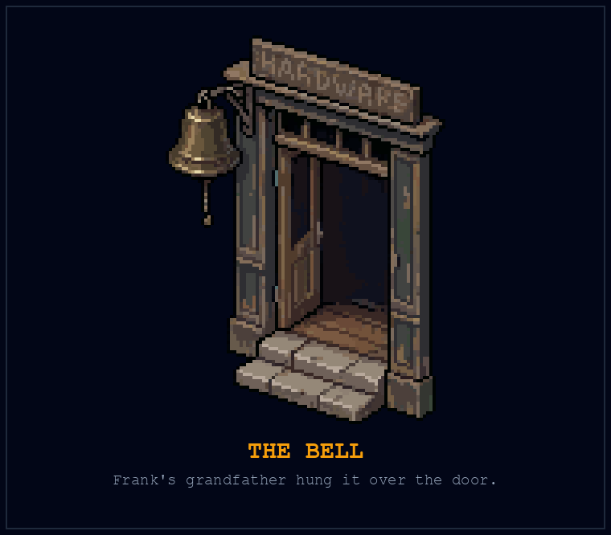
Denny asked Frank whether he wanted to tell the story on the channel. They recorded it behind the new counter, with the bell above the frame and the figures Frank had agreed to share laid out between them. Afterward Elijah put the chart he’d sat on for nine months beside the broken weld coupon on his shelf. He didn’t throw either away.
The Foundations
What the efficiency was for
In Frank’s case, the platform’s decisions made sense on a ledger that didn’t need his store to survive. The people losing a convenient counter, a repair, or a livelihood appeared somewhere else. That is the question worth asking whenever a process becomes more efficient: whose account shows the gain, and whose life absorbs the loss?
The machine didn’t decide that Frank’s customers were expendable. People chose the terms of supply. Better logistics could also have been directed toward keeping a small community served. That choice would have needed resources and a reason to value the service. Calling the closure inevitable would hide the decision that mattered.
The co-op couldn’t restore everything Frank lost. It could recognize useful stock and knowledge, offer fair terms, and make room. A food baseline would add something different: Frank’s ability to eat would remain secure even if nobody could offer him another job. We should want both a chance to contribute and protection when that chance isn’t available.
Shorter loops, visible dependencies
A local supplier can make a repair easier. A regional grower can make a food partnership more direct. Neither relationship makes the community independent of everything outside it. Replacement parts, seed, transport, fuel, expertise, and finance may still come from elsewhere.
Resilience means identifying what continues to work during a particular disruption, for how long, and with what support. It doesn’t mean declaring every outside connection a weakness. Several different connections can be exactly what prevents one failure from becoming a crisis.
Follow the missing meal
Follow the food a household can actually obtain: what is available, how it reaches them, whether they can use it, and what changes during an interruption. A full warehouse they cannot reach doesn’t answer the question. Neither does a reassuring inventory total if the delivery has stopped.
Choose a real dependency with the people who operate the service. What happens if a vehicle is unavailable, a grower loses a crop, or a collection site closes? Name an alternative and confirm that it can help. Writing a second provider’s name in a spreadsheet doesn’t reserve its capacity.
A food baseline needs this kind of continuity. If the machine is down on Tuesday, the person still needs Tuesday’s dinner. Maintain a way to provide it while repairs happen, and be honest about the coverage you have actually arranged.
Tools for coordination
Use communication suited to the message. A compact request or status update is a different requirement from a video, a reference library, or ordinary voice service. Check each function under the conditions where people will use it. A diagram with one elegant line between every house may conceal several different communication jobs.
Existing phones, printed lists, and face-to-face arrangements can be part of the system. People outside a custom network still count. If joining the food service requires buying a radio, the access design needs another look.
The same discipline applies to logistics software. A route that is short on a map may not work for a driver or a recipient. Verify constraints with the people involved. Let the computer suggest; let reality correct.
Give people time to choose
Frank’s complaint about the withheld chart is exact: he wanted to choose some things instead of hoping them. Security serves that purpose too. It gives someone more time to judge an offer, learn a different task, or mourn a place without every decision being made under immediate threat.
A company can have reserves, several lines of business, and people paid to study a transition. A worker may have a final paycheck and next month’s rent. Telling both to adapt as if they have the same options misses the work society has to do.
For the immediate food service, map one route from supplier to recipient. Find the point where an interruption would leave someone without a usable alternative. Ask the partners what a realistic backup requires, including who pays for keeping it available. A backup that exists only when someone happens to have spare time isn’t the same promise as a funded service.
Then make the unresolved part visible to the people with the power to help resolve it. Local work can reveal what larger provision is needed. It shouldn’t become a polite way of telling a neighborhood to absorb every failure on its own.
Precedent P-17: The Company Under Pressure (1975 to 2013)
Kodak developed digital-camera technology and sold digital products, yet technical participation did not prevent financial crisis. Its own milestones record emergence from Chapter 11 in 2013. The company continued after a substantial restructuring. Kodak, Milestones
The earliest device makes the distinction tangible. In December 1975, Kodak engineer Steven Sasson made a black-and-white digital photograph using a system assembled from existing technologies. Its hundred-by-hundred-pixel image took twenty-three seconds to record on a small magnetic cassette. Reading it for display on a television took another twenty-three seconds. A working demonstration existed inside Kodak decades before its bankruptcy. It was also a slow, limited prototype, requiring further development before ordinary consumers could use such a system conveniently. Swiss Camera Museum, 1975: The Invention
The distance from that cassette to the company’s later troubles was not empty. Kodak’s timeline records shipment of its hundred millionth digital still camera in 2011. It also records the subsequent withdrawal from digital capture, asset sales, and the sale of consumer imaging patents during reorganization. These are a company’s selected milestones, not a complete explanation of its finances. They are enough to disprove the simpler tale that Kodak merely refused to make digital cameras. Kodak, Milestones
The useful question is harder than whether its leaders had heard of digital photography. What changes when customers buy a different product, revenue moves elsewhere, and an established organization has to support the transition? Recognizing a technology, offering it, and sustaining a business through it are distinct accomplishments.
Sears, Blockbuster, and Borders often join Kodak in the same cautionary list. The names don’t become one causal history by sharing a paragraph. For a worker, the immediate lesson is that even a company visibly investing in new technology cannot promise that every existing job will survive. Security needs a foundation beyond that promise.
The mechanism. Technical awareness, investment, business structure, and financial survival are separate facts. Adoption does not guarantee success, and bankruptcy does not necessarily mean disappearance.
The rule. Verify what a company actually did before using it as a warning.
The practice.
- Check an original corporate or archival source for one familiar story.
- Separate the technology decision from the financial outcome.
- Rewrite your lesson to fit the narrower record.
Precedent P-18: The Mirror Twin (Tokyo, 2000s)
Fujifilm applied capabilities associated with its photographic business to other fields as demand for film changed. The instructive move was to ask what the company knew how to do beneath the name of the product it sold. Capabilities could have uses beyond photographic film.
Its corporate history dates the peak of demand for photographic film to 2000 and describes the 2004 VISION75 plan as an effort to identify other uses for accumulated technology. There was already more to the company than film. In 2001, it increased its holding in Fuji Xerox from half to three-quarters, consolidating an established office-equipment business. Reinvention began with assets, relationships, and several lines of activity already in place. Fujifilm, Corporate History
One visible result was the ASTALIFT skincare line, launched in 2007. The company’s account connects its cosmetics work to knowledge developed for photographic materials, including collagen and methods for handling very small particles. The connection is more precise than a film company deciding to become something fashionable: particular knowledge was applied to a different product. The launch establishes a commercial application, not proof of every claim made for the products. Fujifilm, ASTALIFT History
That is a useful question for a repair shop, a cooperative, or a worker too. Frank’s knowledge didn’t vanish when his store closed. But recognizing a transferable skill and finding a supported way to use it are different steps. The comparison becomes cruel when we offer a corporation’s reinvention as advice while withholding the resources that made a transition possible. A person deserves somewhere secure to stand while the next use is found.
The mechanism. Existing capabilities may find new applications, but firms facing similar shocks can have different assets and constraints. Comparison is not a controlled experiment.
The rule. Look for transferable skills without promising effortless reinvention.
The practice.
- List a skill you can demonstrate.
- Ask someone in another field where it would be useful.
- Test one small application before committing to a costly pivot.
The Power of Reclaiming Soil

“The nation that destroys its soil destroys itself.”
Franklin D. Roosevelt, letter to all state governors (1937)
In this chapter:
- Soil care gives the food promise somewhere living to stand.
- A measurement is useful when it observes the question we need answered.
- Restoration means protecting the people who depend on the ground.
The trial beds went in beside the co-op’s established garden, on ground Priya had assessed with the appropriate site checks. The old equipment parking area behind the shed stayed outside the food plot. At one end a dark stain marked a question they weren’t going to answer by planting vegetables and hoping.
“We can ask for help with that ground too,” she said. “But the people eating this can’t be the experiment.”
That spring she set up a small soil-monitoring trial, comparing beds with different irrigation schedules. Elijah instrumented them with probes from the greenhouse-controller stock and a dashboard that made the rows look orderly from anywhere he stood. He liked that part. Priya asked for the readings weekly. She never once asked him to mistake the diagram for the ground.
In August he brought her his conclusion, and he brought it gently, because he liked her and believed he was about to cost her something. The dashboard showed the two sets of beds tracking together on moisture, week after week, although the controller had delivered different amounts of water. “I can’t find a difference,” he said. “I’m sorry. The schedule doesn’t seem to matter.”
Priya looked at his printout the way Marta had once looked at his renders. Then she handed him the shovel.
August, mid-afternoon, no shade worth the name. She had him dig two pits, one in a control bed, one in a comparison bed, square-sided, knee deep, and she made him do it slowly, a spade-width at a time, and tell her what his arms felt. The control bed was honest about itself: four inches of nice crumb where the mulch had rotted in, then dust, then at ten inches the old pan, pale as concrete, roots turning sideways along the top of it like water hitting glass. The comparison bed broke differently. The fork went in with his boot weight instead of his whole body. Dark crumb continued past the depth where the other pit had gone to dust. At two spade-depths the soil was cool, and held its shape when he squeezed it and broke cleanly when he poked it, and it was full of channels, worm-bore and root-bore, going down. Roots at thirty centimeters, white and branching. A worm, indignant, at thirty-five.
“Now,” Priya said, sitting on the bed edge like it was a lab bench, “tell me where your probe lives.”
He had placed his probes near the surface. The dashboard faithfully displayed the readings, and he had quietly promoted them into a verdict about everything underneath. Down in the pits the beds differed where the roots were growing. His map had been measuring the weather of the crust and calling it the climate of the planet. He didn’t yet know how much of the difference came from the schedules, the ground they had started with, or something else they hadn’t recorded.
“Your sensor lives at one centimeter,” Priya said, not unkindly. “The root’s down there. You instrumented the part that’s easiest to reach and assumed the rest agreed with it.” She nodded at the pit. “I’ve watched budgets do that too. Fund the measurement that’s easy to report, then call it the thing you meant to protect.”
He sat in the dirt with his ruined conclusion and started laughing, because he had been here before. The vise, the shovel: the co-op kept administering the same exam and he kept being surprised by the questions. Since the month a $211 power bill had rearranged his life, he had trusted meters over feelings, and the trust had mostly paid. Here was the lesson under that lesson, the one the Kill-A-Watt had never needed to teach because a wall socket is shallow: a meter tells the truth only about the exact place it lives. Instrument the wrong stratum and you don’t get noise, you get confident fiction.
They moved to measurements at three depths, five, fifteen, thirty centimeters, and checked the readings against independent samples. Priya also kept him digging monthly, pit and squeeze and smell, “so you keep looking at the thing itself.” The shovel supplied observations, not a numerical calibration.
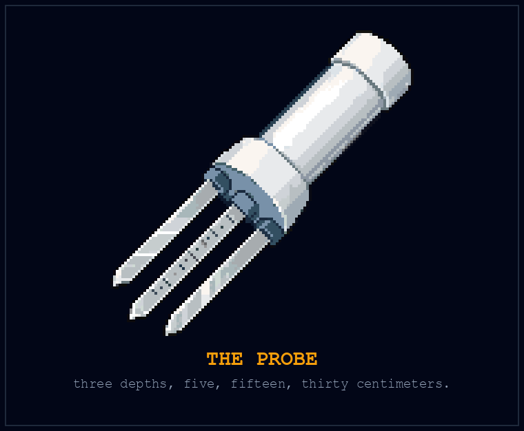
The new readings showed that the surface and the deeper soil had been telling different stories. They didn’t settle why the beds differed. The irrigation had not been equal, the baseline was incomplete, and a better instrument could not repair the experiment backward in time.
Priya crossed out his first conclusion and wrote a smaller one: THE SENSOR MISSED THE ROOT ZONE. Underneath it she added: RUN THE COMPARISON AGAIN.
What she got from him was the part that traveled. The graph went to the corkboard next to the repair emails, with the limits written beside it, and then into the library with the controller records. What he got from her was a habit he kept: whatever the dashboard said, go back outside with someone who knew what to look for. By October he was beginning to notice texture, roots, and the way a handful held together, badly, the way you read a second language you learned as an adult. Priya would watch him squeeze a sample, then ask what he thought it could tell him. She still made him say what it couldn’t.
The notebook got its line that fall, under the arithmetic, where the important numbers live: DEPTH OF SENSOR: 1 cm. DEPTH OF ROOT: 30. Write your models accordingly.
The Foundations
What we want the ground to do
The food promise reaches down into something older than any machine in the book. A crop needs suitable growing conditions. People need to know that the place and methods used to produce their food are appropriate. Neither need disappears because a dashboard looks orderly.
Good tools can make observation easier and take some repetitive work off a grower’s hands. The point is to extend what people can understand and care for. Elijah’s mistake was to let the convenient measurement replace the question. He wanted to know about the roots; he had evidence about the surface.
That distinction travels beyond a garden. Counting a robot’s movements doesn’t tell us how much useful food arrived. Counting boxes doesn’t tell us whether a person could eat their contents. A number becomes useful when we can explain its connection to the thing we care about.
The fictional trial shows a mistaken measurement, not a successful soil treatment. Actual growing decisions need evidence appropriate to the site, crop, and intended use. Site history matters too. A healthy-looking plant cannot establish that an unknown plot is suitable for food. EPA’s urban-agriculture guidance is a starting point for understanding potentially contaminated sites and the assessments they require. EPA, Urban Agriculture
Caring for the capacity to grow
Soil contains organisms with different roles. Rhizobial nitrogen fixation and mycorrhizal relationships are not interchangeable names for a single process. Nutrient cycling also doesn’t make harvested nutrients cease to leave a site. A food system needs to account for what is removed and how it is replaced. University of Minnesota Extension, Soil Biology
A grower makes choices about water, soil, crops, labor, and the next season. Ask what those choices are meant to accomplish, what evidence informs them, and what would change the method. Neither the word natural nor the presence of a sensor settles performance or safety. A useful machine should help the grower answer a real question or carry out a justified task.
Our ambition should include repairing damaged land as well as producing food on suitable land. Contamination and ecological damage are work to address, not a landscape to abandon to whoever has the least money to leave. Robots might help specialists investigate or carry out parts of that work. Their value would depend on what they could reliably do and whether the intervention improved the site without spreading the problem.
Restoration needs a standard of success appropriate to the harm. Removing visible debris, reducing a measured pollutant, and making a place suitable for food are different achievements. A society serious about clean food would fund the necessary expertise and follow-up, alongside the attractive machine. Otherwise we have automated the photograph and left the damage in the ground.
From a growing plot to useful food
Return to the Chapter 9 trial. The garden records the crop and usable harvest. A food partner handles the next steps. The record includes what was lost, what reached people, and what remained necessary from other sources.
The automation question belongs inside that record. Did the equipment reduce repetitive work? Did it need more intervention than expected? Did the time saved become something people actually valued? A graph of valve activations can’t answer those questions by itself.
A complete food baseline is larger than a vegetable plot. It has to meet people’s actual dietary needs and keep working across seasons and interruptions. A useful garden can contribute without being described as total self-sufficiency.
Learn with someone who knows the ground
This week’s task is to visit or speak with an established growing project, with permission. Ask which observation changed its operator’s mind recently. What did they think was happening? What did they check? What did they change?
If they welcome assistance, help record that lesson accurately. Don’t arrive with a recipe and assume the local experience is merely waiting for your instructions. A tool can extend someone’s ability to observe; listening is how you discover where that extension would help.
Precedent P-19: Organizing the Harvest (United States, 1943 to 1944)
During the Second World War, Victory Gardens made household and community growing part of a broader food effort in the United States. A patch of ground became part of a common undertaking: people grew food alongside the farms and distribution systems on which they still depended.
The USDA’s 1943 program asked organizers to think about the bus route. A person without a suitable yard needed a community plot they could reach by streetcar, bus, or bicycle. Somebody had to obtain permission to use the land, prepare it, assign plots, arrange water, and make tools and instruction available. The document advised involving the county agricultural agent or experienced gardeners in judging whether the ground was suitable. A vacant lot was an opportunity to investigate, not automatically a farm.
The harvest needed its own arrangements. School gardens required care during the summer, when school was out; the program called for hired help under supervision, followed by harvesting and processing for school lunches. Shortages of pressure-canning equipment prompted proposals for shared preservation facilities. The plan reached from the plot to the pantry. Its authors understood that a vegetable left to spoil wasn’t a contribution to the food supply. These were planning instructions, not proof that every community carried them out. USDA, The 1943 Victory Garden Program
There is another part of this history that the cheerful poster cannot carry. Japanese Americans grew Victory Gardens inside the camps where their own government incarcerated them. The National Park Service records residential gardens, distinct from camp production farms, that supplied fresh produce and allowed people to grow familiar foods. Some gardeners had brought seeds; others obtained them by mail. Their skill improved life under conditions they had not freely chosen. Participation in a national food campaign did not mean equal standing within the nation. National Park Service, Victory Gardens on the World War II Home Front
Both parts belong in the precedent. Public coordination can make a useful undertaking possible, and the authority doing the coordinating can deny people’s freedom. A harvest total won’t tell you whether the people producing it were free. For the food-first project, ask who gets the plot, who carries the work, and who receives food without having to cultivate a plot at all. Machines could reduce some of that work. They cannot make the distribution of rights a question we no longer need to answer.
The useful precedent is organized participation. Growing required access to ground, knowledge, supplies, and coordination. The harvest contributed vegetables; it didn’t turn each household into a complete food system. A shared purpose could mobilize many modest plots without asking any one of them to carry the entire diet. That is a better starting point for neighborhood automation than the promise of perfect self-sufficiency.
The mechanism. Food production can expand through coordinated participation. Inputs, skills, institutions, and the kind of food counted matter to the result.
The rule. A vegetable harvest is a contribution, not a complete diet.
The practice.
- Ask an existing garden how it measures usable output.
- Follow one harvest through handling and distribution.
- Record the food needs that harvest does not meet.
Digital Leverage and Media Autonomy
In this chapter:
- A useful record can help without becoming a media business.
- Consent and privacy belong in the publishing process.
- Availability and income are not guaranteed by a platform or a file format.
The video that did it was the first fire.
Denny had filmed the shouse build the previous summer and fall, the way he documented everything by then: hands in frame, the county audible in his vowels. Now, a year after the first fire, he went back through the footage and made a four-minute account of the work. The cut, the columns, Marta’s bead going down the header seam like a zipper closing, the assessed stove with its replacement firebrick, and at the end, the draw catching on the first match and the co-op standing around in the new warm doing nothing historic whatsoever. He ended it the way he had ended the first video, on the same porch of words, because Denny knew a load-bearing sentence when he’d built one: “Come see it. Bring your kid.”
It posted on a Thursday night. Elijah did the pipes and went to bed.
A week later he was up before light, and he walked to the shed through the first hard frost of the year with coffee, to check the overnight telemetry the way other generations of men had walked out to check stock. The mesh was green. The greenhouse was green. The channel graph was a wall.
He’d seen spikes; the leak postmortem had been a spike. This rise had held for several days, and people arriving for the first fire were opening the older records too: the greenhouse controllers, Frank’s move, the sensor mistake. He wanted to draw a curve through it and extend the line. Instead he opened the inbox. He read it standing up, coffee going cold.
A grange association in Idaho: how do we start. A parish council in Louisiana, two months out from the last flood, asking who could help assess its growing site. A machinist in Ohio with his father’s shop and no work in it, asking for the controller records. A tribal housing authority. A retired county engineer. A woman in Maine who had, she wrote, four acres, a dead barn, and eleven neighbors who show up. Eleven towns by the time the sun was fully up, spread across nine states, every one of them asking some version of the same four words: how do we start.
He rang no bells. He put it all on the big screen at Friday dinner and let the room read.
Curtis got to the fence first, because Curtis always did, except the fence had changed shape over nearly two years like everything else about Curtis: “That’s a product,” he said. “That inbox is a business. Course packs, plans, consulting. People pay real money for half of what we know.” He wasn’t wrong, and nobody said he was, and for a minute the old grammar hung over the table, the Claypot grammar, and Elijah felt it reach for him like a current he knew by name: scale it, platform it, first-mover. When he first arrived he’d have already had the deck built.
It was Frank Kowalski who took it apart, from the end of the table, in the tone of a man doing inventory. “I spent thirty years selling parts for two dollars over what the internet charged,” Frank said. “Know what I was actually selling? Somebody who knows which part. You can’t download me. Him neither.” A thumb at Denny. “Fence the files and you’re selling paper. Ship the files free and every one of those eleven towns needs a Frank and a Marta and a Priya of their own anyway, and they’ll find them locally, because that part doesn’t ship.” He folded his glasses. “The store taught me that. Late.”
“We can let someone read the mistake without buying the whole project,” Elijah said. “That would have saved me some money.”
Marta was quiet until the end, which is how the co-op knew where the decision would land. “I told this one his first day,” she said, nodding at Elijah, “that nineteen households who know whose kid is whose don’t scale, and that’s the load-bearing wall, and I meant it, and it’s still true.” She looked at the wall of numbers. “The wall doesn’t scale. The blueprints of the wall scale fine. Ship them.”
So they prepared a release that weekend, and preparing it took longer than uploading it. The controller files came with the repair card and a record of the conditions they had actually tested. Priya sent the sensor notes, including the comparison they still needed to repeat. Marta marked the building drawings as records of their particular project, not instructions for any site. Reuben replaced the grand legal title with questions another community would need to answer for itself. Different files needed different permissions; he checked that the co-op had the right to share each one.
Elijah put the leak postmortem beside the successes. Denny asked the people visible in the footage which parts they wanted kept out. The first folder was smaller than the one they’d imagined, and more useful for it.
Monday morning Elijah stood in the shed at dawn again with the coffee, watching the library’s download counter climb through four digits, people he would never meet retrieving work that had taken the co-op its mistakes to earn. Out of habit his hands started drafting the status report. This time he knew who needed it: Denny, who owned the channel; the members who paid for hosting; the people answering requests. He added a line for unanswered messages and another for the next month’s costs. The platform still set its own terms. The co-op kept separate copies and a public index it could move.
An email from the machinist in Ohio came in while he worked. One connector label in the controller record was wrong. Elijah opened the drawing, found the error, and thanked him by name.
At Friday dinner, Denny read that message before he read the view count.
The Foundations
Let the useful thing travel
A small community cannot do all the work of feeding humanity. It can discover something useful and make it easier for another community to learn. A repair that once took a week might take the next person an afternoon because somebody left an honest record. A failed trial can keep the next group from spending its scarce money on the same mistake.
That is part of the hopeful answer to scale. People and places differ; the knowledge they exchange needn’t be locked inside the original group. Share the conditions along with the result so someone can judge what carries over. The controller records are useful precisely because they say what was tested and what still failed.
Denny’s audience is a fictional success, not a forecast of income. Most useful sharing is quieter. A phone call between two kitchens, a correction to a pickup notice, or a drawing another repairer can understand may matter without ever becoming popular.
For the food-first project, publish something another person can evaluate: the task, the conditions, the result, the cost you counted, and the limitation you found. A photograph can show what the plants looked like. A harvest record can show what was collected. A recipient can tell you whether the food was useful. Put those different kinds of evidence beside each other rather than making one carry all three claims.
People before the story
Ask permission before publishing someone’s image, circumstances, address, or request for help. Consent to receive food isn’t consent to become content. Give people a route to participate without appearing in the documentation.
Removing file metadata can reduce one kind of exposure. It doesn’t remove a street sign in the photograph or stop a caption from identifying someone. Review the actual exported material, including what is visible and what your words reveal.
A local copy, a content address, and encryption do different jobs. Availability depends on someone keeping and serving the data. A content identifier doesn’t promise perpetual hosting. Physical transfer avoids some network exposure but doesn’t make a file immune to loss, damage, or unauthorized copying.
Share the useful part
Make one short record with an existing partner. Keep private operational information separate from the public account. Let the partner check that you represented the result fairly before sharing it.
For permissions, choose terms that match the actual material and the rights you hold. Software, photographs, designs, and prose can have different needs. Explain what someone may reuse, where the current version lives, and how to report a mistake. A generous intention becomes useful when the next person can understand what it allows.
The most useful sentence in a project report may be the one saying why you stopped. A failed attempt with clear conditions can save someone else time and money. You don’t need to disguise it as a victory for the record to travel.
Who gets to speak
A service can collect excellent operating data and still tell a self-congratulatory story. The organizer reports meals distributed; someone receiving them reports that pickup happens during their shift. Both statements can be true. If only the first reaches the public account, the project has made its own reputation easier to protect than its recipients.
Give people a way to correct the story without risking assistance. Publish changes prompted by criticism. Tell readers which improvements have reached the people served and which remain plans. The author of this book owes you the same discipline: enthusiasm is a reason to look harder at whether a promise holds.
We can want the machines to help and still report a machine’s failure plainly. An ambition that can survive correction is more useful than an image that must never crack.
This week’s handoff
Offer a food group a simple choice: would a corrected public schedule, a translation checked by a competent speaker, a clear explanation of how to request help, or a short account of one repair be useful? Let them choose, including the answer none of those.
Finish the chosen item and confirm who will keep it current. A page nobody maintains becomes another obstacle. The point is to leave the next person with less confusion than you found.
Precedent P-20: An Argument in Circulation (Philadelphia and London, 1776)
Thomas Paine’s Common Sense helped make an argument for independence accessible to readers in 1776. It put a consequential political choice into language people could carry into conversation. Printers, readers, and organizers carried it into an existing conflict.
The physical object mattered. The first Philadelphia edition came from Robert Bell’s press in January 1776 without Paine’s name on it. It was sold in a paper wrapper for two shillings. That put the argument into a form a purchaser could carry away, but publication was still somebody’s business, with a price, a press, and control over the next printing. Clements Library, Going Viral in 1776
The alliance between author and printer did not last. Paine intended his share of the profits to buy winter clothing for the Continental army; Bell maintained that the first printing had produced no profit. Paine then authorized William and Thomas Bradford to publish an enlarged edition. The dispute over an argument about political authority also involved the much smaller authority to decide which version would be printed and who would account for its earnings. University of Minnesota, Common Sense exhibition record
Crossing the Atlantic introduced another filter. Some London editions omitted passages about the king. In the Clements Library’s copy of John Almon’s 1776 edition, gaps were filled in by hand. The paper preserves that intervention: the printed text and the writing added to it do not say quite the same thing. Wider circulation did not guarantee an unchanged message. Someone handling a copy could also resist what its printed version had left out. Clements Library, the London edition
This is a more useful history of media power than the picture of one brave writer speaking directly to an entire country. Paine could frame the case. Printers could reproduce, revise, or restrict what reached readers. Readers could question the text and intervene in it. Those powers were connected, and they were not identical.
A public record of a food project faces different institutions and much smaller stakes than a revolution. It still needs a legible account of who wrote it, which version is current, what was changed, and how a correction can reach the next reader. The wrong connector label in the co-op’s record belongs to that ordinary responsibility. Making knowledge travel includes making its corrections travel.
A pamphlet could be passed to someone who had not attended the author’s meeting. It could be argued with in another town. That is the useful mechanism: clear words let more people participate in examining a proposal. Distribution widened the discussion; it did not make the author the sole cause of what followed. For our purposes, the test is whether someone can understand the promise, question its terms, and help improve it.
The mechanism. Accessible language and distribution can help an argument travel. Political change also depends on organizing, circumstances, and other people.
The rule. Give people something clear enough to discuss and verify.
The practice.
- Write a short account of one useful result.
- Ask a reader to explain it back and identify a weakness.
- Revise before sharing more widely, with appropriate consent.
Tools of the Trade
In this chapter:
- Choose tools by the task and the support available.
- Food, cleanup, shelter, and care give technical ambition a human purpose.
- Compare whole outcomes, including maintenance and remaining human work.
The first hard storm of the winter came up the valley on a Friday afternoon with the barometer falling like a dropped tool, and by dark the hillside windows were going out between one gust and the next. Cell service failed later. At the co-op the backup supplies kept essential equipment running, while the shop put off the jobs that could wait. Somebody brought the printed contact list to the table. Somebody else started the soup.
The mesh held at first. That’s the sentence Elijah had been building toward for a year, the LoRa network they had installed for compact messages, node by node across the ridgelines. The map stayed lit, house to house. The greenhouse alarms reported. The system he’d been laying into walls and fence posts kept sending the small packets they had tested it to carry.
Except node 7.
Node 7 was the ridge repeater, the high hop that stitched the north houses into everyone else, and node 7 was his, personally, in every sense that stung: his design, his install, and, the previous Sunday, his firmware flash, done alone, in a hurry, ahead of the weather, without a second set of eyes, because it was “just a repeater” and the checklist law was for things that touched the open internet, and he had let himself believe that discipline was a perimeter instead of a practice. The storm found the ridge at eight o’clock. At 8:04 the map showed a hole where the north houses used to be.
He reached for his coat. Marta put a hand on the pack before he could lift it.
“Not in this weather. The north houses have the backup check-in. Confirm it. Then sit down.”
So he sat at the shop table and did the less heroic work. The households checked in through their separate voice-radio arrangement, while the LoRa network carried what status messages it could around the failed ridge. Priya’s greenhouse alarm reached the shop by the southern route. People answered. Nobody needed him on a slippery trail to make the evening less frightening.
By Saturday afternoon the weather had cleared enough for a paired visit. He and Curtis took the known-good firmware, the equipment records, and the repair kit. Marta stayed at the shop on the voice radio. At the enclosure they found that a restart had left the node unable to load its configuration. The image Elijah had installed wasn’t the one recorded for that board. He had checked that the upload completed. He hadn’t checked a restart.
They restored the known-good version and tested the node through a full power cycle before closing the enclosure. Priya confirmed receipt of its status packet at the shop. Curtis watched Elijah write down exactly which check he had skipped. He didn’t add anything. There was nothing to add.
They came down. There was soup. And the checklist got its amendment that Sunday, in Reuben’s careful language: changes to equipment people depended on needed another person to review the work and a recorded recovery check. The boundary was the consequence of a failure, not whether a cable reached the internet.
The county’s power came back Tuesday. The co-op noticed. There were supplies to replenish, a postponed delivery to complete, and a repair to pay for. At dinner they wrote down what had held and what had needed people. Curtis asked for a copy of the list. Then he asked who still needed soup taken over.
The Foundations
Give the machines a worthwhile assignment
Imagine the priorities written above the workbench: feed people, restore damaged places, make safe homes, relieve suffering. Those are assignments worthy of a powerful technology. They are also a way to judge the uses of it that actually receive our money and attention.
Food comes first in this book because nobody needs an elaborate explanation of why dinner matters. The wider ambition includes land care, waste cleanup, housing, and health. These projects can proceed together. Somebody who needs treatment or shelter should not have to wait for the last food problem on Earth to be solved.
The question for any proposed machine is what useful work it can do under the conditions where people need it. Compare the tools they can obtain and support. A machine impressive in a video may be hard to repair locally. A familiar tool may do the job well. Shared access can matter more than ownership.
Food: count the whole job
Begin with the chain in Chapter 9. Identify the repetitive task, the present method, and the result at the recipient’s end. Include setup, supervision, maintenance, transport, and the work still performed by people. Don’t turn a reduction in one motion into a claim that a whole occupation has disappeared.
Equipment also needs dependable inputs. Include its power supply, replacement parts, operator time, and maintenance in the comparison. A custom power system is its own engineering project, with its own costs and responsibilities. You can contribute to a food service without building one.
Likewise, communication equipment should fit the service. The co-op used separate arrangements for compact data and voice, and still needed people to confirm that households were all right. A message received is a useful event. It isn’t the whole of being cared for.
Cleanup: from litter to its destination
Consider a small ordinary-litter project, undertaken with permission at a suitable site. Locate the litter, collect what the established service can accept, transfer it into that service’s disposal stream, and check the place afterward. That complete route matters. Moving waste out of the photograph and into someone else’s surroundings is not success.
A future cleanup robot could perform part of that chain. To test whether it helps, compare the whole arrangement with an existing crew, better bins, or a simpler capture method. Count maintenance and recovery of the machine. Check whether less waste remains overall, not only how much the device reports picking up.
“Won’t people just litter more?” They might change their behavior. They might also take better care of a cleaner place. Neither possibility is a measured result. Include prevention, accessible disposal, and repeat observation in the arrangement rather than treating abandoned trash as a lesson people need to endure.
EPA describes intentional and unintentional pathways by which trash reaches water. Wind, runoff, and losses during handling mean that a piece of litter alone doesn’t identify a deliberate offender. Accountability should concern what actually happened. EPA, Learn About Aquatic Trash
Toxic waste is a larger and more demanding assignment. The ambition to use machines for it is worth keeping: take dangerous work off people’s bodies and repair places people have been left to live beside. But a robot’s ability to pick something up is only one part of that job. Identifying the material, containing it, treating or disposing of it, and establishing what remains are responsibilities for an appropriately equipped and qualified project. Unknown material should go through that route, not become a neighborhood experiment.
We should ask whether the technology makes the whole operation safer and more effective, including for the workers doing the remaining tasks. We should also ask why the damage was allowed to remain and who is responsible for correcting it. A cleanup machine should add capacity to that obligation, not give someone an excuse to keep making the mess.
The dependency and jobs questions are addressed in Chapter 11. They belong in evaluation here too. A worker whose exposure is reduced should share in the gain; a community should be able to inspect whether the place is actually improved.
Recovery is a different task
Collecting a bottle is not the same as converting its material into a dependable replacement part. Recycling and waste-to-resource experiments have their own inputs, losses, and limits. An attractive loop drawn on a page doesn’t establish a closed material balance.
Keep ordinary cleanup useful on its own. The place can be cleaner even if you haven’t built a recycling plant. A repair shop can help people even if it still orders parts from distant manufacturers.
Help that reaches a body
Health belongs in the same larger ambition. We want less pain, earlier help, better treatment, and more room to live. A machine that advances a laboratory task, a tool that assists a clinician, and an aid that helps someone move through a day are different possibilities. Each needs evidence about the benefit it claims. An encouraging research result isn’t yet a treatment someone can depend on.
The access question remains after the technical achievement. If useful care exists but a person can’t obtain it, the work of making that advance serve humanity is unfinished. A person should not have to wish the invention had never happened because they fear what its business model will do to them.
This is what I want optimism to demand of us. Use capability to relieve the burdens people already carry. Evaluate the machine honestly. Arrange access deliberately. Keep people able to question what is being done to them and for them. A society can choose those purposes, then do the practical work required to make them real.
This week, inventory tools with the people doing one existing food or cleanup task. Record what is available, who can use it, what requires training, and who maintains it. The tool library starts with accurate information, not a shopping spree.
Precedent P-21: Access to Tools (Menlo Park, 1968)
In 1968 Stewart Brand put NASA’s photograph of the whole Earth on a big black paperback cover and printed three words under the title: Access to Tools.
The Whole Earth Catalog listed books on dome construction, organic gardening, beekeeping, and cybernetics, along with tool suppliers and a desktop calculator, anything that helped an individual, in Brand’s words, conduct his own education, find his own inspiration, and shape his own environment. Its entries directed readers to sources through reviews and ordering information, what its own statement of purpose called an evaluation and access device. It refused to separate the homestead from the computer; its readership connected strands of back-to-the-land culture and personal computing without being the sole source of either. Steve Jobs, closing his 2005 Stanford commencement address, described it as “sort of like Google in paperback form, 35 years before Google came along,” and gave the graduating class its sign-off as his own final advice: stay hungry, stay foolish.
The original selection rules were more demanding than a list of things the editor liked. An entry had to be useful, support learning, offer quality or low cost, bring information that wasn’t already common knowledge, and be obtainable by mail. The statement of function also promised revision from the experience of users and staff. Put those requirements together and you have the outline of a continuing job: select, explain, locate, then listen when the recommendation meets somebody else’s circumstances. Whole Earth Catalog, 1968 purpose and function pages
The project had a physical shop as well as a printed network. Before the catalog, Brand and Lois Jennings took books and goods to communes in a truck. The Menlo Park office later shared a storefront with the Truck Store, which sold some of the listed material. Publishing and selling were related activities, not an escape from all commerce. Supplements carried responses to earlier issues, suggestions for other tools, and notices from readers. The people using the information could become sources of the next edition. Museum of Modern Art, Access to Tools
There was power in that editorial desk. A recommendation could bring a distant supplier into somebody’s practical world. An omission could leave another possibility unseen. Publishing criteria and receiving feedback made those choices more available for argument; it didn’t turn the catalog into a neutral view of every useful thing.
The later anniversary reprint makes the maintenance problem wonderfully plain. Its editors warned that the old addresses and ordering information should not be treated as current. They marked items still available, proposed replacements, and distinguished things that had disappeared. Time had altered the access half of Access to Tools, even where the idea remained useful. The reprint’s warning is later commentary, not part of the 1968 promise. Annotated reprint, using the 1968 catalog
That distinction belongs on our workbench. A record of a useful machine is a beginning. Someone still needs a reachable supplier, the means to obtain it, and help when it breaks. The catalog widened the reader’s choices. A universal food service has a further obligation to the person who cannot buy the recommended tool, or spend the afternoon learning to use it.
The mechanism. Curation can make tools and knowledge easier to find. Access also involves cost, skills, maintenance, and whether a tool fits the task.
The rule. Build a useful toolset, not a collection of promises.
The practice.
- Inventory what your group already has.
- Identify one missing function rather than a fashionable product.
- Find who can teach and maintain the proposed tool.
The Roadmap and the Premortem Pivot
“Plans are worthless, but planning is everything.”
Dwight D. Eisenhower, recalling an Army saying in remarks to the National Defense Executive Reserve Conference (1957)
In this chapter:
- The room can identify what the model missed.
- Every promised service needs a response when a dependency fails.
- A pilot and a dependable baseline are different commitments.
The co-op’s annual meeting happened in the shouse, because the shouse had the woodstove and the wall screen and, by its second winter, the unofficial status of parliament. Reuben ran the agenda: the year’s numbers, the co-op’s lease payment and the trust’s scheduled payment to Irene Calder, the library’s download counter (fifty-one thousand and climbing, from towns in nine countries now), Frank’s first full year at the tool library, Tyler’s name added to the roster. Then Elijah stood up for the last item, which was his, and which he had been building for a month, and said: “It’s two years from now, and the co-op is dead. I’d like to spend two hours on how it died.”
He had come loaded. Of course he had. The premortem model was the notebook’s whole arithmetic grown up: every stage, every watt, every county filing, run through the Crucible against futures like weather fronts. Supply shocks: modeled. The Memphis platform buying their steel distributor the way it bought Frank’s: modeled, with a second-source list already drafted. Grid failures, fuel spikes, a hostile county supervisor, a change in the property assessment, a landbuyer with better lawyers: modeled, modeled, modeled, modeled. He walked the room through forty minutes of failure modes with the quiet competence of a man who had finally found the exact right size for his gift, and the room took it seriously, and people could trace the calculations and challenge the assumptions.
Then Marta said, “Your machine’s got no column for the stuff that actually kills these things,” and the second half of the meeting began.
“Plants don’t die of the strategy,” she said. “I watched mine die for a year before the spreadsheet showed up; the spreadsheet was the coroner, not the cause. Things die of people, college. Run it again with people in it.” And the room, which had two years of trust banked and a stove between them and the cold, ran it again with people in it, and Elijah wrote down what his model had left out:
Burnout, said Priya, looking at Denny. The channel posts three times a week because one man will not stop, and if that man goes down, the lever goes down with him. Denny started to argue and then didn’t, which everyone understood, including him. The fix got a name that night: Tyler learns the edit, Frank learns the counter-camera, the channel becomes a bench instead of a pillar.
A divorce, said Reuben, flatly, into the quiet. Not naming anyone, not needing to: the household arrangements had changed since the first documents were drafted, and the provisions for a split, he confessed, were still incomplete. He’d have a proposed amendment ready for counsel to review by March. He had, everyone knew, already started.
Founder-dependence, said Frank, who had spent years being the only person who knew where every part was. Every load-bearing thing in the valley ran through the same four people, and the premortem for that was standing in the room wearing all four of their faces.
And then Marta, who had raised the subject of people dying of people, put her cup down and paid the room the compliment of going first. “Shoulder’s done,” she said. “Rotator cuff. Tuesdays haven’t fixed it and won’t. I’ve got maybe two years of overhead welding left, and I’m the only welder we currently have for this structural work.” She looked at Tyler, nineteen years old, three months into the roster, holding his coffee like it might be repossessed. “The training route we found takes four years. If you want it, we can start Monday.”
“That leaves two years we haven’t covered,” Priya said.
Marta nodded. “Then put that on the board too. We need someone qualified to cover the gap. Starting an apprentice doesn’t make one finished.”
Elijah wrote INTERIM WELDING CAPACITY: UNRESOLVED, and left the box open.
The kitchen coordinator had come for the food-delivery item and stayed for the rest. Since the first deliveries, the route had continued through one short funding commitment after another. Now she put a page beside Elijah’s laptop. The route Curtis still drove twice a month had funding through June. Renewal hadn’t been decided. She could show what each delivery cost and which households needed prepared meals. She couldn’t turn a promise of another grant into a paid invoice.
“We could do an appeal on the channel,” Denny said.
“We could,” she said. “But your name is already under burnout.”
He looked at the board, then down at his hands.
Rosa had sent a note through the kitchen because she couldn’t leave work to attend. Her wrist was better. Her hours at the packing warehouse changed from one schedule to the next. The note asked whether the collection time could stay late enough for people on the afternoon shift. At the bottom she’d added: And can you tell us before the week it stops?
Curtis read that line twice. “They shouldn’t have to keep wondering who’s generous this month.”
Reuben drew a second column. The co-op could commit part of the repair budget it had already set aside for the route’s equipment. The kitchen could bring its accounts and service record. Residents could describe what the route made possible and where it failed them. Together they could take a defined proposal to the public meeting where the next food-service allocation would be discussed. None of that guaranteed a vote or supplied an unpaid meal. It gave them a request with costs, responsibilities, and people behind it.
They wrote funded through June in ink. The proposed continuation went underneath in pencil, with a meeting date beside it. Curtis took responsibility for telling the households what had and hadn’t been secured. The coordinator asked for someone besides Curtis to learn the route. Two hands went up.
Elijah went home that night and rebuilt the model. Beside each failure he added who would be affected, who would respond, and what provision actually existed. He kept the household details in the private record. The public proposal would carry the service commitments, the costs, and the gaps.
The notebook had been accumulating for three years: watts, dates, names, the repair he had misunderstood and the meal they had delivered wrong. Now the open boxes mattered as much as the filled ones. He began turning it into the book you are nearly done holding.
They had kept in touch through the months after Devendra’s layoff. This was the first visit he had managed with the children.
The newcomer arrived on the Saturday after the meeting, in a sensible car with two car seats in the back and a face Elijah had last seen lit by a laptop at a Claypot all-hands. Devendra stood in the shed doorway the way Elijah had once stood in it, more than two years and a lifetime ago, looking at the plasma table and the shadow-boarded wall and the whole impossible ordinary fact of the place, and he said, quietly, “I didn’t know what I expected. It’s smaller than the videos.”
“Come in,” Elijah said.
Devendra looked at the broom leaning by the welding curtain, then at the car. “I can help. I just need to figure out the kids.”
“There’s food inside. Bring them in.”
“I don’t want to take anything before I’ve…”
Elijah waited for the sentence to finish. Devendra looked away instead.
From the bench, Curtis called, “Dinner’s dinner.”
Elijah opened the door wider. “If you want to learn the shop, we’ll find you a time. The broom will keep.”
The children came in holding their father’s hands. One stopped to examine a yellow controller box. The other asked where they should put their coats.
The Foundations
What going right would look like
A person loses a job and still eats. A worker finishes a shorter shift without a smaller life waiting at home. A caregiver can accept help without proving they have no other choice. A grower receives fair payment for food that reaches people who cannot pay for it themselves.
That is a future worth doing practical work for. It doesn’t require every machine to become perfect. It requires the failures of a machine, a market, or an employer to stop falling immediately onto a person’s ability to survive.
Food is where this book begins because the promise is both urgent and concrete. We can ask who ate, what they could obtain, and whether the arrangement will hold next week. The larger direction includes safe housing, cleaner surroundings, and care that heals. Each needs its own expertise and evidence. Each can be organized around the same question: do people actually receive the benefit?
The task is larger than nineteen households. The co-op matters because its members learned to improve a plan together and could show the work. Its limits matter because a valley full of successful founders would still leave most of humanity elsewhere.
Build the capacity and the claim together
There are two connected jobs. Improve the ability to provide necessities, and build a dependable claim on that provision. If we do only the first, the result may be impressive machines behind a price somebody cannot pay. If we promise the second without the supplies, labor, and funding, people encounter a right the service cannot honor.
Start by mapping an existing food service with the people using and running it. Find the missing meal, the inaccessible collection point, the repeated handling task, the equipment that spends too long waiting for repair. Establish what would improve the result. The first useful change may involve automation, staffing, purchasing, or access.
Then connect the gain to a commitment. A controller can help a grower; the grower can join a supply agreement; a kitchen can turn supplies into usable meals; a funded service can make those meals available without charging the recipient. Every connection needs an accountable party and resources. Follow them until you reach the person eating.
A tool can save time that becomes higher output, a larger private return, a shorter shift, or a more dependable free service. Its existence doesn’t choose the destination. We do that through the arrangements surrounding it.
A proposal people can decide on
Consider a possible next step beyond the five-household trial. This is an illustrative proposal, not a claim that a program has been funded.
An existing food provider, participating growers, a kitchen, workers, and residents develop a service offer for a defined area. They describe what food will be available, how people can request it without payment, and what will be provided to someone who can’t cook or travel. They include a way to participate without a smartphone or membership in the founders’ group.
The operating plan names the supplies, paid roles, transport, equipment support, and replacement reserve. It counts volunteer time separately and specifies which responsibilities cannot depend on a volunteer happening to be free. Providers are compensated for agreed work. The person receiving food has no work requirement attached to the meal.
They seek a public allocation, a cooperative funding commitment, or another continuing source suited to the place. A public body might operate the service directly or purchase it from several providers. Shared assets might support a cooperative arrangement. Donations could add capacity while being kept distinct from resources needed to meet the central promise. These choices have different costs and power structures; residents and workers need to be able to compare them.
The proposal also says who handles a complaint, how an access decision can be reviewed, what information is collected, and what happens during an interruption. It provides for a person who disagrees with the organizers. Being popular with the provider is not a nutrition requirement.
A decision then has substance. People can support, reject, or amend a named service with a visible cost and a way to examine its performance. This is one route from private optimism to a public commitment. The work doesn’t disappear into the phrase “society should.”
Security during the transition
The person displaced by automation needs provision while the proposed future is being built. A retraining course is useful only within a life that can accommodate its time, cost, and uncertainty. Food, housing, healthcare, transport, and care responsibilities do not pause for a certificate.
That makes worker transitions part of the deployment decision. Ask what happens before replacing a task, not merely after cutting the position. Who will keep income or essential services available? What choices can the affected workers influence? What assistance is funded, and for how long? A business, union, public institution, or cooperative may hold different responsibilities, but someone has to make the commitments real.
Some necessary jobs may become harder to fill when people have better alternatives. That calls for examining pay, conditions, training, equipment, and how much work is actually necessary. Treating hunger as the missing workforce strategy would concede the very problem the book is trying to solve.
Food first is an application priority, not an instruction to leave every other insecurity in place until a global agricultural project is finished. A housing effort or a medical service can move at the same time. The fired cook’s dinner is our first clear test of a much wider intention.
Put the failed meal on the board
Before expanding a service, imagine that next week’s commitment has failed. Work backward with the people who would experience it. Perhaps the crop is unavailable, the driver is ill, the food can’t be used, the system gives a wrong answer, or the operating money has run out. The discussion is valuable because those people know things the model may omit.
Use a short record:
| Question | What to record |
|---|---|
| Who is affected? | The people whose food or work would be disrupted. |
| What would we notice? | An observable warning, including a missing confirmation. |
| Who responds? | A responsible role and a backup who has agreed to act. |
| What happens to the meal? | A confirmed alternative, or a clearly unresolved gap. |
| What supports the promise? | Available supplies, labor, money, and the date that provision ends. |
| When do we review it? | The next decision date and the evidence people need. |
Keep personal information out of public records unless it is necessary and appropriately agreed. Give recipients a way to correct the assumptions about their lives. A delivery logged as complete may still have left somebody with food they couldn’t eat.
Test a response before depending on it. Confirm the alternative supplier’s capacity; let the backup person actually perform the handoff; check the public contact route. A second name in a spreadsheet isn’t a second available driver.
Grow the promise at the speed you can keep it
A pilot can rely on a grant for a stated period. A baseline people arrange their lives around needs continuing provision and a response when that provision is threatened. Tell people which one they have. Do not make recipients discover a funding gap by waiting for a meal that never arrives.
Review three things together: the technical performance, the conditions of the remaining work, and the food people received. Improvement in one does not excuse deterioration in another. If equipment saves time but exposes a worker to a new hazard, the result needs repair. If the food arrives but only members can get it, the universal ambition remains unmet.
Broaden the service through partners and places that add what is missing: different crops, preparation, transport, seasonal coverage, accessible collection, and public provision beyond the founders’ circle. A successful small project is evidence about that project. It is also something useful to take to people who can help build the next part.
There will be political disagreement about funding and ownership, practical disputes about methods, and failures we did not foresee. We can acknowledge those without treating the present arrangement as the only imaginable one.
The first meeting need not design the whole economy. It should leave someone responsible for a concrete next move: a costed service proposal, an agreed trial, a worker consultation, a delivery gap closed. Put a date beside it. Bring the people affected back when the result is reviewed.
Wide lens, narrow focus. Keep the larger promise in view, and keep making the next piece dependable.
Precedent P-22: The Apocalypse That Ran On Time (1999 to 2004)
The year-2000 computing problem prompted extensive checking, repair, testing, and coordination. The GAO’s retrospective describes lessons from that work. GAO, Year 2000 Computing Challenge
One result was a clearer account of what agencies actually depended on. The Department of Housing and Urban Development reported building an inventory that included relationships among its systems and outside partners. A collection of working machines was not enough; people needed to know how one relied on another. The inventory became useful beyond the date problem that had forced it into existence.
Preparation also left room for failure. GAO describes a rollover test at Oak Ridge in which a nuclear-material accounting system generated file identifiers with a four-digit year while the transfer software still expected two digits. The transfer failed. According to the Department of Energy account recorded by GAO, staff used magnetic tapes under contingency procedures that had already been updated and tested. The information got through, and the fault was subsequently corrected. This was a specific recovered failure, not a claim that every system had become flawless. GAO, Y2K Lessons Learned, pages 29–32
The work could change who was allowed to pronounce a system ready. GAO’s follow-up on the Social Security Administration records the incorporation of Y2K contingency plans into its continuing operations plans. It also records a later, concrete institutional change: in April 2004, the agency issued procedures requiring validation testing by people other than the group that developed the software. Confidence from the builder would no longer be the only check specified by the procedure. GAO, Social Security Administration: Year 2000 Readiness
That is the part of the history worth bringing to a food-service meeting. Which connections have we never written down? Who can test the promise without being responsible for defending the person who made it? When the usual route fails, is the alternative merely named, or has somebody carried out the handoff?
The analogy has a firm boundary. Y2K presented a known calendar deadline and an identifiable class of date-handling defects. AI development has neither that single deadline nor that bounded problem. A missed AGI forecast cannot be excused as a disaster averted by preparation. The transferable achievement is more modest and more practical: organizations can learn enough about their dependencies to keep an ordinary service working through a particular failure.
The relatively quiet transition doesn’t by itself show that the work was unnecessary. It also doesn’t establish exactly what would have happened without it. The counterfactual remains a different question from the documented preparation.
The mechanism. Preparation can change the outcome that a warning anticipates. A quiet result alone cannot tell us how much harm would otherwise have occurred.
The rule. Evaluate precautions by the risk and evidence, not by whether disaster supplied a spectacle.
The practice.
- Choose one failure in the food-service premortem.
- Confirm a response and who will carry it out.
- Review the warning and response after a bounded exercise.
What If It All Goes Right?
A future worth wanting
I don’t want us to become so practiced at imagining catastrophe that we forget what we would build if we thought success was possible.
A person loses a job and still eats. A parent can take a child to receive care. A home is a place to live in, not the first thing a bad month takes away. A dangerous site gets cleaned without sending somebody into harm because their labor was the cheapest item on the plan. Useful work continues. More of its burden is carried by machines, and more of its benefit reaches people.
That is what I mean by asking whether it could all go right. The world remains complicated. We remain capable of selfishness, error, and cruelty. There is still maintenance to do. But the daily conditions of being human improve because we choose to use our growing capability that way.
We don’t have to agree on the most distant future to want that one.
Hear the criticism inside the fear
When somebody tells you a machine will take their livelihood, don’t answer only with a demonstration of the machine. Ask what the livelihood has been holding up. Food. Rent. Medicine. Someone else’s education. A little dignity at the end of a difficult week.
Those needs deserve a more dependable foundation than the hope that a particular employer will always need a particular skill. Training can be useful. So can a new business or a different occupation. None is an adequate answer on its own to the question of where a person stands while the ground moves.
A society should be able to absorb improvements in useful work without making its people disposable. If we can do more together, we should be able to make a stronger promise to one another.
Food first makes that promise concrete. The machines help grow and handle it where they can. People do the work that remains, on terms they can live with. Providers are supported. Recipients can obtain what they need without employment or payment being the entrance test. The service is judged by whether people eat.
Housing, health, and environmental repair follow the same question: what would make the benefit real in somebody’s life? A finished wall, a laboratory result, or a bag of collected waste can be part of an answer. Keep going until the person has a safe home, effective care, or less exposure to harm.
Choose what success means
The most consequential mindset change is one we can write into decisions. A successful machine deployment should be judged by more than the labor it removes from a payroll. Ask about time returned, danger avoided, access secured, and power over the service. Ask whose life improves and who is carrying the cost.
That work belongs in public decisions, workplaces, research programs, procurement agreements, and community projects. It also belongs with the people receiving help, who can tell us when our magnificent answer doesn’t fit through their door.
The proposals in this book leave room for disagreement about means. We can compare ownership arrangements, funding choices, and ways of delivering a service. We can insist that commitments be funded and decisions challengeable. We can change a tool that fails. None of that requires retreating from the purpose.
Wanting everyone to have enough is not a technical prediction. It is the standard we bring to the technology.
My AGI forecast may be wrong. New capabilities may arrive unevenly, and some may prove harder than their promoters expect. A food service that works is still useful in that world. So is a better agreement, a repaired home, a safer job, or treatment that reaches a patient. We don’t need to manufacture certainty in order to act with purpose.
Take the next decision seriously
You may be in a position to build something, fund it, study it, negotiate its terms, or vote on it. You may be the person who needs the service and knows why the current version fails. Start with that position. Join people who can carry the other parts.
Bring one question into the next decision about automation: how will the people affected share in the benefit, including the people whose paid work goes away? Ask for an answer that names provision and responsibility. A promise without either is still waiting to become a promise someone can use.
And when you meet the frightened worker, let them be frightened. They don’t owe the future enthusiasm. We owe one another a future that gives us a reason for it.
Food first. Then keep the promise growing.
Precedent P-23: What the Forecast Missed (1993 to 1995)
In his 1995 Newsweek essay, Clifford Stoll doubted prominent promises about what the internet would become. The essay is remembered because later developments made some of its dismissals look shortsighted. The specific text matters more than the familiar picture of a skeptic who got everything wrong. Stoll, Why the Web Won’t Be Nirvana
Stoll wrote as someone with two decades of experience online. He acknowledged pleasure and friendships there before challenging the advertised future. In the passage preserved by Elon University’s prediction archive, promises about networked commerce and more democratic government sit beside his categorical dismissals of online databases replacing newspapers and networks changing government. The force of the passage comes partly from treating different propositions as one package. A network can change how an institution works without making that institution fairer. A useful classroom tool need not replace a competent teacher. Those are separate tests, even when a sales pitch bundles them together. Stoll, 1995 essay excerpt, Imagining the Internet archive
Another part of that future was being made through a quieter decision. On April 30, 1993, CERN placed three components of its Web software in the public domain: a basic client, a server, and a shared code library. People were permitted to use, copy, modify, and distribute the code. In 1994 CERN retained copyright on a new server release while continuing to grant free use through a permissive license. Access depended on decisions about ownership and permission, made by identifiable people and an institution. Smith and Flückiger, Licensing the Web
That did not give everyone a computer or a connection. It removed a particular barrier to building on particular software. The comparison with food has that boundary: a meal still needs material, work, and delivery. But the episode gives hope something firmer than a prediction to stand on. People can choose terms that let more people benefit. We can ask which barrier our next decision will remove.
A technology can become useful in ways a critic misses and still create problems worth criticizing. We should be able to revise a prediction without surrendering judgment. An optimist owes that same willingness when the promised benefit fails to arrive.
The mechanism. Some prominent internet forecasts failed. That establishes human fallibility, not a law that every technology improves or every criticism becomes obsolete.
The rule. Let actual results change the plan, including your optimistic plan.
The practice.
- Keep a dated record of claims from enthusiasts, critics, and yourself.
- Record reliability, cost, access, and effects on people alongside capability.
- At the review date, retain the useful part and revise what the evidence did not support.
Back to Bear Flag
The proofs came back from a print shop two towns over in a cardboard box that weighed about as much as the Fisher’s replacement firebrick, ten copies, perfect-bound, the cover plain. The working title had not survived. Working titles don’t. The first copy went to his mother, mailed flat in a padded envelope with a pencil note that said only: This is what I was trying to say on the phone.
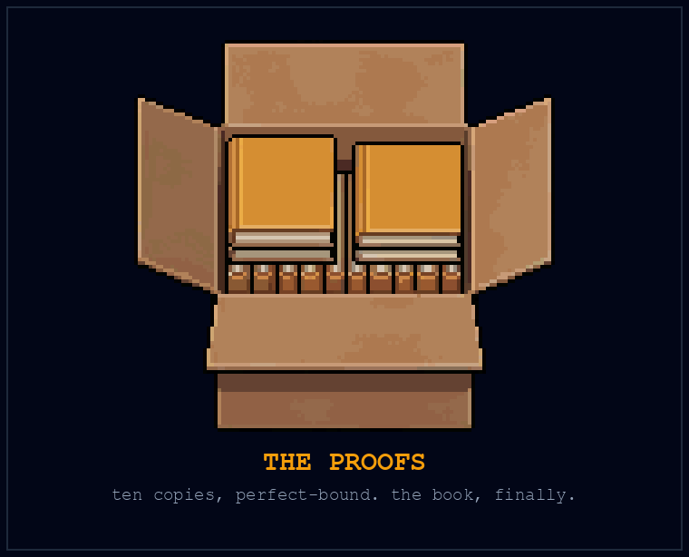
Elijah drove south on a Thursday in late winter, three years and some weeks after the toast, and the drive was the same drive from Chapter 6 run in reverse: shoulders climbing gradually up toward his ears as the country closed in, wood and weather giving way to billboards, the check-engine light staying dark the whole way because Curtis had fixed it for two dollars in another life. Past Cloverdale he took the long way, on purpose, through the hills behind what had been his grandmother’s place, and slowed where the madrones stood in the wet, shrugging off their bark the way they do, red under grey, burned down and come back how many times now. He did not stop. You don’t need to stop for the things you’re carrying with you.
His mother called at 9:40 Sunday, four days before, right on schedule, the radio and the sink running behind her voice. She had read it twice. “I kept hearing you try to tell me this on the phone,” she said. “For three years, honey. It reads better than it sounded.” A pause, the pot going into the rack. “The part with the trees is the best part. Your grandmother would say you finally listened.” And then, because her frame had always had room in it for everything that mattered: “Manny says to tell you you were right about the pressure switch.”
The Bear Flag had not changed, which was the eeriest thing it could have done. Same sticky wood, same neon, same television nobody was watching, the same corner table where three realtors had once toasted the dismissal of three people who were not there to raise a glass. The beer was five dollars now. He ordered one, and sat where he had sat with the laptop and the CSS tutorial and the 40 percent battery, and at the far end of the bar, because history doesn’t repeat but it does like a good seat, somebody’s laptop was glowing, somebody grinding away at teaching themselves something after hours.
He took a copy of the book out of his jacket and set it on the bar.
On the television above the liquor, sound off, a panel of serious people was arguing about the newest model release, chyrons doing the work of sirens. Nobody in the bar looked up. That was the other thing three years had taught him: a headline could announce a change without telling him how anybody was living through it. For that he had learned to ask someone, and wait for an answer.
Three years. Long enough to lose the pleasure of being right about everything he feared. Long enough for Devendra to arrive with the children, for Frank to put his name on a different bench, for a delivery sheet to acquire Rosa’s instruction in Curtis’s careful handwriting: prepared, less spicy. The route still needed money beyond June. Reuben still had unanswered questions. Nobody had mistaken a stack of forms for dinner.
He put his phone beside the book. There was a message from the kitchen: the afternoon route was covered. He read it twice, then turned the screen down.
The first time he had sat here, he thought the future was a thing you could show someone on a laptop. Now it had addresses.
He raised the glass. Not high. This is not that kind of bar, and it never was.
“Congratulations,” he said, quietly, to the corner table, to the laptop at the end of the bar, to the whole grinding hopeful improbable room, and for the first time in three years the word came out meaning what it says. There was no forecast in it this time. Just relief at the ordinary, unfinished work waiting for him at home.
He finished half the beer, tipped like a man who used to get tipped, and stood up. The book stayed on the bar, on the exact stretch of wood where he had once slid a napkin across to three men he’d thought he was saving. He’d believed, that night, that he was handing them a telescope. He had been three years early and one page short. This time the pages were attached.
He left it there and walked out into the winter air, north in his chest already, and if you want to know what happened to that copy, check the cover of this one.
You’re holding it.
Questions for a Food Baseline
This is a discussion brief, not an ordinance or a claim of legal authority. Use it with affected residents, workers, food providers, relevant specialists, and public institutions.
The proposal
Make adequate food available regardless of employment or ability to pay. Use automation where it demonstrably helps supply that food, while preserving effective existing methods and services. Keep the person receiving food at the center of the account.
The proposal does not require abolishing restaurants, paid employment, or food sold above the baseline. It does require discussing how a dependable baseline will be provided, including for people who cannot prepare or store ingredients.
Questions worth bringing to the table
- Need: Who lacks dependable access now? What do they say is missing? Include people outside existing membership lists and people unable to attend meetings.
- Food: What constitutes suitable and sufficient provision across dietary needs, seasons, and living circumstances? Who has the relevant expertise to evaluate it?
- Work: Which tasks are already well served? Which are difficult to provide? What can a proposed machine actually do, and what remains human work?
- Access: How does someone request or receive food without money, a smartphone, transport, or proof of employment? What happens when a person disagrees with an organizer?
- Provision: Who covers equipment, operating costs, maintenance, remaining labor, storage, and distribution? Which commitments are real, and how long do they last?
- Continuity: What happens to the meal when a machine, crop, vehicle, funding source, or organization fails? Is the alternative confirmed?
- Workers: Who gains or loses income, time, discretion, or bargaining power? How do the people doing the work participate in the decisions?
- Authority: Which existing permissions, responsibilities, and public processes apply? Who is accountable for resolving disputes and correcting harm?
- Evidence: What comparison would show that a proposed change helps? Who checks the result? What would make us revise or stop it?
A bounded first proposal
Describe a small trial in one page: the need, partners, task, recipient route, available resources, duration, comparison, and review date. Keep the existing service operating while the trial runs. State what has not yet been arranged.
Don’t present this page as a universal legal template. It grants no tax exemption, power to terminate a contract, suspension of other rules, or immunity from a claim. A proposed service still has to work through the responsibilities that apply to it.
A community can endorse the goal and still disagree about the means. Evidence should inform that disagreement. It doesn’t eliminate the need for judgment, public participation, and decisions people can challenge.
The purpose of the brief is to make the next conversation concrete enough to improve the proposal.
Works Cited
These sources support particular claims, not the book’s entire proposal. Original documents establish what someone wrote or did; research studies test narrower questions; institutional and company histories supply context from their own perspectives. A historical analogy remains an argument the reader can challenge. Fictional scenes, the Thanksgiving 2027 forecast, and the proposed food guarantee are not findings of the sources below.
Food, work, and access
- Food security: FAO, An Introduction to the Basic Concepts of Food Security (2008). The guide distinguishes availability, access, utilization, and stability. Producing enough food does not by itself ensure that a household can obtain and use it.
- Agricultural automation: FAO, The State of Food and Agriculture 2022: Leveraging Automation in Agriculture for Transforming Agrifood Systems. An institutional synthesis of opportunities and adoption barriers, including the position of smaller producers. It does not demonstrate universal provision by an autonomous farm.
- Employment exposure: International Labour Organization, Generative AI and Jobs: A Refined Global Index of Occupational Exposure (2025), with the 2025 update. These estimates concern tasks potentially affected by generative AI. Exposure is not a count of observed layoffs or a prediction that every exposed job disappears.
- Workers’ conditions: Better Work Jordan, Annual Report 2024: An Industry and Compliance Review, reporting January to December 2023. ILO and IFC assessment and survey evidence. The factory case discussed in Chapter 7 appears in the summary findings; the report expressly distinguishes its severe violations from typical conditions in the sector.
- Common rights and enclosure: UK Parliament, Enclosing Land. An institutional historical overview of changes to land use and common rights. Common land did not mean unrestricted access for every person.
- Garden machinery: FarmBot, Tools. Manufacturer documentation of particular seeding, watering, and weeding functions. It establishes the advertised design and tasks, not independent results for complete diets or delivery to households.
- Growing sites: US Environmental Protection Agency, Urban Agriculture. Guidance on site history and potentially contaminated land. It is background for evaluating a site, not a safety finding about the fictional garden.
- Living soil: University of Minnesota Extension, Soil Biology. Extension guidance on soil organisms and their different functions.
- Waste pathways: US Environmental Protection Agency, Learn About Aquatic Trash. Background on how waste reaches waterways. The behavioral effects of a proposed cleanup machine would require their own evaluation.
Useful capability and its limits
- John Jumper and colleagues, Highly Accurate Protein Structure Prediction with AlphaFold, Nature 596 (2021), 583–589. Original research on protein-structure prediction. Better structural information can aid research; a predicted structure is not itself a treatment.
- Jonathan M. Stokes and colleagues, A Deep Learning Approach to Antibiotic Discovery, Cell 180 (2020), 688–702.e13. Original laboratory research using a neural network to identify antibacterial candidates, followed by experiments including mouse infection models. This is not evidence of an established general cure in humans. The open manuscript corresponds to PMID 32084340; the original article is distinct from its separately indexed correction.
- Sellafield Ltd, Sellafield Robotics: Using Spot More for Spotless Nuclear Clean-up (23 March 2023). An operator’s account of remotely operated inspection and cleaning in hazardous areas. It documents a particular deployment, with people and specialist equipment, rather than autonomous removal of every kind of toxic waste.
- National Institute of Standards and Technology, Artificial Intelligence Risk Management Framework: Generative Artificial Intelligence Profile, NIST AI 600-1 (July 2024). The final publication identifies risks including erroneous outputs, privacy loss, harmful bias, security failures, and environmental effects. These concerns require attention alongside the distribution of economic benefits.
Intelligence and forecasts
- Ashish Vaswani and colleagues, Attention Is All You Need (2017). The original Transformer paper. Its architecture and reported experiments do not establish an AGI date.
- I. J. Good, Speculations Concerning the First Ultraintelligent Machine, Advances in Computers 6 (1965), 31–88. A facsimile of the essay, hosted by Virginia Tech. The intelligence-explosion argument is a conditional prospect, not a demonstrated sequence of unlimited improvement.
- Vernor Vinge, The Coming Technological Singularity: How to Survive in the Post-Human Era (1993). Author-hosted text of the VISION-21 paper. Its thirty-year forecast belongs to its 1993 context and does not substantiate this book’s 2027 expectation.
- Eliezer Yudkowsky, Three Major Singularity Schools (30 September 2007), hosted by Machine Intelligence Research Institute. An author’s conceptual distinction among accelerating change, an event horizon, and an intelligence explosion. Useful for understanding the term’s different meanings, not independent confirmation of any forecast.
Historical cases
The case numbers match the precedents and Appendix D. Where a source is a company history, archive description, or later scholarly interpretation, that status is stated rather than presented as an eyewitness record.
P-01: Reading and moral concern
Ana Vogrinčič, The Novel-Reading Panic in 18th-Century England: An Outline of an Early Moral Media Panic (2008). Historical scholarship on concerns about novel reading. Richard Brinsley Sheridan’s The Rivals (1775), Act I, supplies an original literary example of hostility to circulating libraries. A character’s speech illustrates a debate; it does not measure how everyone felt.
Jane Austen, Northanger Abbey, Chapter 5 and Chapter 25, public-domain text, Project Gutenberg. Primary literary testimony: the narrator defends novels while the story examines mistaken inferences. Fictional incidents are distinguished from evidence about real readers.
P-02: Bell at the fair
Alexander Graham Bell, letter to Alexander Melville Bell and Eliza Symonds Bell, 27 June 1876, Library of Congress transcript. Bell describes his demonstration and the reactions of William Thomson and Emperor Dom Pedro. The Library’s Inventing Telephones at the Centennial supplies historical context for the telephone and the exhibition’s machinery. Neither establishes a universal rule about what crowds or experts can recognize.
Bell’s official transcript PDF, pages 1–2, distinguishes his demonstration from the audience reactions reported to him by Willie Hubbard. The closing discussion records a proposed alliance, not a completed agreement.
P-03: The aviation forecast
New York Times, Flying Machines Which Do Not Fly (9 October 1903), with an accessible transcription of the editorial. This is one newspaper’s prediction, not a survey of aeronautical opinion.
Wilbur Wright, letter to the Smithsonian Institution, May 30, 1899, archival transcription. NASA Glenn, Wright 1901 Wind Tunnel, historical engineering account. The two sources support the reading request and experimental work that precede the later flight.
P-04: Road regulation
Locomotives Act 1865, 28 & 29 Vict., chapter 83, especially section 3. Original statute specifying operating restrictions, including a person carrying a red flag ahead of the vehicle. The law alone cannot establish its eventual economic effects.
House of Lords debate, May 26, 1865, columns 867–872, on the Locomotives on Roads Bill. A primary record of competing arguments and participants’ reported experiences. Speeches do not establish either the safety of the machines or the later effects of the law.
P-05: Ming voyages
Hong Kong Government, Exhibition Follows the Footsteps of Zheng He (21 February 2006), announcing an exhibition at Hong Kong Museum of History. Institutional context for the seven voyages of 1405–1433. For a participant’s account, see Ma Huan, Ying-yai Sheng-lan: The Overall Survey of the Ocean’s Shores, translated by J. V. G. Mills (1970), identified in the Indiana University library catalogue. The catalogue identifies the edition; it is not a substitute for reading the translated text.
Edward L. Dreyer, Zheng He: China and the Oceans in the Early Ming Dynasty, 1405–1433 (Pearson Longman, 2007), appendix, translations of primary sources, especially the Liujiagang inscription on printed pages 191–193. This is the expedition’s account, in a modern translation; its claims of order and protection require recognition of the speaker’s position.
P-06: Copernican astronomy
Nicolaus Copernicus, De Revolutionibus Orbium Coelestium (1543), digitized edition and collection description, Library of Congress. The work places a moving Earth among the planets. The record does not by itself reconstruct the entire later history of its reception.
Copernicus, dedication to Paul III, Harvard Classics translation hosted by Ohio State. Sachiko Kusukawa, Copernicus’s Book, Cambridge History and Philosophy of Science (1999). Together they distinguish Copernicus’s stated purpose and supporters from the framing added by Osiander during publication.
P-07: Horses and measurement
US Department of Agriculture, Farm Production Practices, Costs, and Returns, Statistical Bulletin 83 (1949), especially table 14, printed page 45. Historical estimates put the combined population of horses and mules on farms at its peak in 1918. The report describes a transition involving machinery, feed, wages, and other costs; it does not isolate one cause or measure all working animals everywhere.
Science Museum Group, Original Indenture of Agreement for Erection of a Rotative Engine, March 1, 1786, object 1908-185. Museum catalogue of a particular contract and its business context. It supplies responsibilities and payment terms; it is not a complete account of all consequences of mechanization.
P-08: The agricultural transition
Amanda Mummert, Emily Esche, Joshua Robinson, and George J. Armelagos, Stature and Robusticity During the Agricultural Transition: Evidence from the Bioarchaeological Record, Economics & Human Biology 9 (2011), 284–301. A scholarly synthesis of skeletal evidence. Its account of health burdens and variation should not be converted into a claim that every farming population experienced the same change.
For an original study combining skeletal and genetic evidence, see An Integrative Skeletal and Paleogenomic Analysis of Stature Variation Suggests Relatively Reduced Health for Early European Farmers, Proceedings of the National Academy of Sciences (2022). Its European sample and adjustments for ancestry limit how widely the result can be generalized.
UNESCO World Heritage Centre, Neolithic Site of Çatalhöyük. Institutional description of the settlement’s layout and surviving material culture.
Clark Spencer Larsen and colleagues, Bioarchaeology of Neolithic Çatalhöyük Reveals Fundamental Transitions in Health, Mobility, and Lifestyle in Early Farmers, Proceedings of the National Academy of Sciences 116 (2019), 12615–12623; open manuscript. Original research, especially manuscript pages 5–6; includes contrasting indicators rather than uniform deterioration.
P-09: The Luddites
UK National Archives, The Proclamation of Ned Ludd. An original proclamation with archival transcription and historical context. It supports discussion of labor conditions, threats, and repression, without reducing all participants to a single motive.
Kevin Binfield, Luddite History, excerpt from the historical introduction to Writings of the Luddites (Johns Hopkins University Press, 2004). Historical scholarship on the particular trades, negotiations, and material conditions behind the protests.
P-10: Musicians and recorded sound
Music Performance Trust Fund, About. The fund’s institutional account traces its establishment in 1948 to agreements between the American Federation of Musicians and recording companies. It documents a negotiated mechanism for financing admission-free performances. It does not imply that every playback of a recording generates a payment to this fund.
University of Maryland Special Collections in Performing Arts, The Recording Ban of 1942, in Modern Songs of War and Conflict, curated by Ben Jackson. Institutional account of the commercial recording dispute, inventories, and different settlement dates. The independent fund’s subsequent establishment remains separately documented by its existing bibliography entry.
P-11: Torches of Freedom
Vanessa Murphree, Edward Bernays’s 1929 “Torches of Freedom” March: Myths and Historical Significance, American Journalism 32 (2015), 258–281. Original historical research questioning the event’s later mythology, including the account of a uniformly receptive press. A contemporary photograph of Nancy Hardin and Edith Lee, dated 31 March 1929, is held by the Library of Congress. The photograph records an event, not its long-term causal effect on smoking.
Edward L. Bernays, Propaganda (New York: Horace Liveright, 1928), chapter IV, pages 54–56. Primary text describing a hypothetical piano-marketing method. It establishes what Bernays advocated, not universal effectiveness.
Vanessa Murphree, Teaching Our Journal: Edward Bernays’s 1929 “Torches of Freedom” March, American Journalism. The researcher’s account of methods, archival limitations, and contemporary press responses, supplementing the existing 2015 article entry.
The Library of Congress digital-object record, digital ID ds.07375, supplies another locator for the photograph cited above.
P-12: Bronze Age disruption
A. Bernard Knapp and Sturt W. Manning, Crisis in Context: The End of the Late Bronze Age in the Eastern Mediterranean, American Journal of Archaeology 120 (2016), 99–149. Archaeological scholarship emphasizing regional differences and the interaction of possible causes. The case is not evidence of a single synchronized collapse caused by one variable.
Institute of Nautical Archaeology, Uluburun Late Bronze Age Shipwreck Excavation. The excavating institution’s account of the vessel, surviving cargo, and interpretation. The wreck predates the later crisis; it does not identify that crisis’s cause.
P-13: Trithemius and media
Johannes Trithemius, De Laude Scriptorum, Mainz: Peter Friedberg, 1494, digitized printed edition held by Paderborn University Library. The treatise was composed in 1492. Its defense of scribal work appeared in print. Jeremy Norman’s historical note on vellum and paper explains the preservation argument. Neither source warrants turning a nuanced position into wholesale hostility to printing.
Bibliothèque nationale de France, La Bible de Gutenberg, especially “Un rare témoin de la date d’impression de la Bible.” Institutional collection study including transcribed inscriptions. Supports the Cremer example without supplying an employment history of all scribes.
P-14: Quartz watches
Seiko Museum, The Quartz Crisis and Recovery of Swiss Watches. A manufacturer-associated museum’s history of quartz competition and Swiss responses. It includes Swiss technical participation and economic pressures, complicating the story that one side simply failed to see the invention.
CSEM, Historical Timeline, entries for 1962 and 1967. Institutional history of electronic-watch research.
Swatch Group, Company History, entry for 1983. Manufacturer’s account of product and production design.
P-15: Homesteading
US National Archives, Homestead Act of 1862, original act and transcript. National Park Service, Homestead History and Culture, supplies the necessary context of prior Indigenous habitation and displacement. The legal transfer of land must not be confused with the land having been empty or universally available.
P-16: Mail-order houses
Cynthia E. Johnson, House in a Box: Prefabricated Housing in the Jackson Purchase Cultural Landscape Region, 1900 to 1960, Kentucky Heritage Council, edited by Rachel Kennedy. An institutional historical and field-survey study of precut and other prefabricated houses, including Sears and competing producers. It documents manufacturing and distribution methods that still required land, assembly, and local work.
P-17: A company under pressure
Kodak, Milestones. Company chronology documenting digital work and emergence from Chapter 11 in 2013. It is evidence against the claim that Kodak never participated in digital imaging, but an interested corporate history is not a complete explanation of the company’s financial difficulties.
Swiss Camera Museum, 1975: The Invention. Institutional account of Sasson’s prototype.
P-18: Related capabilities, new uses
Fujifilm, Healthcare and Corporate History. The company’s account describes applications of its materials and imaging expertise in other fields, including healthcare. This documents its stated strategy and activities, not a controlled comparison proving why one company succeeds and another struggles.
Fujifilm Holdings, 90th Anniversary Corporate History, sections on the transition from photographic film and the 2004 plan. Corporate retrospective; the legacy URL redirects to the current anniversary page.
Fujifilm, ASTALIFT History, Japanese brand chronology, especially 2004 and 2007. Used for commercialization history, not product efficacy.
P-19: Victory gardens
US Office of War Information, Plant a Victory Garden (1943), government poster preserved by University of North Texas. National Park Service, The World War II Home Front, provides the broader mobilization context. Estimates about garden vegetables must not be restated as shares of all food or all nutrition.
- United States Department of Agriculture, Committee on Victory Gardens, The 1943 Victory Garden Program. Reprinted by the US Office of Civilian Defense, March 1943. Original program document, especially pages 3–4 on allotments, water, advice, tools, school-garden staffing, and preservation. It records planned arrangements rather than measured nationwide compliance.
- National Park Service, Victory Gardens on the World War II Home Front. Institutional historical account, including gardens maintained by incarcerated Japanese Americans. Distinguishes residential gardens from camp production farms and gives context that aggregate harvest figures cannot supply.
P-20: An argument in circulation
Thomas Paine, Common Sense (1776). Library of Congress collection record for the book and exhibition context. These identify the work and its argument for independence. Its circulation does not establish that one pamphlet alone caused a revolution.
- University of Michigan, Clements Library, Going Viral in 1776. Exhibition descriptions of Bell, Bradford, and London editions of Common Sense. Supports the paper wrapper, two-shilling price, anonymous issue, printing dispute, and handwritten additions in the library’s Almon copy. Conflicting sellout intervals on the page are not used.
- University of Minnesota Law Library, Common Sense, Philadelphia, 1776, Treasures of the Riesenfeld Center. Description of an enlarged Bradford edition and the author-printer dispute over profits. The account establishes the described competing positions, not an independent audit of Bell’s books.
P-21: Whole Earth Catalog
Whole Earth Catalog, Fall 1968, digitized issue indexed by Whole Earth Index. An original example of gathering tools and practical information. Steve Jobs’s 2005 Stanford commencement address is the primary source for his later comparison of the catalog to Google in paperback form. His analogy is a recollection, not a claim that the catalog already provided an internet search engine.
- Whole Earth Catalog, Fall 1968: sample pages reproduced with later anniversary annotations. The contents and purpose/function page establish examples and selection criteria; the added availability warnings belong to the later reprint. Distinguish the two layers when citing it.
- David Senior, Museum of Modern Art Library, Access to Tools: Publications from the Whole Earth Catalog, 1968–1974 (2011). Institutional exhibition history of the catalog, affiliated Truck Store, and reader contributions. Supports correcting an absolute claim that the organization sold none of the reviewed goods directly.
P-22: Y2K preparation
US General Accounting Office, Year 2000 Computing Challenge: Lessons Learned Can Be Applied to Other Management Challenges, AIMD-00-290 (2000). A government review of preparation and management practices. It documents substantial work; it cannot directly observe the global outcome of a world in which that work never happened.
For AIMD-00-290, see especially printed pages 29–32 of the complete report for HUD’s dependency inventory and the reported Oak Ridge file-transfer failure and tested tape fallback. These cases document preparation and recovery, not a world observed without remediation.
- US General Accounting Office, Social Security Administration: Year 2000 Readiness Efforts Helped Ensure Century Rollover and Leap Year Success, AIMD-00-125 (19 April 2000), including subsequent recommendation-status updates. Supports continued contingency planning and the explicitly later April 2004 separation of validation testing from development.
P-23: Internet forecasts
Clifford Stoll, Why the Web Won’t Be Nirvana, Newsweek (February 1995), also known by the print title “The Internet? Bah!” The publisher’s archival version is the source for this dated forecast. The case concerns Stoll’s argument, not a representative sample of every critic of the internet.
Clifford Stoll, attributed excerpt of his 1995 Newsweek essay, in Elon University’s Imagining the Internet archive. An additional access point for the particular claims discussed here.
Tim Smith and François Flückiger, Licensing the Web, CERN. Institutional history reproducing the 1993 release terms and describing the 1994 licensing decision. Specific software permissions are distinguished from universal internet access.
Historical context for provision
British Restaurants (Chapter 11)
UK Parliament, Hansard, British Restaurants, May 28, 1941, House of Commons, volume 371, columns 1853–1854. Recorded questions and ministerial replies about local organization.
UK Parliament, Hansard, British Restaurants and Works Canteens, October 1, 1941, House of Commons, volume 374, columns 572–573. Supplies and private-caterer objections.
UK Parliament, Hansard, Food Distribution, October 2, 1941. Includes the Fishmongers’ Hall complaint. Statements in debate document participants’ arguments rather than independently measured outcomes.
UK Parliament, Hansard, British Restaurants (Prices), March 17, 1942, Written Answers, Food Supplies. Official financial principles.
New Communities (Chapter 12)
SNCC Digital Gateway, New Communities Formed in Southwest Georgia. Institutional civil-rights history with listed archival and oral-history sources.
Ellen Sabina, A Conversation with Shirley Sherrod, Maine Farmland Trust, published February 29, 2024; interview conducted June 2023. Participant testimony, attributed as such in the chapter.
Vienna municipal housing (Chapter 13)
City of Vienna, Municipal and Provincial Archives, From Red Vienna to the Ständestaat, 1918–1938. Institutional retrospective on municipal government and housing.
City of Vienna, Rathauskorrespondenz, Der Karl-Marx-Hof ist 60, October 11, 1990. German anniversary notice describing the complex and ongoing renovation plans.
Sources for the retained epigraphs
The entries below identify the work or institutional record supporting each attribution. An institutional attribution does not establish the first occasion on which a saying was used. Dialogue from a novel belongs to its character and scene.
- Preface, Hunter S. Thompson: Simon & Schuster’s description of Fear and Loathing at Rolling Stone identifies the ticket-and-ride saying with Thompson. This supports the name attribution, without claiming a verified page in the 1971 novel.
- Chapter 0, William Gibson: Interview in Scientific American (26 August 2011). Gibson acknowledges and discusses the formulation quoted to him, including “not very evenly distributed.” This is a documented use, not a claim of its first appearance.
- Chapter 1, Vernor Vinge: The opening of The Coming Technological Singularity (1993), listed above. Read the prediction with its original date.
- Chapter 2, I. J. Good: Speculations Concerning the First Ultraintelligent Machine (1965), printed page 33. The condition about retaining control is part of the sentence, not an optional qualification.
- Chapter 4, J. B. S. Haldane: The closing passage of the title essay in Possible Worlds and Other Essays (1927), online transcription. The epigraph retains his framing as a personal suspicion.
- Chapter 5, Arthur Eddington: The Nature of the Physical World (1928; digitized from a 1929 impression), chapter IV, printed pages 74–75. The second-law passage concerns physical theory, not a forecast about AI capabilities.
- Chapter 10, Alan Kay: Computer History Museum, From Alto to AI. Institutional attribution of the future-and-invention saying to Kay. This edition makes no claim to have established the date or transcript of its first delivery.
- Chapter 12, Margaret Mitchell: Gone with the Wind (1936), chapter II. Gerald O’Hara speaks the passage about land. It is fictional dialogue, not a factual guarantee of land’s permanence or value.
- Chapter 14, Ernest Hemingway: The Sun Also Rises (1926), chapter XIII. Mike Campbell’s exchange about bankruptcy supplies the epigraph.
- Chapter 15, Franklin D. Roosevelt: Letter to All State Governors on a Uniform Soil Conservation Law (26 February 1937), transcript hosted by the American Presidency Project.
- Chapter 18, Dwight D. Eisenhower: Eisenhower Presidential Library quotation record, identifying the National Defense Executive Reserve Conference remarks of 14 November 1957. Eisenhower introduced the planning maxim as a saying he had heard in the Army; its use here does not claim he invented it.
Editorial provenance
Earlier bibliographies and the detailed evidence review remain with this edition’s editorial records. Sources for deleted passages are research history, not additional proof for the revised argument. The review distinguishes checked text from catalogue identification and records unresolved retrieval or edition questions.
Executive Reference Guide
What if it all goes right?
Use AI and robots to make survival more secure. Begin with adequate food available to everyone, regardless of employment or money. A person who loses a job should still be able to eat. Restaurants, paid work, and meals sold above the baseline can coexist with that goal.
Free to the recipient does not mean costless to provide. Equipment, maintenance, remaining labor, and distribution need dependable provision. Lower production costs don’t automatically settle access.
Four separate questions
| Question | What would answer it? |
|---|---|
| Capability | Evidence that the system performs the specified tasks reliably. |
| Improvement | Tested improvements, including failures and limits of the process. |
| Deployment | Useful operation under the actual physical and organizational conditions. |
| Access | People receiving the result on terms they can use, including without money. |
AGI is used here for broad, adaptable intellectual capability. RSI means recursive self-improvement. Neither term means that universal robotic food service has been delivered.
The forecast
The author’s personal AGI expectation is U.S. Thanksgiving, November 25, 2027. Timing is uncertain. That date is not a promised RSI milestone, a mathematical conclusion, or a delivery date for a household robot. Food work remains useful if the forecast is wrong.
The nine-stage horizon
Stages 1–5 consider commercialization, restriction, authority, access, and human responses. They are possible pressures and choices, not an inevitable sequence. Stages 6–7 imagine much more advanced systems, space activity, and biological change. Stages 8–9 explore cosmic and simulation possibilities. The later stages are increasingly speculative and do not supply evidence for the practical proposal.
Mutually assured survival is the author’s conviction and organizing goal, not a necessary consequence of intelligence.
The practical sequence
Food first, within a larger program of safe housing, health, and environmental repair. Different needs can be addressed at the same time. A priority is a way to concentrate effort, not a waiting list for people in urgent need.
Follow one need through a task, tools, human and machine roles, execution, and checked result. Count what actually reaches a person. Preserve access during experiments. Compare against simpler and existing methods.
A first move
Ask how a proposed gain in productivity reaches the people affected. Bring workers, providers, recipients, and public decision-makers into the answer. A small trial can test a task; a continuing service also needs resources, responsibility, and terms people can rely on.
Wide lens, narrow focus.
The Precedent Ledger
Twenty-three historical cases, P-01 through P-23, accompany the argument. Each case asks about a mechanism and its limits. None proves a date for AGI or a universal law about progress.
How to use the ledger
Read the case, then identify one similarity and one difference from your situation. Ask who benefited, who bore costs, and what would count against the proposed lesson. Choose a practice that fits your resources and circumstances. Discomfort alone is not evidence that an exercise is useful.
The Ledger
| ID | Precedent | Date | Closes |
|---|---|---|---|
| P-01 | The Reading Rage | Eighteenth and early nineteenth centuries | Preface |
| P-02 | The Voice at the Fair | 1876 | Chapter 0 |
| P-03 | One Million Years, Give or Take | 1903 | Chapter 1 |
| P-04 | The Red Flag | 1865 | Chapter 2 |
| P-05 | The Court and the Fleet | 1405–1433 | Chapter 3 |
| P-06 | The Moving Earth | 1543 | Chapter 4 |
| P-07 | The Horse and the Ledger | Eighteenth to twentieth centuries | Chapter 5 |
| P-08 | The Grain Trap | c. 9500 BC | Chapter 6 |
| P-09 | The Frame-Breakers | 1811–1816 | Chapter 7 |
| P-10 | The Robot in the Orchestra Pit | 1929–1948 | Chapter 7 |
| P-11 | Torches of Freedom | 1929 | Chapter 8 |
| P-12 | The Networks Behind the Bronze | Fourteenth to twelfth centuries BC | Chapter 9 |
| P-13 | The Abbot and the Press | 1492–1494 | Chapter 10 |
| P-14 | Quartz and the Assembly Line | 1962–1983 | Chapter 11 |
| P-15 | One Hundred Sixty Acres | 1862 | Chapter 12 |
| P-16 | The House That Came by Mail | Early twentieth century | Chapter 13 |
| P-17 | The Company Under Pressure | 1975–2013 | Chapter 14 |
| P-18 | The Mirror Twin | 2000s | Chapter 14 |
| P-19 | Organizing the Harvest | 1943–1944 | Chapter 15 |
| P-20 | An Argument in Circulation | 1776 | Chapter 16 |
| P-21 | Access to Tools | 1968 | Chapter 17 |
| P-22 | The Apocalypse That Ran On Time | 1999–2004 | Chapter 18 |
| P-23 | What the Forecast Missed | 1993–1995 | Conclusion |
The rules, in one breath each
- P-01. Ask what changed and what the concern actually predicts.
- P-02. Separate a compelling demonstration from a delivered service.
- P-03. Hold optimistic and pessimistic forecasts to the same evidence.
- P-04. Read the rule before turning it into a morality play.
- P-05. Examine what sustains a capability before assuming it will persist.
- P-06. Leave room for meaning without making humanity the center of every explanation.
- P-07. Measure the task without pricing the person as obsolete.
- P-08. Count welfare and distribution separately from adoption.
- P-09. Take the livelihood claim seriously before judging the tactic.
- P-10. Study changes in the terms, not only whether the machine was stopped.
- P-11. Ask who benefits from a message and check what it asks you to believe.
- P-12. Name the dependency and the disruption you are preparing for.
- P-13. Choose a medium by the job it does.
- P-14. Examine specific adaptations and their costs.
- P-15. Ask whose land and whose opportunity the story describes.
- P-16. Count the work outside the box.
- P-17. Verify what a company actually did before using it as a warning.
- P-18. Look for transferable skills without promising effortless reinvention.
- P-19. A vegetable harvest is a contribution, not a complete diet.
- P-20. Give people something clear enough to discuss and verify.
- P-21. Build a useful toolset, not a collection of promises.
- P-22. Evaluate precautions by the risk and evidence, not by whether disaster supplied a spectacle.
- P-23. Let actual results change the plan, including your optimistic plan.
Sources and limits
Appendix B maps sources to these cases and identifies the archived research bibliography. Historical interpretation remains distinct from the events it describes. Compare original records where possible, treat quotations in context, and record corrections. A precedent is a prompt for investigation, not permission to ignore a present objection.
Computing You Can Use
A cyberdeck is a custom personal computer, often built around a particular set of interfaces and tasks. It can be an enjoyable way to learn, repair, and adapt equipment. It is optional here.
Start with the device you have
A phone or existing computer may already support a task log, a pickup schedule, photographs taken with consent, or saved reference material. Some applications and content work offline when prepared for that use. Check the particular device and task rather than assuming that a disconnected phone becomes useless.
A shared computer may offer capabilities your own device lacks. A custom build becomes worthwhile when you can name the missing function and support the resulting machine. It shouldn’t become the price of participating in mutual aid.
Keep the capabilities separate
An offline library stores reference material. A language model generates responses that still need checking. A radio communicates within the capabilities of its hardware, configuration, and operating conditions. Combining them in a case doesn’t make every answer correct or every communication dependable.
A machine operating locally still needs access controls, maintenance, and appropriate handling of private information. It is not automatically unhackable. A live network connection is not an air gap. Choose the terms by the actual connectivity, as discussed in Chapter 11.
For power, use a compatible, documented arrangement. Choosing power equipment includes its compatibility, support, and maintenance; a custom battery system is a separate engineering task.
One useful offline check
With the device you already have, save a non-sensitive reference you are permitted to copy. Disconnect from the relevant network and confirm that you can open it, read it comfortably, and locate what you need. Record its source and date so someone can check whether it has become outdated.
That exercise establishes one limited capability: this copy can be read without that connection. It doesn’t prove the source correct or turn the device into a complete emergency system.
If your next task requires additional equipment, ask someone experienced with that task to help compare options. Use communications equipment within the permissions and rules applicable to the actual use. A book about food access need not become a radio or intrusion manual to make computing useful.
The best machine for this project is the one that helps the people doing the work and can be kept working. Sometimes it fits in a custom case. Sometimes it is already in your pocket.
Illustration credits
& design notes
Original botanical and mechanical line drawings were created with Codex for this edition as editable SVG artwork. The three part-divider illustrations and four photographs or artworks have been replaced for this design. Narrative and argument text are unchanged; image captions have been corrected where required.
Typeset in Source Serif 4 and Source Sans Pro, designed by Frank Grießhammer and Paul D. Hunt respectively, published by Adobe under the SIL Open Font License 1.1.
Pacific Madrone Arbutus menziesii Peeling tree bark.jpg
Photo by and (c)2007 Jina Lee. CC BY-SA 3.0. No additional source crop or retouch documented. Resized for layout; grayscale conversion in the print edition.
commons.wikimedia.org/wiki/File:Pacific_Madrone_Arbutus_menziesii_Peeling_tree_bark.jpg
creativecommons.org/licenses/by-sa/3.0/
{kind=link}
Atlas during testing.jpg
DARPA. Public domain. No additional source crop or retouch documented. Resized for layout; grayscale conversion in the print edition.
commons.wikimedia.org/wiki/File%3AAtlas_during_testing.jpg
www.darpa.mil/policies/usage-policy
{kind=link}
Black hole - Messier 87 crop max res.jpg
EHT Collaboration. CC BY 4.0. Inherited crop and TIFF-to-JPEG conversion by the Commons uploader. Resized for layout; grayscale conversion in the print edition.
commons.wikimedia.org/wiki/File:Black_hole_-_Messier_87_crop_max_res.jpg
creativecommons.org/licenses/by/4.0/
{kind=link}
Making a Jaguar car - Thinktank Birmingham Science Museum - robotic arms at work (8613698407).jpg
ell brown. CC BY-SA 2.0. No additional source crop or retouch documented. Resized for layout; grayscale conversion in the print edition.
commons.wikimedia.org/wiki/File%3AMaking_a_Jaguar_car_-_Thinktank_Birmingham_Science_Museum_-_robotic_arms_at_work_%288613698407%29.jpg
creativecommons.org/licenses/by-sa/2.0/
{kind=link}
Falcon Heavy Demo Mission (40126461851).jpg
SpaceX. CC0. No additional source crop or retouch documented. Resized for layout; grayscale conversion in the print edition.
commons.wikimedia.org/wiki/File:Falcon_Heavy_Demo_Mission_(40126461851).jpg
creativecommons.org/publicdomain/zero/1.0/
.jpg){kind=link}
Hubble ultra deep field high rez edit1.jpg
NASA, ESA, and S. Beckwith (STScI) and the HUDF Team; black-point adjustment by Noodle snacks. CC BY 4.0 (primary ESA/Hubble distribution). Inherited black-point adjustment by Noodle snacks. Resized for layout; grayscale conversion in the print edition.
commons.wikimedia.org/wiki/File:Hubble_ultra_deep_field_high_rez_edit1.jpg
creativecommons.org/licenses/by/4.0/
{kind=link}
The Sun by the Atmospheric Imaging Assembly of NASA's Solar Dynamics Observatory - 20100819.jpg
NASA/SDO (AIA). Public domain. Commons version has a different image extent from the linked square SDO source. This inherited framing is preserved. Resized for layout; grayscale conversion in the print edition.
commons.wikimedia.org/wiki/File:The_Sun_by_the_Atmospheric_Imaging_Assembly_of_NASA%27s_Solar_Dynamics_Observatory_-_20100819.jpg
www.nasa.gov/nasa-brand-center/images-and-media/
{kind=link}
Chess board with chess set in opening position IMG 5994.JPG
Bin im Garten. CC BY-SA 3.0. No additional source crop or retouch documented. Resized for layout; grayscale conversion in the print edition.
commons.wikimedia.org/wiki/File:Chess_board_with_chess_set_in_opening_position_IMG_5994.JPG
creativecommons.org/licenses/by-sa/3.0/
{kind=link}
Sophia (robot).jpg
ITU Pictures. CC BY 2.0. No additional source crop or retouch documented. Resized for layout; grayscale conversion in the print edition.
commons.wikimedia.org/wiki/File%3ASophia_%28robot%29.jpg
creativecommons.org/licenses/by/2.0/
{kind=link}
Prusa i3 - RepRap 3D printer printing.jpg
John Abella. CC BY 2.0. No additional source crop or retouch documented. Resized for layout; grayscale conversion in the print edition.
commons.wikimedia.org/wiki/File:Prusa_i3_-_RepRap_3D_printer_printing.jpg
creativecommons.org/licenses/by/2.0/
{kind=link}
Spot by Boston Dynamics.jpg
Jonte. CC BY-SA 4.0. No additional source crop or retouch documented. Resized for layout; grayscale conversion in the print edition.
commons.wikimedia.org/wiki/File%3ASpot_by_Boston_Dynamics.jpg
creativecommons.org/licenses/by-sa/4.0/
{kind=link}
Gutshof Nassanger Scheune-20220807-RM-161209.jpg
Reinhold Möller. CC BY-SA 4.0. No additional source crop or retouch documented. Resized for layout; grayscale conversion in the print edition.
commons.wikimedia.org/wiki/File:Gutshof_Nassanger_Scheune-20220807-RM-161209.jpg
creativecommons.org/licenses/by-sa/4.0/
{kind=link}
Israel Batch 3 (172).JPG
Mattes. Public domain dedication by Mattes. No additional source crop or retouch documented. Resized for layout; grayscale conversion in the print edition.
commons.wikimedia.org/wiki/File:Israel_Batch_3_(172).JPG
commons.wikimedia.org/wiki/File:Israel_Batch_3_(172).JPG
.JPG){kind=link}
Wikimedia Foundation Servers-8055 35.jpg
Victor Grigas. CC BY-SA 3.0. No additional source crop or retouch documented. Resized for layout; grayscale conversion in the print edition.
commons.wikimedia.org/wiki/File:Wikimedia_Foundation_Servers-8055_35.jpg
creativecommons.org/licenses/by-sa/3.0/
{kind=link}
Various hand tools and hardware items scattered on an old green workbench in a workshop.jpg
Shixart1985. CC BY 2.0. No additional source crop or retouch documented. Resized for layout; grayscale conversion in the print edition.
commons.wikimedia.org/wiki/File:Various_hand_tools_and_hardware_items_scattered_on_an_old_green_workbench_in_a_workshop.jpg
creativecommons.org/licenses/by/2.0/
{kind=link}
Topographical Map of Traditional Galloway.png
SFC9394; compass rose by Stefan-Xp. CC BY 2.5. No additional source crop documented. Local file is PNG despite its .jpg filename. Resized for layout; grayscale conversion in the print edition.
commons.wikimedia.org/wiki/File:Topographical_Map_of_Traditional_Galloway.png
creativecommons.org/licenses/by/2.5/
{kind=link}
An orbital sunrise crowns Earth's horizon (iss072e340644).jpg
NASA Johnson Space Center. Public domain. No additional source crop or retouch documented. Resized for layout; grayscale conversion in the print edition.
commons.wikimedia.org/wiki/File:An_orbital_sunrise_crowns_Earth%27s_horizon_(iss072e340644).jpg
www.nasa.gov/nasa-brand-center/images-and-media/
.jpg){kind=link}
ASIMO-2001.jpg
Liauzh. CC BY-SA 4.0. No additional source crop or retouch documented. Resized for layout; grayscale conversion in the print edition.
commons.wikimedia.org/wiki/File%3AASIMO-2001.jpg
creativecommons.org/licenses/by-sa/4.0/
{kind=link}
Image adaptations retain the relevant image licenses. Those licenses do not extend to the manuscript text.
Ten narrative plates were created with PixelLab and assembled for an earlier edition. These generated illustrations depict fictional scenes and are not photographs or evidence of actual deployments. The companion asset register records generation identifiers, component files and provider terms.